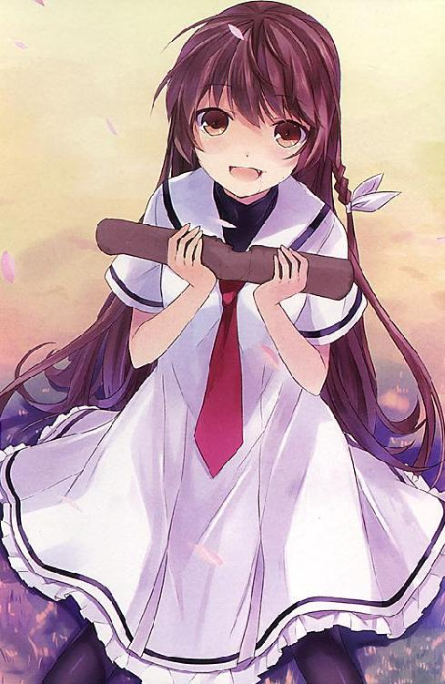

| 妹がゾンビなんですけど！ (スマッシュ文庫) | |
| 伊東ちはや | |
| PHP研究所 (2011) | |
妹がゾンビなんですけど！
著▼ 伊東ちはや
イラスト▼ ６Ｕ☆

ひとつ違いの兄と妹。当然、帰る家は一緒だ。
どこまでもどこまでも、同じ道を行くしかない。
黙々と前を歩く妹。
ツインテールにした淡い茶色の髪が揺れている。
振り返ることなくまっすぐ進む妹。
身長百四十二センチ。中学二年にしては小柄な彼女。
しかし、怒りのオーラをほとばしらせる細い肩は『近づくな危険』と張り紙をされた猛犬のように勇ましかった。
夕暮れ前。春が近づいて日の落ちる時間が遅くなったとはいえ、二月上旬の寒空の下。大鳥風貴は身を裂くような寒さに耐えながら大きくため息を吐いた。
遊歩道の終わりが近くなったとき、
「おい。姫ノ花。いい加減に機嫌をなおしてくれよ」
風貴は、黙々と前を行く妹にようやく声をかけた。
途端、ぱたりと足をとめた姫ノ花。しかし振り返らなかった。
「俺が悪かったって」
風貴は立ち止まった姫ノ花に詫びた。
姫ノ花はぎゅっと拳を握りしめたが振り返らない。
「お兄ちゃん、昨日の夜。私が言ったこと覚えてるよね？」
怒りを含んだ低い声。姫ノ花の第一声はそれだった。
「あ、ああ......」風貴は〝覚えてるよ〟とは言えず、ただ頷いた。
正直、忘れていたなんて言ったら本気で口を利いて貰えなくなる可能性がある。
風貴は引きつった笑みを浮かべた。
中学三年の冬。いよいよ本格化した受験勉強。入試まで一週間をきっていた。成績はとりわけよいわけでもなく、運動神経なんて語るに及ばないほどダメダメな風貴にとって、志望している公立高校への進学はエベレストを登るような難易度だ。行く末を心配した担任教師から特別授業と銘打った居残り授業を受けるのが風貴の日課になっていた。
（だって、四宮氷高に落ちたら明日春高に行くしかないんだろう？）
それだけは避けたいと風貴は思った。
『姫ノ花は百合姫女子も確実なんて言われてるのよ！ あんたもがんばりなさい！』
母親が毎日のように言う。
中学二年の姫ノ花。成績優秀（学年トップ）で、運動神経も抜群。ついでに言えば現役生徒会長だ。彼女が受験シーズンを迎えるのは一年後だが、難関といわれる百合姫女子高校の入試問題なんてちょいちょいと解いてしまいそうである。......いいや、そうなる。
百合姫女子は日本随一と言われる進学校だ。偏差値七十九という値がすべてを物語っている。
そんな学校に合格確実と言われている優等生の兄が志望校に落ちて滑り止めの明日春に通うとなると、親としての世間体はプラスマイナスゼロになってしまう。ちなみに明日春高校は〝おばかの収容所〟なんて呼ばれるようなところである。たし算ができればＯＫという、なんともフランクな入試問題で有名だ。
だから風貴は必死だった。一週間後に控えた入試のために放課後残って担任とマンツーマンで試験勉強に打ち込んでいた。母親の面子のためでもあったし、兄の威厳を保つためにもがんばっていたのだ。
「お兄ちゃん。今、何考えてるの？ べつのこと考えてるでしょう？」
ドスの利いた声に驚いて、風貴はハッと顔をあげた。
（しまった）
後悔しても遅かった。背中を向けたままの妹。ふるふると震える肩が怒りの大きさを表していた。このまま臨界点を突破したら、本当に口を利いてもらえなくなる。
風貴はコホンとわざとらしく咳をすると、
「ごめん。間に合わなくてごめんな」
すこし気恥ずかしさを感じながら頭を下げた。
実の妹に平身低頭で謝るなんて不思議な感覚だった。
けれども、この件は完璧に風貴が悪かった。謝るしかない。
実はこの日、風貴は姫ノ花と約束をしていた。午後四時半に中学の体育館裏に来てほしいと言われていたのだ。約束をしたのは昨晩のこと。
『明日なんだけど、知らない男の子に呼び出されてるの。何度も呼び出しを断っていたんだけど、しつこくて......。だから会ってハッキリさせてやろうと思うんだけど......。怖いからお兄ちゃん一緒に来て』
確かにそう言われていたのを風貴は覚えている。そして、
『おお、いいぞ。まかせろ！』
なんて気前のいい返事をしたのも覚えている。
しかし、風貴は約束を忘れてその時間は担任とともに面倒な数学の問題を解いていた。まともな居残り授業が行われていれば、風貴だって大事な妹との約束を忘れるはずがない。『迎え撃て！ 風貴！ この問題が解けなかったなら、私はお前と一緒に、心中する！』などと言い出した熱血担任教師の迫力に押されて『はい！ 先生！ 俺、どこまでもついていきます！』なんてついつい同調してしまった。そんな異様なテンションで難問を解くべく『ぬんぬん』いいながら格闘していたのである。一枚のプリントを前に、ぬんぬんと謎の言葉を呟きながらシャーペンを握りしめている中学生と、それを情熱のこもった眼差しで見つめる担任教師の姿は、他人の目から見れば異様な光景だっただろう。約束を思い出して急いで体育館裏に向かったのは午後五時を過ぎた頃。三十分の遅刻だった。
寒空の下。ぽつんとひとりぼっちで立っていた姫ノ花は、遅刻してきた風貴を見るや否や怒りを露わにしたのだ。
「私、お兄ちゃんは絶対来てくれると思ってた」
姫ノ花は呪うような声音で言う。
「悪かった」
体育館裏。知らない男の子からの、再三の呼び出し。
（愛の告白。以外に考えられないよな）
うすうす予感はしていた。というより、わざわざ何度も相手を呼び出している時点で想像するのは簡単だ。
「お兄ちゃんが来ないから。私、ひとりで知らない男の子と話をしたわ」
「で、なんだって？」
内容は見え見えだったが、とりあえず風貴は訊ねた。
「......好きですって言われて、付き合って欲しいって言われた」
――それでお前はどうしたんだ？
風貴はあえて訊かなかった。
返事は火を見るより明らかだったからだ。
姫ノ花は異性が苦手だ。もちろん、だからって女の子が好きなわけではない。だが、男は嫌いだ。風貴は兄という立場があるから苦手分類から削除されているが、もし赤の他人だったらまともな会話もしてもらえないだろう。
「それでどうなったと思う？」
結果を尋ねない風貴にじれたのか、姫ノ花が言った。
「断ったんだろう？」
いつも通り。と風貴が言えば、
「俺のファーストキッスを奪ってくださいませ！ ――って言われてキスを迫られた！」
「そ、そんなことされたのか!?」
てっきり問答無用の「一介の男が冗談言うんじゃないわよ。身の程知らずが！」の一言で片付くような話かと思っていた風貴は驚く。
「だから、思いっきり殴ってやったわ！」
「そりゃ........................大変だったな」
（特に相手の男が......）
他人ごとのように呟いた風貴。
それが逆鱗に触れたのか、姫ノ花は急に振り返った。
キッと風貴を睨みつけた茶色の眼が潤んでいた。今にも泣きそうだ。
「なんで、他人ごとみたいな言い方するの!? 私のこと、心配してくれないの!? 男の子に告白されたの初めてじゃないけど、嫌だった！ だって、私が世界で一番好きなのはお兄ちゃんだもの！」
姫ノ花は、
「お兄ちゃん来てくれるって信じてたのに！ ばか。ばか。ばか！」
ぽろぽろと涙をこぼしながら言った。
「ご、ごめん」
嗚咽を漏らす妹に、風貴は何も言えなくなった。ただ「ごめん」を繰り返すばかりである。
「お兄ちゃんなら、私の気持ちわかってくれると思ってたのに！」
「い、いや。俺はお前のようにモテないぞ？」
「嘘つき！ お兄ちゃんみたいな綺麗な人を、ケダモノ以下の男どもが放っておくはずないわ！」
「ぐぅっ！」
姫ノ花の言葉に、風貴は氷の槍で胸を貫かれたような衝撃を覚えた。激痛を伴う寒気だ。
「姫ノ花！ 俺に〝綺麗〟は禁句だと言ったよな!?」
風貴のことを綺麗とだけは言ってはならない。これは、風貴が全身全霊で呼びかけて決定した大鳥家の家訓である。
「綺麗なものは綺麗なんだもん！ お兄ちゃんは美人だよ！」
けれど姫ノ花は譲らない。
風貴の一番の悩み。それは自身の顔だった。妹の姫ノ花も、ハッと目を引く美人だが、風貴は彼女にも引けをとらないほどの美少女顔なのである。〝学ランを着た高嶺の花〟と異名を持っているほどだ。ちなみに意味は『高嶺の花＝絶対に手を出せない＝男だから』が由来だ。しかし、性別の垣根を越えられる無法者もいて、風貴は女の子からの告白回数はゼロを更新し続けていたが、男から迫られたことは一度や二度ではなかった。
「男から告白されて嫌になる気持ち。お兄ちゃんならわかるでしょう？」
姫ノ花は確信したように言った。
（ど、ど、ど、どうして知ってるんだ。俺は一度も、野郎どもから告られ続けた過去をこいつに話した覚えはないぞ！）
風貴は焦った。
返す言葉を失って赤面した風貴に、
「もう。お兄ちゃんったら......本当に綺麗！」
姫ノ花はぽぅっと頬を赤らめると、あろうことかいきなり抱きついてきた。
「お、おい！ 姫ノ花ッ!?」
「いい匂いがする。やっぱり、お兄ちゃんは他の男と違う」
「姫ノ花、離れろ！」
抱きついてくる妹をどうすることもできず、風貴は両手をあげた。降参ポーズである。
（く、くそっ！）
風貴は心の中で舌打ちする。
姫ノ花は兄妹という関係をどう思っているのか、と常々疑ってしまう。風貴の常識観念が世間一般的なものであるのに対し、姫ノ花の行動や言動はたまーに破天荒なものがある。公衆の面前で兄に平気で抱きつくことぐらい平然とやってのけるのだ。
「私にはお兄ちゃん以外いらない！ お兄ちゃんだけでいい！」
「姫ノ花。えーっと、あの......その」
だだっ子のように甘えてくる姫ノ花に、風貴は困り果てた。
両親が共働きのせいで忙しく、ほとんど家にいなかったために姫ノ花の甘える先は、いつも風貴ときまっていた。幼い頃から兄妹はつがいのようにいつも一緒だった。
ここは兄として「やめろ」と言って突き放すのがきっと正しい。風貴の理性が言う。しかし、余計な考えのほうが先に浮かんで、実行できなかった。つくづく自分は馬鹿だと風貴は泣きそうになった。
「お兄ちゃんはなんとも思わないの？ 私が他の男の子に告白されて、なにも感じないの？」
兄の心向けなどまったく無視の姫ノ花は、うるうると眼を潤ませて見上げてくる。
「い、いや。気にしないわけではないが......っ」
風貴は体を硬直させたまま答える。
「お兄ちゃんは私のこと好き？」
「え？ す、好き？」
「そう。言って！ 姫ノ花を一番に想ってる。愛してるって！」
風貴は絶句した。面と向かって〝愛してる〟なんて言えば完全なシスコンだ。いいや、健全なる兄妹の関係を思えば、危険な領域だ。
（無茶言うなよ！ アホか！）
漫才師のツッコミのように、妹の頭を一撃して終われればどんなにいいだろう。
「俺は――」
困り果てた風貴は、
「そ、そ、そうだな。お前がヌルホテリア星人のように、勇ましく美しいのなら考える。ヌルホテリア星人のようになれ！ そしたら、愛してると言ってもいいぞ！」
必死にその場を取り繕おうとして、思いついたままの言葉を並べた。
あまりにも頭の悪い返答。
このとき。ぽかんと口を開けて放心した妹の顔を、風貴は一生忘れられないと思った。
（なんだよ、ヌルホテリア星人って......）
「ご冥福をお祈りします」
押し殺すような静かな声に、風貴は意識を呼び戻された。
パイプ椅子に座る風貴に向かって見知らぬ女性が深々とお辞儀をしていた。
「......」
風貴は何も言えず無言で会釈を返した。
小さな式場に線香の煙が立ちこめていた。
木魚の音が絶えず鳴り続けていた。お坊さんの読経とすすり泣く参列客の嗚咽が混じる。
風貴は唇を噛みしめた。
（姫ノ花......）
風貴はたぐり寄せるように膝の上にのせたぬいぐるみを抱きしめた。真っ赤なクマのぬいぐるみ。三年前の誕生日に風貴が姫ノ花にプレゼントしたもので、姫ノ花がそれはそれは、大事にしていた。
祭壇は小さなものだった。空間を埋め尽くすように敷きつめられた花々。中央に遺影が飾ってある。黒い縁に納まった写真の中で、姫ノ花があどけなく微笑んでいた。
遺影の真下に置かれた棺桶。姫ノ花は小柄だったので、用意されたそれも小さなものだった。
（人の大きさで棺桶のサイズも変わるんだな）
風貴は他人ごとのように考えた。
「本当にかわいそうに」
先ほど風貴に頭を下げていた女性の声がした。ふと見れば女性はハンカチで何度も涙を拭いながら母親に向かっている。
葬式はひっそりと行われていた。参列客も限られた人たちだけであり、会場も広さにして十畳ほどの場所だ。
淡々と続く葬式。
呆然としていた風貴に母親が声をかけた。
「風貴。納棺が近いから、ぬいぐるみを入れてあげなさい」
小声で発せられた言葉に、風貴は頷く前に従った。
ゆっくりと立ち上がる。
途端、目の前が歪んだ。
（三日前からまともに寝ていねぇからなぁ。いや、四日前だったか？）
時間の感覚がほとんどない。
風貴はぬいぐるみを大事に抱えて棺桶に近づいた。とある理由で固く閉じられている蓋。
檜でできたなめらかな表面を撫でるようにして手を這わせ、風貴は無言のまま蓋を開けた。
花の香りがした。
（姫ノ花......だ）
ゆっくりと戸を開くように蓋を開けば、小さな顔がひょっこり現れた。
妹が生まれてから十六年間。ひとつ年下の彼女の顔を見なかった日はなかった。
固く閉じられた眼。長い長いまつげ。小さな鼻。紅をさされた唇。
死に顔は、今にも目を覚まして微笑みそうなほど生き生きとしていた。死に化粧の効果もあるのだろうが、風貴にはやはり信じられなかった。
自分の妹。
――大鳥姫ノ花が死んだなんて。
（くそっ......！）
風貴は舌打ちした。
怒りだった。
嫌でも姫ノ花が死んだのだと知らしめるものがある。
それは顔だった。
左半分が包帯に覆われていた。
美しいまま残っているのは右側の顔だけだ。
必死に視界に入れまいとがんばっても、上から覗き込む形になると、痛々しい左顔に目が行く。参列客に姫ノ花の死に顔を晒さなかった理由は、この包帯のせいだった。触れなくてもわかるほど、姫ノ花の左顔は歪な形をしていた。
包帯の下がどうなっているのか、想像するだけでもおぞましい。
風貴は込み上がってくる怒りを抑えきれなかった。
三日前の午後。
下校途中の姫ノ花は、時速百キロオーバーで突っ込んできたバイクにはね飛ばされた。姫ノ花は空中を舞うように吹っ飛ばされて、顔からコンクリートに叩きつけられた。左顔は挫滅。死因は想像を超えた衝撃によるショック死だった。即死であったらしい。
（くそっ......くそっ......くそっ!!）
風貴はギリギリと歯ぎしりをした。姫ノ花を殺したバイクの運転手が許せなかった。しかし、込み上がる怒りと反比例して冷静な自分もいる。姫ノ花の死はあまりに突然のことで、未だに現実感に乏しかったのだ。今の風貴にあるのは目の前が真っ赤になるような怒りか、心に穴が空いたような真っ白な絶望感だけだった。空をふよふよと体が浮遊するようななんともいえない感覚があって、これは夢だと思う瞬間が多々あった。しかし現実は目の前にある。
風貴は静かな死に顔を晒す姫ノ花にそっと手を伸ばした。生前の温かさを期待してしまいつつ、ゆっくりと綺麗な右顔の頬に手をあてた。
――冷たい。
鼓動を止めた心臓。その肉体は冷え切っていた。
（本当に、死んだんだな）
風貴がいよいよ姫ノ花の死を確信した......そのときだった。
「どこのどなたでしょうか!? 今はお葬式の最中でして！」
ふいに入り口のほうがさわがしくなった。
（なんだ？）
風貴は眉を寄せた。人垣が邪魔で入り口のほうが見えない。しかし、
「うるさいわねぇ――！ お退き！ 邪魔よ！ 邪魔！」
女の声が響いたかと思うと、
「ぎゃあああああああっ――！」
男の悲鳴が木霊した。
「このあたしを通せんぼするなんて百年早いのよっ！ すればいいわよ!? されたくないけどね!!」
クゥハハハハッと高笑いする女の声。
風貴は棺桶の前で何が起きているのかと立ち尽くした。
人垣がまるで教えられたように左右に分かれていく。
式場の真ん中を突っ切るように――いいや、突っ切ってその女は歩いてきた。
「なッ!?」
その姿に、風貴は目を見張った。
真っ赤なロングコートを着た女だった。首元に付いているフサフサ（ファー）も真っ赤。コートの隙間から見えるＶネックのシャツも、やたら短いスカートも真っ赤。極めつけに、はいているブーツも真っ赤ッか。
「私を変な目で見ないでよね！ 平気だけど!! 嘘だけどね!!」
鼻歌まじりに近づいて来る女は、ポケットに両手を突っ込んで真っ直ぐ風貴の元へと近づいて来る。参列客が座るように用意された――途中にあるパイプ椅子を平然とブーツで蹴飛ばして、我が道を勝手に作りながら......。
綺麗な女だった。
スレンダーな体つき、年齢は二十代中盤といったところだ。
カツカツとブーツの底をならして歩くたびに耳元で切りそろえられた赤髪が揺れている。はっきりとした目鼻立ちの、端正な容姿の持ち主だった。嫌味もなく美人である。真っ赤な口紅は笑みをつくり、デートにでも出かけるような気軽さを感じる。リラックスムードの彼女は、厳粛な葬式場で完全に浮いていた。
「おー、これか。棺桶ってやつは！」
風貴の目の前までやって来た女ははつらつとした声で言った。
「......」
風貴はあまりの珍客を前に唖然としていた。
「うーん？ 君は誰かな？」
真っ赤な女は風貴を見るとにっこり笑った。目鼻立ちがはっきりしているせいか毅然として見えたその顔は、よーく見ると眠そうな眼をしていた。
女は腰を大きく曲げて風貴の顔を大げさに覗き込んできた。
「お前なんなんだよ！ なにしに来たんだ！」
風貴は無意識に棺桶を背中で隠すようにして、女の前に立ちはだかった。焼香をあげにきた参列客とは思えない。厳粛な葬式場に真っ赤な出で立ちで登場するなんて、不心得の極みだ。
「あたし？ あたしの名はせつら。よろしく」
しかし、出て行けという意味を含めた風貴の怒声はすっかり無視されて、女はケロリとした口調で言い返してきた。
「名前なんて聞いてねぇーよ！」
「あら？ 〝お前なんなんだよ〟って言ったわよね？ あたしの名前を聞きたかったんじゃないの？ ちがうの!? 別にいいわよ!? 泣いちゃうけどね!!」
「違う！」
「こりゃまいった。失敗、失敗」
笑う女。まったく風貴の気持ちを察している様子はない。

柳に風。のれんに腕押し。
風貴の脳裏にそんな言葉が浮かんだ。
「あんた、場所を間違ってるんじゃねーのか？ 今、葬式してんだよ！」
妹が死んだのだ。
風貴はなぜかこのとき、初めて泣きそうになっていた。
姫ノ花が死んで三日経っていたが、その間、現実を受け止められなくて泣けないでいた。
なのに、なぜかこの珍客を前にして初めて涙が出てきた。
妹の最初で最後の旅立ちが台無しにされたような気がしたのだ。
すると女は笑みを浮かべたまま答えた。
「知っているよ。あたしは、姫ノ花ちゃんの最後を見にきたんだ」
「......姫ノ花の知り合いなのか？」
女の口から妹の名前が出てきて、風貴は耳を疑った。
「ああ。知り合い。すごーく仲良しだったんだよ。あたしたち」
ウィンクしてみせる女。
美人である。しかし、高校一年生だった姫ノ花の友人にしては、大人すぎる。それに、風貴は姫ノ花から大人の知り合いがいるなどと、聞いたことがなかった。
「本当に知り合いなのか？」
疑うつもりはなかったが言ってしまう。
「ああ、そうだよ。信じなくてもいいけどね。ま、あたしはコレを渡しにきたんだ」
女がコートの隙間、胸元に手を差し込んだ。豊満な胸。その間から細長いものを取り出す。
「そんなものどこに入れて持ち歩いてるんだよ！」
思わず風貴は叫んだ。
「大事なものだからね。隠し場所としては最強でしょう？」
「そ、そりゃ......そうだが」
風貴は女のペースにのまれかけている自分に気づいてハッとする。
「はい。コレ。あげる」
女は胸元から取り出したそれを風貴に渡した。
「なんだよ。これ」
どう見ても注射器だった。カートリッジの中には鮮やかな赤い液体が揺れていた。
「これ......もしかして血？」
「違うわよ。薬。名付けて〝ハート・オブ・ザ・リターン〟」
うさんくさい。
謎の液体の薬名を聞いて、風貴は思う。
「こんなもの......」
どうしろと？
風貴は困惑した。意味がわからない。
「それはねぇ、すごぉーく特別な薬なの」
「うひぃ!?」
耳元に吐息を感じて風貴はすっとんきょうな声をあげてしまった。
いつの間にか女の顔が間近に迫っていた。
「よぉーく聞きなさい。これは魔女の言葉よ」
自分を魔女と言い出した女は悩ましげな声で言う。
「や、やめっ......！」
吐息がくすぐったくて風貴は首を縮める。
「かわいい」なんて笑う声が聞こえた気がしたが、まともに反応している場合ではなかった。
「この薬は死者を蘇らせるものよ。この液体を姫ノ花ちゃんの肉体に注入すれば、彼女は生き返る」
「――！」
風貴ははじかれるように顔を上げた。
「生き......返る？」
不敵に笑う女の顔が目と鼻の先にあった。
「死者を蘇らせる禁断の薬。よって代償は大きなものになる」
女は凛とした口調で言った。
「この薬による効果または後遺症に関して、あたしは、いっさい責任をとらないわ」
眠そうに見えた女の眼は貫くように厳しい光を宿していた。
「それでもいいというのなら、あなたの手で、姫ノ花ちゃんを蘇らせるといいわ」
女が冗談を言っている雰囲気はない。
風貴は射貫くような視線と好戦的な笑みから、ゾッとする冷たさの中に燃えるような情熱を感じた。
（本気だ）
本気で言っている。
ゴクリ。と、風貴は唾を飲み込んだ。
女はパッと笑顔を取り戻す。間の抜けた、眠そうな眼に戻った。
「それじゃ、あたしの役目はこれでお終いっ！ 後のことは、あんたが好きにすればいいわ」
「え？ ちょ、待て？」
踵を返す女。颯爽と元来た道を戻っていく。
風貴の視界に、呆然と立ち尽くしていた参列客たちが見えた。何が起こったのか理解できずに困惑している様子だ。
「ふぅーん♪ ふぅーん♪ ふぅふぅん～♪」
女は参列客たちからの突き刺さるような視線をものともせず、鼻歌まじりに会場を突っ切っていく。
しかも、よぉーく聴けばそれは、すこし前に流行ったアニメの主題歌だった。
赤いコートが扉の向こうに消えたとき、会場は静まりかえった。嗚咽の声も消えていた。
「足がぁ、足がぁ」
入り口でスーツ姿の葬式業者の男がスネを抑えて呻いている。先ほどの騒動で蹴飛ばされたらしい。
「なんだ......ったんだ？」
台風のように去っていった女。残されたのは犠牲者一名と、見るも怪しい注射器だけだ。
風貴はしげしげと注射器を見る。軽く振ってみると、赤い液体がゆらゆらと揺れる。
「光ってる？」
わずかな光だったが赤い液体が輝いているように見えて、風貴は瞬きをした。
「風貴、あの人はなんだったの？」
母親が近づいてきて言った。
「知らない」と風貴は正直に答えた。
「そう。姫ノ花の知り合いでもないの？」
女は姫ノ花の知り合いと公言していたが、風貴は頷いた。
「姫ノ花の知り合いにあんな人、いるわけないだろう」
母親は無表情に「そう、そうよね」と頷くと、棺桶をちらりと見た。
「早く蓋を閉めてあげなさい。皆様に失礼だわ」
なにが失礼に値するのか。風貴は疑問に思ったが、素直に頷いた。
母親のことは嫌いではない。けれども、娘を失ったことをこの人はどう思っているのだろうか。
――本当に悲しんでいるのか？
風貴は思う。
（親父もな......）
会場に父親の姿はなかった。仕事に出かけている。
共働きの両親は、高学歴、高収入というエリートだ。父親はワンマンな弁護士。母親は専門雑誌でとりあげられるような名うての外科医といった具合だ。母親はなんとか休みをとってきたが、父親は今日、大事な愛娘の葬式だというのに法廷に出向いて赤の他人を弁護している。
風貴だって子供ではない。弁護士が、予定された裁判を途中放棄することができない立場は理解している。
（だからって葬式に出ないってのは、どーゆーことなんだよ）
それでも風貴は両親に疑念を抱いた。
終始、淡々と落ち着いている母親。端からみれば気丈さを感じるかもしれない。しかし、実際はどうだろうか。
交通事故で顔を失った姫ノ花。その痛々しい顔を見せることすら躊躇した母親。
（見てくれが悪いってだけで、誰にも顔を見せないなんて変だよな）
悲しみより世間体が――母親の美的感覚が上回ったのか。姫ノ花の死とは、母親にとってその程度のものなんじゃないだろうか。
風貴はどうしても、どうしても、疑ってしまった。
「皆様、お騒がせしました」
母親が会場に向かって深々と頭を下げている。
葬式会社の男たちが、急いで椅子を元に戻した。お坊さんの読経も思い出したように始まった。
風貴は母親に背を向けると、棺桶に近づいた。
姫ノ花の死に顔を眺める。
（ごめんな......姫ノ花）
風貴は心から妹に詫びた。
今更ながらに、姫ノ花が自分に懐いていた理由を理解した気がした。
父親も母親も、自分たちを愛してないわけではない。だけど、苦しいときや悲しいときに両手を広げて抱きしめてくれるタイプではない。泣き言を言えば「がんばりが足りない」なんて言って突き放すだろう。それを愛の鞭だと思っている......。そんな両親だ。
なにより風貴が許せなかったのは、この葬式事自体が密葬に近いものであることだった。姫ノ花の死は自殺や怨恨による殺人ではないにも関わらず両親は〝人様にお見せできる顔が残っていない〟という理由で、この葬式を秘密のものにしてしまった。限られた、本当に一部の人間には参列を許したが、学校の同級生や友人、近所の人たちは呼んでいない。姫ノ花が大切に思っていた人たちはこの場にいないかもしれないのだ。
故人に悲しいと思うような意識は失われたにせよ、自分を見送ってくれる人たちの中に親しい人がいないなんて、寂しすぎる。自分だったら絶対に嫌だ。
（姫ノ花にとって、俺の傍だけが自分の居場所だったのかもな）
風貴は怪しい注射器を見つめた。
（そして、俺にとっても姫ノ花は俺の居場所だったんだ）
甘えられて嫌な気はしなかった。戸惑うことはあったけれど、頼りにされるたびに嬉しいと思った。
大事な妹が死んでしまった。
（こんなもの......）
風貴は注射器を手の中で転がした。赤い液体が揺れる。
――妹が生き返る？
信じるに値しない話だ。
こんな注射器一本で人間が生き返るなら......。
そんなものが実在するならば......。
とっくの昔に世間は大騒ぎになっているはずだ。
『よぉーく聞きなさい。これは魔女の言葉よ』
しかし。脳裏にあの女の言葉が蘇った。
（魔女......）
風貴が魔女と聞いて思い出すのはやはりオズの魔法使いや、シンデレラの類だ。おとぎ話......すなわち想像上の存在だ。
（魔女......ねぇ......）
赤い女は、自分で自分を魔女と呼んだ。
（もし、この得体のしれない薬が、魔女の魔力のかかった魔法薬だったら？）
風貴の脳裏にあらぬ考えが浮かぶ。
普通の感覚であれば、常識で考えれば、魔法薬なんて存在するはずがないと笑い飛ばすような話だ。
しかし、風貴は棺桶を覗き込んだ。
真っ白な首筋が見える。
（ここに、注射すれば）
姫ノ花は生き返るかもしれない。
そんなことは起こり得るはずがないのに。
心は〝あり得ない〟と否定する。けれども、風貴はゆっくりと注射器の針を姫ノ花の首筋に当てた。
事故の際に破壊された姫ノ花の体に、また傷をつけてしまうことに躊躇した。針の穴程度の小さな傷であっても、これ以上彼女を傷つけることに風貴は罪悪の念を感じる。
（だけど、生き返るかもしれないんだ）
風貴は唇を噛みしめる。
魔女の言葉を信じようなんて、無謀な考えはない。
だけれど、藁にもすがる思いはあった。
『お兄ちゃん！ 大好き！』
姫ノ花の笑顔。何百何千と見てきたあの笑顔。
（もう一度、見られるのなら）
風貴はこのとき、悪魔に魂を売り渡す思いだった。
注射器の針を慎重に首筋へ刺しこむ。あっけなく筋肉を貫通する針。感触はなかった。すんなりと針先が姫ノ花の体内へと導かれる。
風貴はいったん大きく息を吸うと、思い切って赤い液体を注入した。
読経が終わったのは間もなくのことだった。
お坊さんが最後にお焼香をあげている。
「風貴、いらっしゃい」
棺桶の傍に立っていた風貴を母親が呼んだ。風貴は急いで赤いクマのぬいぐるみを棺桶の中に入れた。しかし、妹の顔を眺めて、風貴はじっと目を見張った。
......。
......。
（何も起きねぇじゃねぇーか！）
魔法薬をたしかに注入した。しかし、姫ノ花は生き返らなかった。
（やっぱり詐欺かよ）
あんな真っ赤な女の言うことなんて最初からあてにならなかったのである。騙された。
（俺は馬鹿だ！）
まんまと赤い女に惑わされた。
（最悪だ。冗談にしても卑劣すぎる！）
風貴は怒りと共に苛立ちを覚えた。
「風貴、早くしなさい！」
いつまでも動かない風貴に、しびれを切らせた母親が自ら棺桶に近づいてくる。
「......姫ノ花をこれ以上晒し者にしないで」
母親は手荒く蓋を閉めた。ヒステリックな声に行動。一瞬のできごとだった。
「母さん」と風貴が声をかければ、
「そろそろ出棺よ。最後のお別れは済んだでしょう？」
母親は素っ気なく言った。その横顔は引きつっていた。
「あ、ああ」
風貴は返事をしつつ、そっと空っぽになった注射器を背後にまわす。もしも、医学に通じている母親にわけのわからない薬を打ったなんて言えば怒鳴られそうである。いいや、なんて馬鹿なことをしたのかと叱責されそうだ。
黙っていよう。言えるはずがない。
風貴は己の短絡さを恥じながら、棺桶から離れていく母親の後を追った。
お坊さんが一礼して祭壇の前から退くと、黒いスーツ姿の男たちが一斉に棺桶を囲んだ。葬儀会社の人たちである。彼らは慣れた手つきで棺桶の周りを釘で打つと、軽々とそれを担いだ。
「それではご出発させていただきます」
リーダーらしき初老の男が母親に、続いて参列客に一礼する。嗚咽がいっそう高まった。
「お願いします」と母親は凛とした表情で答える。娘を亡くした失意すら感じない。
棺桶が六人の男に担がれて、会場を進む。
外に止まっている霊柩車に乗せてしまえば、あとは火葬場で骨になるだけである。
（姫ノ花......っ。姫ノ花......っ）
風貴は心の中で何度も彼女の名を呼んだ。小さな棺に収められた死体。もう二度と起き上がることのない。
祭壇に設けられている百合の花の香りがいっそう強く感じられた。
出口を目指して運ばれていく姫ノ花の棺。
これで終わりなんだ。
明日から、姫ノ花のいない日常が始まるんだ。
風貴は淡々と現実を受け止めながらも、泣きそうになった。
まだ十六歳だった。
百合姫女子高校に合格して、新しい制服に喜んでいた彼女。
『お兄ちゃん！ どう？ どう？ 似合う？』
真っ白なセーラー服をまとって誇らしげに聞いてきた姫ノ花の姿。それが、つい最近のように感じる。
実際、姫ノ花が百合姫女子高に通ったのは、入学式から三ヶ月間だけだった。
（なんで俺じゃなかったんだろうな）
バイクにはねられたのが自分であれば......。と、風貴は思う。
将来を有望視されて、なにもかもが完璧だった妹。比べて、自分はしがない三流高校生である。なんとか四宮氷高に合格したはいいが、偏差値なんてたかがしれているし、成績はあいかわらず下から数えたほうが早い。運動神経なんて皆無である。
（なんで姫ノ花だったんだろうな。俺だったら......俺だったら......）
風貴は俯いた。涙がこぼれそうになった、そのときだった。
「う、うわぁ!?」「な、な、なんだっ!?」「地震かっ!?」
棺を担いで進んでいた黒服の男たちが一斉に叫んだ。
「は？」
風貴ははじかれるように男たちを見た。
なにやら男たちが慌てている。
「地震？」と、風貴は首を傾げた。
「どうしたのかしら？」
母親が呟いた。当然だ。地震なんて起こっていないのだ。
揺れているのはむしろ、男たちの肩だった。
「置け！ 一度おろすんだ！」
先陣をきっていた男が叫んだ。
「は、はい !?」
!?」
男たちは息の合った連携プレーを見せつけるがごとく、棺桶を平行に保ったまま、それを床に置いた。
ガタ、ガタ、ガタ......。
――と、音が聞こえたのはその矢先だった。
「棺桶が......揺れてる？」
参列客の誰かが言った。
風貴は目を見張った。
棺桶の蓋が揺れている。音を立てながら、動いている！
「なっ――」
何が起きている!?
風貴が息を飲んだ、その刹那。
「なにこれ!? ちょっと、ううううっ！ 重いぃ！ なんなのよ！」
聞き覚えのある声が棺桶の中から聞こえてきたと思ったら、続いて内側からドンドンっと、棺桶の蓋を叩く音が鳴り響く。
「中の人が暴れてる!?」
「ば、馬鹿、そんなわけないだろう！」
慌てる男たち。
しかし、風貴は顔を青くさせる人々とは違った反応を見せた。
曇った声だったが――、
（この声。この口調！）
――はっきりと聞いた。
「姫ノ花ッ!?」
風貴は叫ぶと同時に棺桶に向かって走っていた。
「姫ノ花？ 姫ノ花なのか？」
「お兄......ちゃん!? お兄ちゃん、そこにいるの？」
すると棺桶の中から反応があった。姫ノ花の声だった。
「急いで開けろ！」
号令とともに葬儀屋の男たちが、棺桶の蓋を固定していた釘を抜く。
......そして。
ゆっくりと、棺桶の蓋が開いた。
「ぷはぁ！ 窒息するかと思った！」
中から現れたのは姫ノ花だった。
赤いクマのぬいぐるみを抱っこして、あどけない微笑みを浮かべている。
「嘘......だろう」
風貴は唖然としつつも、棺桶の中に立つ姫ノ花を見つめた。力が抜けて、腰からその場に崩れ落ちる。
「お兄ちゃん？ どうしたの？ 野生の熊に出会った未亡人みたいな顔して」
床の上に座る風貴を姫ノ花が不思議そうに見ている。
野生の熊に出会った未亡人とは、はたしていかなる設定なのか謎だったが、しかし、あいにく会場にはツッコミを入れるような余裕を持つ者はいなかった。
叫び声を上げる者、意味もなく走り回る者、呆然と立ち尽くす者......。ほとんど全員が、あんぐりと口を開けて姫ノ花を見ている。
姫ノ花は、不思議そうに辺りを見渡した。
「なに、ここ？ 私......なんでこんな狭いところに押し込められていたの？」
彼女は自らが納まっていた棺桶を見下ろして首を傾げている。
そりゃ、なんでって......。
お前の葬式だったからだ！
――と、誰もが思ったが誰も口にできなかった。しかし。
「きゃあああああああああああああああああぁ――――!!」
空気を切り裂くような悲鳴をあげた女がいた。
「きゃ！ な、なに!?」
驚く姫ノ花。
振り返ると、風貴の目に、ぶくぶくと口から泡をはきながら倒れる母親の姿が見えた。
「ママ!?」
姫ノ花が唖然としている。
「お兄ちゃん、な、なに？ どうしちゃったの？」
姫ノ花が困ったように眉を寄せた。
左顔半分は包帯に包まれたままだが、綺麗な右顔は豊かな表情を見せる。
まるで生きているよう......ではなく、本当に生きている！
......。
「姫ノ花っ――！」
風貴はたまらず、姫ノ花を抱きしめた。
驚きよりも喜びが勝って、風貴は泣きながら妹を抱きしめ続けた。
「きゃ！ お、お兄ちゃん！」
姫ノ花はぎゅうぎゅうと自分を抱きしめてくる風貴に驚いていたが、しかし、嬉しそうに微笑む。
――奇跡。
この日。死者が土壇場で生還するという、とんでもない現象を誰もがそう受け止めた。
......いいや。受け止めざるを得なかった。
＊
午前七時。
目覚まし時計のアラームが鳴った。メロディは〝ドナドナ〟である。市場へ子牛を連れて行く歌詞のアレだ。
「うっ......」
風貴は身を削がれるような音楽を聴きながら唸った。
――眠い。
朝はどうしても苦手な風貴である。しかしドナドナは鳴り続ける。起きるのが苦手な風貴は、わざとベッドから離れた位置に目覚ましを置いている。それは、ちゃんと朝起きられるようにと風貴自身が設置したからだ。
「頼む、あと五分......っ」
目覚ましに言っても聞いてくれるはずがない。
ドナドナが鳴り響く部屋で、風貴は薄い掛け布団を頭からかぶった。
意識はまだ覚醒前にあり、また、起きることを拒否している。とにかく眠くて仕方ない。
トタトタと、廊下を走ってくる音がして、
「お兄ちゃん！ 目覚まし鳴ってるよ！ 朝だよ！」
と、妹の姫ノ花がノックもなしにドアを開けたのは間もなくのことだった。
「あと......五分」
「ダメだよ！ いつも、そう言ってずーっと寝ちゃうんだから。遅刻、遅刻だぁって騒ぐのはお兄ちゃんなんだよ？」
「あと五分......たの......む......（グー）」
姫ノ花は「もうっ！」と腰に手をあてると、可愛らしい頬をプゥと丸くさせた。
「こうなったら実力行使にうって出るしかないわね。お兄ちゃん、 ！」
！」
姫ノ花が布団をもぎとった。
「お兄ちゃ......って、きゃぁ！ 素敵！ 寝起きのお兄ちゃんって本当に色っぽい！」
姫ノ花は布団の下から現れた風貴を見て、緩む顔を抑さえられなかった。
「眠れる森の美女がごとく！ 毒リンゴによって、眠れる屍と化した白雪姫の実写版よ！ 本当に綺麗ぇ～！」
「ぐはぁ!? 姫ノ花――ぁ！ 綺麗は禁止用語だ！」
〝綺麗〟と言われては聞き捨てならない風貴は、重たい目を開いて抗議した。
〝風貴を綺麗と言ってはならない〟は大鳥家の家訓のひとつだ。
「いやぁん！ 怒っている顔も、！」
しかし、姫ノ花は、ジト目で彼女を見つめる風貴を綺麗さっぱり無視した。
「朝から言い争うというのも一種の〝〟！ これこそ、真に心を通わせている夫婦しかできない行為よ！ 喧嘩できるほど仲がいいってことなんですものぉ！ ！」
両手を頬において、いやいやと顔を左右にふる姫ノ花に、風貴は何も言えなくなる。
（誰がどうしたら、こんな妹になったんだろう）
姫ノ花の奇行は今に始まったことではないが、起き抜けの冴えない意識で、風貴は真面目に考えてしまった。
「って、姫ノ花。その格好！」
しかし、妹が纏っている服にようやく気づいて、風貴は目を見開く。すると、姫ノ花はようやく気づいてくれたかという顔をして、誇らしげに胸を張った。
「じゃーん！ 今日から学校に復帰できるんだ！ どう？ 似合ってる？」
真っ白なセーラー服。襟とスカートの裾に金色の刺繍が施されている。胸を飾るスカーフの真ん中には百合の花を縁取った金色のブローチ。眩いばかりの白い制服は、まがいもなく、百合姫女子の制服だった。
「もう登校するのか」
風貴は思わず笑顔を浮かべる。
妹の奇跡の生還。
から、ちょうど一週間が過ぎようとしていた。
「いつまでも家にいたってしかたないでしょう？ 一日中、お兄ちゃんのことを考えながら過ごして、夕ご飯を作りながら帰りを待ちわびる生活も最高だったけど......」
姫ノ花は嬉しそうに言う。
顔の包帯もとれて、彼女は本当の意味で復活していた。
奇跡の生還！ ――は、風貴にとって、幸せだけをもたらしてくれた。
（まぁ、あの後は大変だったが）
母親は姫ノ花の生還というセンセーショナルな出来事を受け入れられず気絶（理解可能なキャパシティをオーバーしたらしい）。唖然騒然となった葬式場。救急車で母親が運ばれるわ、生き返った姫ノ花を見て「仏様の奇跡じゃ～！」と、お坊さんが拝み倒してくるわ、葬式会社の男たちが「すいませんでした!?」と土下座するわ......で、とにかくめちゃくちゃだった。参列客たちもどうしていいかわからず、ほとんどの人たちがとにかく携帯を取りだして家族や身近な人物に目の前で起こった奇跡を報告していた。
「生き返っちゃったのよ！ 違うの！ 死人が生き返ったの！ 死人だったのに、今は生きてるのよ!?」
「お布施を渡したんだけれど、ご祝儀に変えたほうがいいのかしら!? だけど、なんの祝儀になるの!?」
などなど、さまざまな混乱した会話や怒号が会場を揺るがした。
死人が生き返るという前代未聞の出来事に、誰も正常な反応を起こせなかった。――というより、もともとそのような事態など誰も想定していないので当然である。
「顔に傷が残らなくてよかったな」
風貴は神聖な気持ちで姫ノ花に向かっていた。
パジャマ姿の風貴を姫ノ花は眩しそうに見返してくる。
姫ノ花の顔は、不思議なことに傷ひとつ残さず癒えた。
風貴は嬉しくてたまらなかった。
目の前に妹が立っている。
淡い茶色の髪は肩まで伸びて、中学の頃よりすこし大人びた。けれども、ふわりと微笑む妹の顔は、まだあどけなく可愛らしい。
姫ノ花が、生きている。また、この笑顔を見ている。
風貴は葬式のとき、絶望の中で二度と戻らないと思っていた彼女の笑顔が、目の前にあることに感謝した。奇跡の生還から一週間も経っているのに、あのときの絶望感を思い出すと涙腺が緩んでしまう。しかし、同時に身を震わすほどの喜びを感じる。
「ありがとう、お兄ちゃん」
姫ノ花が言う。
「なんでお礼なんて。俺、なにもしてないぞ？」
「私が、こうやって、また学校に通えるのも、ぜーんぶお兄ちゃんが守ってくれたからだよ」
姫ノ花は言って、ぎゅっと風貴に抱きつく。
「お兄ちゃんが、あの頭でっかちの野蛮な医者どもから私を守ってくれたんだもの」
「ああ。まぁ、あれは......その、当然の行為というか結果というか」
風貴は苦笑した。
奇跡の生還をとげた姫ノ花は、母親が緊急搬送された大学病院にて、危うく奇跡的な実例と称した学会の献体になるところだった。生きている人間を献体とは言わないが、一度死んでいるという理由だけで、実験体として体中を無作為に調べられそうになったのだ。
それにくわえて、どこから情報を入手したのかテレビ局の出演依頼なんかも殺到し、危うく日本全土を揺るがすほどの大騒ぎになるところだった。風貴は、近寄ってくる医者やテレビ局の関係者を片っ端から追い返し、とにかく姫ノ花に近づかせないようにと身を呈した。
結局、夜になってようやく病院に駆けつけたはいいものの、どうしていいか解らず呆然としていた父親を一喝して、医者やテレビ局から姫ノ花を守ったのであった。あのときほど、父親が腐っても弁護士だということを実感した日はなかった。父親は法律知識をフル活用して医者を諫め、テレビ局の取材を退けた。鮮やかとはいえなかったが、相手にぐうの音も出させない見事な立ち回りだった。
こうして、姫ノ花の生還劇は、ごくごく一部の人たちを驚かせて......そのまま終了したのである。
（大事にならなくてよかったよ）
姫ノ花の生還劇は、あの日、葬式に参列した人々の記憶のみに刻まれている。まぁ、人の口に戸は立てられないので、噂が広まることもあるだろうが、今やネットや携帯で情報が氾濫する世の中である。死人が生き返ったなんて突拍子もない噂は、毎日更新され続ける膨大な情報の中に埋もれて消えていくだろう......。――というのが風貴の見解だった。
なにはともあれ、当事者である姫ノ花や、風貴が自分から「生き返った」事実を公表しない限りは、安泰だ。母親は姫ノ花の件を表沙汰にしないようにと、同業の医者たちに圧力をかけているようだし、父親も同じである。
「お兄ちゃん、早く着替えて。朝ご飯できてるんだから。温かいうちに食べて欲しいな」
姫ノ花が言う。
「あ、ああ」と返事をしかけて、風貴は瞬きをした。
「姫ノ花。俺はひとりで着替えられるって言ったよな？」
いそいそと、クローゼットの中からシャツを取り出す姫ノ花を前に、風貴は眉を寄せる。
「そんなこと言わないでよ。お兄ちゃんを着替えさせることは、私の幸せなんだもん」
「俺はもう高二だぞ？」
三歳児ならともかく、しかも風貴は姫ノ花の〝兄〟である。
「いいから、いいから♪ 気にしないの！」
「気にするだろう！ っていうか、俺たち昨日もこの展開でもめたよな!?」
毎朝、着替えさせようとする姫ノ花を、何度注意しても彼女は聞いてくれない。
「はい。お兄ちゃん！ ボタンをとりまちゅよー！」
姫ノ花がパジャマのボタンに手をかける。にこにこ微笑んでいる姫ノ花は可愛らしいが、完全にエロ親父の目だ。
「いい！ 自分でやるから出て行け！」
風貴は姫ノ花を押しやって、ドアの外――部屋から追い出しにかかる。
「あーん！ お兄ちゃん。酷い！ 私はごくごく好意的に着替えをお手伝いできればと思ってるのにぃ！」
「どこが好意的にだ！ 好奇心丸出しじゃねーか！」
「だって、だって。お兄ちゃん綺麗なんだから仕方ないでしょう！」
「ぐぁっ！ また綺麗って言ったな!? それは禁句だと何度言えばわかるんだ!?」
「綺麗なものは綺麗なんだもーん！」
「いいから出て行け！ 朝飯は食うから出て行ってくれ！」
セーラー服姿の華奢な体をぐいぐいと押せば、姫ノ花は徐々にドアの外へと移動していく。
「お兄ちゃん、痛い！ 酷いよぉ、女の子にそんな力技つかうなんて！」
「お前が悪いんだよ！」
まったく、と風貴は嘆息した。そのときだった。
「......？」
ふわり。と、なにか鼻をくすぐるような甘い香りがした。
「どうしたの？」と姫ノ花が動きを止めた風貴を不思議そうに見る。
「いや......お前......香水つけたか？」
甘い香りだった。思考がもっていかれるような強烈な香りだ。
しかし、不思議と嫌な感じはしない。
脳髄を刺激するような、全身にしびれが走るようなたまらない香りだった。
「香水？ そんなものつけるわけがないでしょう」
姫ノ花は困惑したように言う。
「百合姫女子で香水なんてつけて登校したら、一発で停学だもん」
百合姫女子高校は、校則が厳しいことでも有名だ。携帯電話は学内では使用禁止。アクセサリー類は全面的に禁止。香水なんてもってのほか。ハンカチとテッシュは乙女のたしなみとして持っておくことを強制するような学校である。
「昨日、寝るときにお部屋でアロマオイルを焚いたから、その香りが移っちゃったのかな？ 困っちゃったな。今更、制服を洗濯できないし」
姫ノ花が自分の腕をくんくん匂う。まるで子猫のような仕草は愛らしいの一言だ。
「......」
けれども、風貴は妹の声を聞きながら、気が遠くなる感覚を覚えていた。
ふわふわと気持ちがいい。なんだか自分がわからなくなる。溶けるような甘い香り。
（なんだ、スゲー気持ちいい）
この香りをずーっと嗅いでいたい。
この香りの中に飛び込みたい。
風貴は濃厚な甘い香りに意識を翻弄された。
無意識に手が伸びる。
「お兄ちゃん？」
差し出した手の先には姫ノ花がいる。
（あ～。空飛んでいるみたいだ）
気持ちいい。寝起きのとき、意識が覚醒しかかっているときのような、まったりとした感覚。
「きゃ！ お、お兄ちゃん......」
姫ノ花がなにか言っていたが、風貴の目はなにも捕らえてなかった。
とろけるような意識が視界を奪っていた。
風貴は本能のままに動く。
――甘い香り。この香りの中を漂いたい。
「今日のお兄ちゃんってば！ だけど、素敵！」
姫ノ花が抱きしめてくる。いいや、風貴が姫ノ花をしっかりと抱きしめていた。姫ノ花はぎゅうぎゅうと力強く自分を抱きしめる兄の体にそっと手を置いたに過ぎない。
風貴は、くんくんと彼女の首筋に鼻を埋めて、甘い香りを堪能する。
「きゃっ......。もぉ、くすぐったいよぉ」
姫ノ花が可愛らしい声をあげた。その声音すら甘い香りの中では、脳髄を刺激するようなしびれにかわってしまう。
（こいつと、ずーっと、こうしていたい）
風貴は自分が兄である立場も忘れきって、姫ノ花を抱きしめた。
しびれる......。
くらくらする......。
気持ちいい......。
風貴は目もくらむような幸福をひしひしと味わった。
（あー、もうなにがなんだかわからねぇ）
気持ちがだんだん鈍麻していく。
自分という意志が消えていく。
（もう、どうにでもしてくれよ）
風貴は飢えたように、姫ノ花を抱きしめる。
香りが足りない。
もっと欲しい。
それは欲情だった。性的な意味ではない。だが、なんとも言い難い、未知の感覚が風貴を支配していた。
「お兄ちゃん。やっぱりお兄ちゃんは私を愛していたのね！  ！」
！」
姫ノ花はうるうると目を潤ませて、抱きついてくる兄に向かう。
「......べてくれ」
しかし。風貴の言葉に姫ノ花はきょとんと瞬きをした。
「え？ なぁに？ お兄ちゃん？」
「食べてくれ」
「たべて......くれ？」
「そうだ。俺を食べてくれ！ 姫ノ花！」
「お兄ちゃん？」
「ひとつになりたい。お前の中の一部になりたい！」
風貴は完全に理性を手放していた。
甘い香りで満たされたあと。襲ってきたのは急速な飢えだった。常識では考えられないような、人格を支配する欲求だ。
とにかく、今すぐ姫ノ花に食べられたくて仕方なかったのである。しかし、
「そ、そんなっ！ その〝壁〟を超えようと言うの!?」
意味をとりちがえた姫ノ花が顔を真っ赤にさせる。
「それは偉大なるナントカよりも果てしない壁！ 私ですら超えようと思えなかった最後の理性！ それをお兄ちゃんは......お兄ちゃんは......!?」
「姫ノ花。お前に食べられたい」
風貴は甘く甘く囁く。すがるような思いで、姫ノ花に哀願する。
（どうにでもしてくれ。お前の言うこと全部聞くから......。この俺を早く、食べてくれ！）
体中がかゆくてしかたない。むずむずしてしかたない。早く早くと求めてしまう。
ショートした思考の中で、風貴はただただ「食べられたい」という意志に支配されていた。理性であらがうことなど不可能なほど、獰猛な感情だった。
「お、お、お兄ちゃんが、その気なら......！ ってところだけど」
姫ノ花は、
「だけど、私、お兄ちゃんは神聖なる存在であって、その、その......。だめぇえええ！」
己を食べろと迫ってくる兄を、平手打ちした。
パシンッと軽い音が室内に鳴り響く。
「――はぁ？ え？」
その衝撃で、風貴はようやく思考を取り戻した。同時に、理性が戻ってくる。
「お兄ちゃんは天使なの！ 私の中の天使なの！ 天使と通じるなんて恐れ多いの！ だからダメ。永久なる絶対的存在、体をつなげられないからこそ生まれる美しい関係。それが私の求めるお兄ちゃんとの関係なの。だから......だから......！」
姫ノ花は頬を真っ赤にさせていた。しかし、顔は緩んで微笑んでいる。極上の幸せを味わったように......。
「......なに言ってんだ？ お前」
風貴は首を傾げた。けれども、不可解な反応を見せる姫ノ花を見る間に、
「!!」
カァ――ッと顔を真っ赤にさせた。
（お、俺、今......な、なにしてた!?）
思考の中で、断片的に――写真できりとったように記憶が再生される。
（俺からこいつに抱きついた!? そんでもって、く......食ってくれなんて言った!?）
とても口に出して言えない事実だった。
（だ、だが、俺は......俺はぁああああああ!?）
「お兄ちゃん？」
「うひぃっ!?」
きょとんと目を丸くさせて覗き込んできた姫ノ花に、風貴は後ろに飛び退く。
「い、今のは〝無し〟だ！ ち、違う！ 違うんだ！」
必死に弁解する。
「お兄ちゃん。どういうこと？ 痴漢して捕まったアウストラロピテクスみたいな顔してるわよ？」
「お前の譬えはいつもわかりにくいんだよ！」
思わずツッコミを入れてしまいながらも、真っ青になったり、真っ赤になったり......。滝汗をかいてオロオロとする風貴を姫ノ花は不思議そうに見つめる。
「......うっ!?」
姫ノ花から再び香りがした。甘い甘い匂いだ。くらりと目の前が歪む。
（引き込まれる！）
風貴は本能的に危険を察知した。
「うぅおおおおおおおおおおおおおおおおおおおおおおおおおお！」
風貴は雄叫びをあげるとともに窓に向かって走った。
「お兄ちゃん......!?」
「朝はキモチイィナ――！ サイコウの朝だナ――！」
もうやけくそである。風貴はあははははっと大声で笑いながら、窓の外へ顔を出す。とにかく魔の香りから逃れたかった。
風貴の大声に驚いて空を見あげる通行人が目に入ったが、風貴は高笑いを止められなかった。
大鳥家は祖母の代からしがない東京の下町に家を構えている。二階建ての小さな家である。老朽化が進んで見てくれは悪い。周辺を彩るご近所さんたちの家も古びている。〝東京の懐かしい風景〟を一緒に再現しているそんな家である。
「ちくしょ――！ 新宿が眩しいぜぇ――！」
風貴はお向かいの古家（野田さん家）の赤ペンキのはがれた屋根の向こう、遠くにそびえ立つ新宿のビル群に向かって叫んだ。この辺りのご近所は狭い。きっと、明日には「大鳥さん家の長男が、朝っぱらから謎の雄叫びをあげていた」と噂が広まるだろう。ひそひそと耳打ちし合うおば様方の光景が目に浮かぶ。噂は尾をひくものだ。きっと、気づいたら「大鳥さん家の長男は浪人しているらしい」とか「どうやら暴走族にはいったようよ」だとか、根も葉もないものとなってご近所を揺るがすだろう。
「お、お兄ちゃん、どうしたの!?」
姫ノ花も驚いている。心配して近寄ってきた彼女に、
「近づくな！ いいからお前はリビングに行ってろ！」
風貴は激しく拒絶する。姫ノ花から、甘い香りが漂っている。この香りに誘われたら危ないのだ。
「だけど、お兄ちゃん、まだ着替えてないじゃない。お着替えは私の仕事。！ なのに」
「俺は一度たりともお前に着替えさせてもらったことはないぞ！」
「だから、今日こそは成し遂げたいの！ それが私の、！」
「そんな野望は要らん！ 捨てろ！」
窓全開で叫べば、もはや会話はご近所に筒抜けである。
「いいから出て行ってくれ！ 俺はひとりになりたいんだぁあ――！」
風貴は体を半分窓の外に出した。甘い香りがすぐそこまで迫っていた。
「お兄ちゃんのケチ！ ちょっとぐらい素肌に触れさせてくれてもっ！」
「うるさい！ 人生あきらめが肝心なときもあるんだよ！ 妥協して活路を見いだすことが人生の醍醐味なんだ！」
「あれ？ だけど、お兄ちゃんは、四宮氷高を受験するとき〝人生、諦めないことが肝心〟って言ってたわよ？」
「うっ......！」
姫ノ花の言葉に、風貴は言葉を失う。
「だから、ほら。早くお着替え......お着替え......お兄ちゃんの素肌！」
姫ノ花がじりじりと迫ってくる。その手には四宮氷高のシャツが握られている。同時に、魔の香りが近づいてくる。
（くそぉお。なんなんだ、この匂いは！）
なぜ、姫ノ花から危険な香りがするのか。風貴は混乱する思考の中で、疑問を感じる。
「......！」
逃がさないとばかりに迫り来る妹――香り！
（もうダメだぁああああああああああああ――！）
風貴が己の理性の崩壊（再び）を、確信したときだった。
「おい！ 風貴ぃ！ お前、朝から自殺騒ぎかぁ――？」
のんびりとした声が聞こえてきた。
「は？」と、風貴は思わず声のしたほうを見る。妹のほうから「ッチ」と舌打ちが聞こえた気がしたが、おそらく気のせいだ。
「おお！ 徹！」
風貴は、自宅の一階、家の前に立っている少年を見て笑顔を浮かべた。白いシャツに黒いズボン。すっかり夏服姿の野田徹が立っていた。
徹は、お向かいに住む風貴の友人だ。中学の頃からの親友である。
「って、げぇ!?」
風貴はにやにやと不適な笑みを浮かべる徹の周囲を見て青ざめた。人だかりができていた。サラリーマンやご近所の主婦、ランドセルを背負った小学生までもが足をとめてこちらを見上げている。
風貴は現状を......。自分の姿を客観的に解釈する。まずパジャマ姿である。そんでもって、窓から半分体を出している。この高さ（二階の窓）から落ちて死ぬことはないだろうが、あきらかに異様な光景だ。ついでに、妹との会話が筒抜けであれば、なにやら言い争っている男女――その男のほうが窓に身を乗り出して飛び降りようとしている――ような構図に見えてもおかしくない。
「野田徹......ッ！」
徹と聞いて、姫ノ花が怒気を含んだ口調で呟きながら、ずんずんと足音を立てて進み出た。風貴の隣に、姫ノ花が並ぶ。
うっと風貴は息をのむ。香りがすぐ近くにある。風貴は思わず息を止めた。
「おおおおっ！ 姫ノ花嬢！ 今日もお美しい！」
徹が窓から顔を出した姫ノ花に微笑んだ。すっかり破顔している。徹は自他共に認める女好きだ。しかも「美少女に限る」を、ポリシーとしている。女を片っ端から敵に回すような思考回路の持ち主だ。
「姫ノ花ちゃん！」
ぶんぶんと音を鳴らして手を振る徹に、姫ノ花は至極冷めた表情を浮かべた。
「お兄ちゃんを独占する私の敵......。気を許すわけにはいかない」
ボソボソと姫ノ花の声が聞こえたが、風貴は息を止めるのに必死で彼女の言葉を理解することはなかった。
「姫ノ花ちゃん！ 今度デートしようよぉ！」
徹の言葉に、野次馬たちがドッと笑った。
しかし、姫ノ花は、
「黙れ！ このケダモノ以下の最低男が！ 顔を見るだけでもおぞましいわ！」
一喝するとともに激しく音をたてて窓を閉めてしまった。
＊
風貴は姫ノ花と並んで登校していた。
さびれた商店街の中をゆっくりと歩く。
今朝の一連の騒ぎは姫ノ花の一喝であえなく終了した。結果オーライといったところである。
「もう。お兄ちゃんを着替えさせられなくて！ だけど、明日があるもの、がんばる！」
姫ノ花がなにか言っている。しかし、風貴は気にしないと決め込んで、のんびりと通学路を歩いていた。しかし一定の距離を保つことが第一で、風向きも気にしながらの〝のんびり〟である。要は姫ノ花に不審に思われないように、いつも以上に平常心を保ったフリをしていたのだ。内心はヒヤヒヤ、アンテナは立ちっぱなし。風向きが変わって甘い香りが鼻孔をくすぐろうものなら、すぐさま立ち位置を変える用意は万全だ。
姫ノ花の通う百合姫女子高校と、風貴の通う四宮氷高校は、ほとんど同じ区画にある。歩いて行くにはすこし遠いが、バスを使えば五分で行き来できるような近さだ。
（よって、俺はバスに乗っている間もこの香りと対決しなければならんのか）
風貴はうんざりと肩を落とした。姫ノ花は先に降りてしまうが、その間、密室に近いバスの中でどうすごせばいいのか......。風貴は不安だった。
（最近のアロマってやつは恐ろしいよな）
姫ノ花がアロマにはまったのは三年ほど前だ。
アロマ、もといアロマオイルは、化粧水として活用できたり、マッサージ用のオイルの役割をしたりと多様に使えるものである。しかし、姫ノ花はもっぱら部屋の芳香剤として活用していた。
風貴はアロマの素晴らしさに目覚めた姫ノ花が、やれ薔薇の香りだ～、ジャスミンだ～、なんだのと買いあさっていた頃を思い出す。
（そーいえば、俺の汗が欲しいとか言い出した頃もあったか）
風貴は、兄の香りを堪能したいからという無茶苦茶な理由で、姫ノ花がスポイト片手に自室に乗り込んできた夜を思い出した。
「お兄ちゃんと登校できるなんて、久々。私、幸せだな」
うふふっと姫ノ花が笑っている。白いセーラー服が眩しい。
（俺の気なんて知りもしないで）
魔の香りから必死に逃れている風貴は苦笑しつつも、妹の制服姿をじっと見つめる。朝日に照らし出された姫ノ花は、キラキラと輝いて見えた。長い茶色の髪が歩くたびにふわふわと揺れている。
（やっぱ、俺の妹って美人だよな）
風貴はあらためて思ってしまった。どんな子よりも可愛いとまでは思わないが、やっぱり可愛らしいと思う。すこし童顔だが、清楚な色気を漂わせる美少女だ。
風貴はふと、以前、親友の徹に言われた言葉を思い出した。
『お前は、姫ノ花ちゃんみたいな子が傍にいるから彼女できねぇーんだよ』
――だ。
たしかに、姫ノ花を基準にして考えてしまうと、他の女は大抵見劣りする。性格の面を考えても姫ノ花ほどの印象（異常さ）は残らないだろう。
「これは、恵まれているのか......不幸なのか......」
風貴がまじめに考えていたときだった。
「ちょ、ちょっと何するの!? 変態！ 痴漢！ 野蛮人！」
姫ノ花の――珍しく焦った声が聞こえた。はじかれるように風貴が前を見れば、姫ノ花が灰色のスーツに身を包んだサラリーマンに腕を掴まれている場面に遭遇した。
「姫ノ花？」風貴はぽかんと口を開ける。お兄ちゃん助けてと姫ノ花が言わなければ、何が起こったか理解できずに呆然としていたところだった。
「なにしてやがんだ！ ゴラァ！」
妹からのＳＯＳを聞いて、風貴は眉をつり上げてサラリーマン風の男に近づく。姫ノ花の細い腕を無造作に掴んでいた男の手をたたき落とすと、姫ノ花を後方に追いやって、自分が真ん中に立ちはだかった。
「朝からナンパか？ 社会人としては恥ずかしくないのかよ!?」
「そーよ！ ロリコン！」
憤りを隠せない風貴に合わせて、兄の背中に隠れながら姫ノ花も言う。
サラリーマン風の男は、一見して、爽やかな風貌をしていた。
「ち、違うんだ。俺は......」
男は、慌てたように言って、しかし、
「俺は、俺は、俺は――！ その子に食べてもらいたいんだ！」
姫ノ花を真っ直ぐ見つめて、言う。
「はぁ？」と風貴は目を丸くした。
「体がかゆいんだ。もう、我慢できない！ その子に早く......早く食べてもらいたい！」
男は本心から言っているようだった。嘘でも演技でもない。本当に苦しそうに告げる。
「頼む。なんでもするから、食べてくれぇええええ！」
ヒステリックな男の声が木霊する。
朝の通勤時間。道行く人が何ごとかと立ち止まる。
「きぃいいい――！ なに言ってるよの！ 変態！ こーゆーのって、！」
姫ノ花は怒りを露わにして、男に蹴りのひとつでも食らわそうと構えた。しかし。
「待て！ 姫ノ花！」風貴は今にも飛びかかりそうになっている姫ノ花を制して、男に向かった。
（完全にイッてるな）
男の目を見て、風貴は息をのむ。焦点が合っていない。完全に狂っている。
（これは、この症状は）
思い当たるふしがある。
風貴の嫌な予感を実証するように、鼻孔に甘い匂いが背後から襲いかかってきた。
（原因は姫ノ花のアロマか！）
今朝。自分も同じ目に遭っている風貴である。なんともいえない目もくらむような猛烈な香り。意志を支配する獰猛な欲。人格を消し去る強力な飢え。
「姫ノ花。走るぞ！」
「え？ 走る？ 逃げるの？ どうして？ 悪いのはアイツなのよ？」
「いいから離れるぞ！」
風貴は姫ノ花の手を握った。とにかく、男を惑わしているのは姫ノ花のアロマ――魔の香りだ。元凶を遠ざければ、男は元に戻る。確信した風貴は妹の手を強く握ると駆けだした。もちろん、自分も香りに参っては困るので、空いているほうの左手で鼻を摘みながらの逃走だ。なさけない姿だったが、こうするしかない。男はどんどん離れていく。追いかけてくる様子はない。
商店街を抜けて、バス停のある国道沿いの道へ出た。
「はぁ、はぁ......。ここまで来ればいいだろう」
「お兄ちゃん。どうして逃げるの？ あそこはボッコボッコに殴って警察に突き出すところでしょう？」
「お前なぁ。何でも暴力で解決できると思うなよ」
「だって、お兄ちゃん以外の男はケダモノ以下よ。生きてる価値なんてないわ。檻の中が似合う人に、ふさわしい場所を提供するのも親切の一環だと思うけど」
ケロリと言い放つ姫ノ花。
「お前に原因があるんだよ」
風貴は頭をかきながら言う。
「え？ 私？」と首を傾げた姫ノ花に、風貴は深く頷いてみせた。
「お前からアロマの匂いがプンプンするんだよ」
「アロマ？ ああ、今朝言っていた匂い？」
そんなに匂うだろうかと姫ノ花は眉を寄せた。
「どんなアロマを使ったんだ？ その香りは尋常じゃないぞ？」
風貴は嘆息した。風貴はアロマに関しては無知だ。アロマのなにがいいのかまったく理解できない。しかし、他人を狂わせるような香りを放つアロマがあるとすれば、恐ろしい話である。
「昨日の夜に使ったのは、普通のジャスミンの香りよ。安い五百円の香り」
「五百円？ 五百円でそんなに効果があるものなのか!?」
「うぅーん。そんなことないよ？ やっぱ、高いものを買うと全然香りの質が違うもの」
姫ノ花は高いものには高いなりの理由があると熱弁した。
「とにかく、アロマのことはよくわからんが、そのアロマは使用禁止だ。なんかわからんが、とにかく危ない！」
風貴はこめかみを押さえてうなだれた。
（たかがアロマと甘く考えていたが、最近のアロマはどーなってんだ。こんなに恐ろしいものを作って法律に引っかからないのか？）
などと、真面目に考えている合間にも、
「ちょっと、きゃああ！ なにするのよ!?」
再び姫ノ花の悲鳴。
見れば、バス停の前にて。紺色のセーラー服姿の女子高生たちに妹は囲まれていた。
「お姉様。あたしを食べてぇえええ！」
「なんでもします！ 食べやすいように、裸になりますからっ！」
「お願い。食べて。苦しいぃい！」
女子高生たちは、すがるように姫ノ花に手を伸ばしている。
「助けて！ お兄ちゃん！ この子たち、変だよ！」
姫ノ花が泣きそうになって叫んでいる。どうしていいかわからなくて、じりじりと迫り来る女子高生たちに怯えていた。
嫌いな異性に対しては暴力沙汰でことを片付けようとする姫ノ花だが、同性に対してはまともな反応を示せるようだ。
風貴は一瞬戸惑った。しかし、女子高生のひとりが徐に上着に手をかけて、身につけている衣装を脱ごうとしている光景を見て、反射的に走り出していた。
「すいませぇえええええええええええええええ――――ん！ 通ります！」
女子高生たちの合間を突っ切るふりをして、姫ノ花の手をしっかり握る。そのまま姫ノ花を風のようにさらって、その場から抜け出した。
「「「ああああんっ！ 待ってぇええええ――！」」」
女子高生たちが叫んだが、風貴は姫ノ花を連れて国道沿いの道を脱兎のごとく走り抜けた。
「お兄ちゃん、バス乗らないの？」
「乗れるわけないだろうが！」
バスの中は危ないと判断した風貴は、ちょうど自分たちが乗る予定だったバスが到着する様子を横目に、とにかく走った。
「これぞ、愛の失踪劇!? ！」
なぜかうっとりしている姫ノ花に、お前は馬鹿か!? と、思わずツッコミたくなった風貴だった。
――神様答えてくれよ、俺の妹は本当に秀才なのか？
＊
（酷い目にあった）
風貴が、通っている四宮氷高の教室、二年Ｂ組のドアをくぐったのは、件のことから二時間後のことであった。当然、遅刻である。保健体育の授業が行われていたが、すっかり憔悴して現れた風貴を教師は怒るどころが逆に心配した。なにがあったのかと聞かれて、風貴は説明する気にもなれなくて、「なんでもありません」と答えた。教師は、そうかと目を泳がせながら言っただけで、早々に席に座るように指示した。
「大丈夫か？ 汗びっしょりだぜ？」
徹が話しかけてきたのは、授業の終わりを告げるチャイムが鳴るのと同時だった。
風貴の席は窓側の一番後ろにある。前の席には徹が座っている。百八十センチの巨体が前席に座っていると、授業中にうたた寝してても教師に見つからないという最高の場所だった。
「......いろいろとあったんだよ」
風貴は言いながら、ぼんやり窓の外――空を眺める。晴天だった。
「あーあ。見目麗しいことで」
「何が言いたい？」
風貴は思わずギロリッと徹を睨みつけた。すると徹はひょいと肩をすくめ、
「お前、今、猛烈にエロいぞ」
真剣な声で言った。
「汗ばんだ肌はしっとり濡れて、額に前髪がはりついている。目元なんて潤んじゃって、大変だ。シャツもところどころ透けていて......。まるで風呂上がりの新妻だ。今から初夜を体験せんがごとくの緊張感と色気をはらんだ......」
風貴は徹の言葉を最後まで聞かず、問答無用で徹を殴り飛ばした。「ぐぉお！」と、徹が受け身もとれず床に転がる。
「何が言いたいんだ？ 殴るぞ!!」
「殴った後に言う台詞かぁ!? 酷いぞ、風貴！」
徹は起き上がると、赤く腫れた右頬を撫でながら言った。
「おい、また大鳥と野田の夫婦漫才が始まったぞ」と、クラスメイトの誰かが言った。風貴が親の敵でも探すように室内を見渡せば、サッとクラスメイトたちは目をそらす。
教室の中に、女子の姿は当然のようになかった。
四宮氷高は、女子の比率が非常に低い学校だ。
偏差値がべらぼうに低いことが影響しているのか――定かではないが――クラスメイトたちの顔ぶれは、どこを見渡しても男ばかりである。この学校においての希少動物＝女子は、休み時間となるとすぐ廊下に出てしまう。廊下の真ん中で、各クラスから集まった数少ない女子同士で井戸端会議を行うのが、四宮氷高の女子の習わしだ。
「とにかくジャージにでもいいから着替えろよ。また盗撮されるぜ？」
徹は、しかし、ひょうきんなもの言いとは裏腹に本気で風貴を心配していたらしい。真剣な眼差しを風貴に向ける。
「盗撮」と聞いて、風貴はうっと息を飲んだ。
以前、風貴の写真が一枚千円前後から取引されるという事件が起こっていた。着替えているところや、寝顔、徹と笑い合っている瞬間なんかが、いつの間にか写真に収められて売り買いされていたのだ。
「たしか、一番高値がついたのは、着替えている瞬間。背中が丸出しになった後ろ姿の写真だったか？ アレが一万五千円......」
「何が言いたいんだ！」
風貴は言いながら、徹のロッカーを探った。汚いジャージが出てきた。汗臭いそれに、躊躇したが、他の男子から借りる気にもなれなかった。徹に特別な感情があるからではない。おそらく他の男子のジャージも異臭漂う男臭い一品に成り下がっているだろうと、容易に想像がついたからだ。
風貴は、勝手に拝借した徹のジャージを夏服の上から羽織った。
「それはそれで問題があるな」
あごに手を当てて、徹が言う。
「今度は何が!?」
シャツが透けているから、危険だと言われたのでジャージを着たのに、それはそれで危険とは何だというのか。
「ぶかぶかの男物のジャージを着た、情事後の少女にしか見えん......ちょっとトキメクぞ、それ。そそるな」
風貴は無言で徹のスネを蹴っ飛ばした。「ぎゃうごぉ!?」と謎の奇声をあげて、徹が床に転がる。
「お前、禁句を外せば許されると思うなよ」
風貴は辛辣な言葉を冷ややかに浴びせかけた。禁句。それはもちろん風貴を〝綺麗〟と称することだ。遠回しではあるが、徹の言いたいことは結局そこなのだ。
「お前、ジャージをいちいち持って帰ってるのか？ あーんなかさばるものを」
徹は「いたたたた......」と、足を押さえながら立ち上がる。タフな奴である。
「姫ノ花が持って帰れってうるさいんだよ！」
大鳥家で家事全般を担っているのは妹であるが、料理はあまり好きではないらしい。「お兄ちゃんが食べるってわかってるから作るの！」なんて笑顔で言っていた気がする。妹が一番好きな家事は、なぜか洗濯なのだった。
「ジャージを洗いたがる姫ノ花ちゃんかぁ！ 想像できんが、ますます可愛いな」
徹が鼻の下を伸ばす。
「なんでもかんでも片っ端から洗っちまうから大変なんだぜ？ この間なんて、テレビを丸ごと洗おうとしたからな」
洗車するような感覚で、洗剤を液晶テレビにぶちまけようとした姫ノ花を、すんでのところで押さえ込んだのは二日前のことである。
「いいよなぁ。お前は。姫ノ花ちゃんみたいな、可愛い妹がいてよぉ」
「俺の話、聞いてたのか？」
遠い目をして顔をニヤニヤさせている徹を、風貴は睨みつける。
「ほーんと、俺の妹と交換して欲しいぜ」
徹は嘆息する。
「ああ。お前のところにも妹いたんだっけか？」
風貴が聞けば、「ああ、小三だ」と徹は簡潔に答えた。どうやら、口調からして愛らしい感じの子ではないらしい。
「おお。そーいえば、俺の美人ファイルに新たなカワイコちゃんが更新されたんだが、見てみないか？」
徹が、自分のスポーツバッグの中からノートパソコンを取りだした。
風貴は呆れ顔でバッグの中を覗き込む。一眼レフのカメラが二台。ご丁寧に望遠レンズまで入っている。
「俺の趣味に文句言うなよ～！ 言っておくが、俺は自分で撮った写真を売り飛ばしたりしてないからな」
徹は熱弁する。
「俺のモットーは、被写体に了承を得ての撮影だ。盗撮なんて野蛮なことはしないからな」
「まぁ、そうだが」
徹が盗撮をけっしてしないことは知っている。ちゃんと、相手に了承を得てからではないと撮影はしない。だからこそ、風貴は彼の趣味に余計な口出しをしない。
風貴はしかし、納得できない表情をする。
徹の趣味は写真撮影である。しかし、撮影対象は女性のみ限定だ。
自他共に認める女好きで、好みの相手は「美少女に限る」を平然と公言しているような奴である。そんな奴が撮ってくる写真は、いつも可憐な少女たち、画面に納まったアイドル雑誌の表紙みたいなものばかりなのだ。
「これ、これ、この子。この子が超可愛いんだよ」
ノートパソコンの画面に、にっこりと微笑む少女が映し出された。
「ゴスロリかよ！」風貴は画面を見ながら呟いた。
少女は、全身フリルのついた真っ黒なドレスを身に纏っている。
「この間、原宿で撮ってきたんだよ。マジでまぶい。俺のエンジェル九百七十二号ちゃんだ」
「ふぅーん」と、風貴は興味のない返事をする。実際、彼にはさっぱり興味のない写真であった。
ちなみに、九百七十二号ということは、徹のノートパソコンには最低でもその人数の少女たちの写真が収められているということになる。
まさしく趣味である。根性がもたらした結果である。
「なぁ、そろそろ姫ノ花ちゃんに撮影許可を貰いたいんだが」
「無理だ。姫ノ花は写真が嫌いだ」
「そこをなんとか！」
風貴は懇願してくる親友に、首を振った。
「姫ノ花ちゃんが俺のパソコンのデスクトップを飾る日がくることを、俺は熱烈に望んでいるんだ！ なぁ、頼む！ なんとか話だけでも......」
「って言われてもなぁ。友達とプリクラすら撮らない奴だぞ？ 聞くだけムダだ。つーか、お前、これ以上姫ノ花に嫌われてもいいのか？」
「え？ 俺、嫌われてるのか？」
「..................さーな」
風貴は何気なく画面を眺めながら嘆息した。
大前提として、姫ノ花は異性が嫌いだ。――が、ことさら、なぜか徹を目の敵にしている節がある。
徹がいくら頼んでも、写真撮影を許可する可能性は皆無だ。
「お前とのツーショットでも構わんぞ。お前、顔だけなら......」
「それ以上言ったら殺すぞ」
徹は悪気なく言っているが、風貴はドスの利いた声をあげた。
風貴の勢いに気圧されてか、「す、すまん」と徹は潔く謝る。
（姫ノ花ねぇ......）
風貴はぼんやりと妹の顔を思い浮かべた。
今朝。もろもろの理由でバスに乗れず、徒歩で登校する羽目になった風貴たちは、百合高の前で別れた。風貴が姫ノ花を送っていく形になったのだ。
約一ヶ月ぶりの登校で、胸を躍らせる姫ノ花を、風貴は心配しながら見送った。
（大丈夫なのか。あのアロマの香り）
人を惑わす謎の匂い。姫ノ花は香りなんてすぐに消えると笑っていたが、心配は残る。
「おっと。そうだ。実はもうひとりエンジェルちゃんがいるんだよな」
徹がパソコンを操作しようとする。
どうやら、エンジェル九百七十三号がいるらしい。
「表参道を歩いていたパンクちゃんだ。恐ろしいほど見応えがあるぞ」
徹は言いながら、近づいてきた。
「いーよ。もう。休み時間終わるぞ」
「そうか？ ......ちぇ。仕方ない。また後でな」
徹は渋々身をひいた。
「いや、もういい。金輪際聞きたくない」
ここはきっぱりと〝聞く気はない〟という態度を見せておかないと、後で大変なことになる。
「っち、かっこつけやがって～！」
徹がいじけたように言いながら、ノートパソコンを片付ける。
美少女に興味がない男がいるわけがない――徹の美少女論の第一項目はそれである。必修科目だ。
徹の熱のこもった趣味話を聞くのは苦ではないが......。いいや、苦にはなるが、純粋な気持ちで己道にはしる徹は嫌いではない。ただ、一度語り出すと、ものすごーく長いのだ。徹の美少女論なる自説は。
＊
三限目は英語だった。
余談だが、四宮氷高の英語教師は、以前風貴を熱烈に指導してくれた中学の担任の双子の兄だった。
それはちょうど、教師の朗読が終わり、一瞬の静けさが教室を満たしたときだった。
まさに狙ったように、突如としてその〝声〟は響いたのだ。
『愛しい、愛しい、お兄ちゃん。姫ノ花だよ？ 好き、好き、好き、って何度も言うよ？ そんな姫ノ花からの電話だよ？ 電話に出ないんなら、あの言葉を言っちゃうよ？ 私のお兄ちゃんは世界で一番キレ......』
気の狂った着ボイス。
それが自分の鞄の中から発せられていると気づいた風貴は、
「うおごおおおおおおおおおおおおおおおおおぉ――――!!」
雄叫びをあげると共に、瞬時に鞄から取り出した携帯の通話ボタンを押した。
「姫ノ花ぁ！ あれほど俺の携帯をいじるなと言っただろうが！」
授業中であることも忘れて叫んでしまった。
風貴は基本的に携帯をマナーモードにしている。バイブレーション機能で十分だと思う派だからだ。故に、携帯の設定をあまりいじらない。携帯を使うときは、メールや着信履歴をチェックするぐらいだ。
着信音がいつの間にか改変されている。
こんな馬鹿なことをするのは、妹ぐらいだ。
『きゃぁ～ん！ お兄ちゃんの罵声！ これも愛の言霊！ 姫ノ花、！』
携帯の向こうから、聞き慣れた妹の声が聞こえた。しかし、風貴はすぐに異変に気づいた。なにやらタッタッタ......っと、疾走する音が聞こえるのだ。声も微妙にぶれている。電波障害の類ではない。
「コラァア――！ 大鳥！ 授業中に電話するとはなにごとだ！」
英語の教師が叫んだが、
『お兄ちゃん。どうしよう、私、ピンチなの！』
姫ノ花の声はうわずっていた。
「どうした、なにかあっ......たっ？」
英語教師の注意を無視して、風貴が疑念を口にした、そのときだ。
『お待ちください！ 姫ノ花様ぁ!!』
『お逃げにならないでぇ!!』
『私たちを食べてくださいぃい!!』
電話越しに、無数の少女たちの叫び声――奇声が木霊した。同時にドドドドドっと、地鳴りのような音が聞こえる。
『お兄ちゃん。私、どこまで逃げればいいかしら？ なんだか、逃げれば逃げるほど、追いかけてくる人が増えていく気がするの。いつの間にか増える現象......これは、まるで、ボーフラだわ。！』
「今どこにいるんだ!?」
妹の口調は落ち着いているが、走っているせいか、息切れしている。
『今、学校......で......の』
『きゃああああああああ！ 姫ノ花様ぁ――――！』
妹の声が途切れた。少女たちの絶叫が通話の邪魔をする。
姫ノ花!? 風貴は妹の名を呼んだが、ノイズ音が返ってくるだけだった。
「くそっ......！」
風貴は舌打ちした。
（やっぱりあの香りか！）
けれども、妹の状況を把握して、がっくりと肩を落とす。
今朝の怪奇現象。
頭の中がボーッとして、理性が崩れてしまうあの香りだ。
おそらく、姫ノ花は百合姫女子高の生徒たちに追いかけられているのだろう。そして、必死に逃げている最中なのだ。
「大鳥！ 聞いているのか!? 今は授業中だ！」
英語の教師が教科書を投げ捨てて近づいてくる。
「うるせぇ！ 今、それどころじゃねぇーんだよ！」
すっかり姫ノ花に気をとられてしまった風貴は、携帯片手に言い捨てる。
「なぁ――!?」
英語教師は呆気にとられた顔をしたが、すぐに鬼の形相になった。英語教師、山梨茂。教師歴三六年。教壇に立ってから、さまざまな不良たちを更生させてきた山梨にとって、これは由々しき事態だった。
自分の受け持つ授業中に、携帯で喋る生徒が出たのだ！
しかも、注意したら「うるせぇ」と反発してきたのである！
「お、大鳥風貴......おとなしい生徒と思って油断していた。痛恨の痛手だ」
「先生。非常事態っぽいし、ちょっと待ってあげてくれませんか？」
徹が冷静に言う。しかし、ふるふると震えだした山梨は、
――このままでは、いかん！ この子の将来がかかっている！
闘魂が燃えたぎる感触を全身で感じていた。もちろん、徹の声など聞いてない。
心は火にあぶられた鉄のように熱い山梨にとって、風貴の態度は叱るべきものだった。そして、自分の説教を機に、彼を更生させるチャンスでもあった。
「大鳥、貴様、教師をなんだと思っているんだ！」
「姫ノ花!? おい、大丈夫なのか!? 返事しろ！」
「聞いてるのかぁあああああああああああ――!?」
山梨は激しく怒鳴る。彼の頭の中には〝不良生徒――大鳥風貴を更生へ導く〟という熱い思いがたぎっていた。
「姫ノ花？ ああ、くそぉ！ 聞こえねぇ！」
電話の向こうでは姫ノ花がなにか喋っている気配がある。しかし、ノイズが混じってほとんど聞きとれない。
風貴の苛立ちがマックスに達したときだった。
「貴様は腐ったリンゴだ！ この意味がわかるか!?」
山梨が叫んだ。
「うるせぇ――よ！ ただでさえ聞き取りにくい状況なのに、これ以上通話の邪魔するんじゃねぇええ！」
間髪容れずに風貴は怒鳴り返す。
山梨は、しかし、冷静に語り出した。
「大鳥、お前のお母さんはどんな気持ちでお前を産んだと思う？ お前が将来、どんなふうに育って欲しいと願って育ててきたと思う？ お父さんだって同じだ。汗水流して働いて、家族をどんなふうに養ってきたと......」
そのとき。ノイズ音が途切れた。姫ノ花の声がようやく携帯越しに聞こえてきた。
『お兄ちゃ......ん!? き......える？』
「姫ノ花！ いいから屋上に......いいや、外に逃げ出せ！ できるだけ、アロマの匂いが拡散するところに逃げ出すんだ！ 狭いところには逃げ込むな！」
風貴は、慌てて指示を出す。
『わかったわ！ 姫ノ花、がんばる！ お兄ちゃんの命令だもの！』
相変わらず、姫ノ花の背後からは奇声をあげる少女たちの声が響いている。
「俺もすぐ行く！ 下凪バス停で落ち合おう！」
風貴は鞄をひったくるように掴んだ。下凪のバス停までは走れば五分ほどの場所だ。ちょうど、四宮氷高と百合姫高の中間地点にある停留所である。
「徹、それじゃあな！」
あとのことは任せると、風貴は親友に声をかけた。
「おう。なんかしらんが、がんばれよ～！」
徹はひらひらと手を振って了承した。付き合いの長さを証明するように、あうんの呼吸のごとく風貴のことを理解し、無条件に見守ってくれる態度だ。
「待たんか!! まだ話は終わってないぞ！ いいか、貴様は俺から〝腐ったリンゴ〟と言われたのだぞ？ 自分はそうではないと証明したくならないのか!? それでいいのか!? 一生、世間様に背中を向けて生きていく気か!? 大鳥！ 今こそ、自分の気持ちを解放せよ！」
教室を出ようとした風貴の前に、山梨が立ちはだかる。なぜか、両目に大粒の涙を浮かべていた。
しかし、姫ノ花のことで頭がいっぱいであった風貴にとって、熱血教師の存在は邪魔者以外のなに者でもなかった。
「うるせぇ！ 退け！」
「退かん！ 俺の屍を越えていく気で向かってこい！」
山梨は両手を広げた。
どんな生徒でも熱い胸で受け入れる。自分の胸板の上で、何人の生徒が涙し、更生していったか......。山梨は過去を振り返りながら、風貴と対決した。
「お前の悩みは俺が一緒に抱えてやるっ！ 俺はお前と心中する気だ！」
立ちはだかる山梨。身長百八十を優に超える巨体に、風貴は活路を見いだすこともできず足止めを食らう。クラスメイトたちは興味津々とふたりの遣り取りを見ていた。
「お前は腐ったリンゴだ。しかし、それは、表面的な姿にすぎない......！ しかし、それはだなぁ......」
「リンゴは皮を剥けば、美しい肌色をしてるって言いたいんだろう？ しかもリンゴは焼いても旨し、フルーツポンチでは主役級の酸味と言いたいんだろう!!」
しかし、風貴は山梨の言葉を遮って言う。
「なぁ――!? なぜ、それを!!」
自分が言おうとしていた言葉を先に告げられて、山梨は固まった。
「テメェの弟が同じこと言って、俺をたきつけたんだよ！」
中学の頃。受験シーズン真っ直中の――あのとき。忘れもしない熱血教師との放課後の居残り授業。何度同じ言葉を浴びせかけられたか......。
（あの十五の俺は、馬鹿だったから地味に感動してしまったが）
ぬんぬん言いながら数学の公式を解いていた結果、妹との約束を忘れてしまうという、わけのわからない展開を招いたのだ。思い起こせば恥ずかしいだけの記憶である。熱血も、ときとして人の道を外させる危険因子になる。風貴が高校に入って第一に学んだことはそれだった。
中学の熱血教師――目の前の英語担当の弟のおかげで、四宮氷高に合格できたのだが、今はそれどころではない。
愛妹と、約束した。
――下凪バス停で落ち合う。
自分を信じて逃げてくる妹との、この約束だけは守らなければならない。
「弟を知っているのか!! ならばなぜ、お前は世間に背を向けるのだ！ 大鳥よぉ！」
山梨は、ハッとしたような表情になった。大げさなリアクションが、風貴の目には苛立たしく映る。
（俺には時間がねぇんだよ！）
時間が刻々と過ぎていく。どうにか山梨の脇を通り抜けられないかと風貴は試みたが、狭い教室の中、出口へと続く道は巨体に阻まれて完全封鎖されていた。
「弟の屍を越えてきたというのか!? ならば、今度こそ俺が、お前を更生させる宿命を帯びた最後の砦になるということかっ!? 俺はぁ、俺はぁ、弟から託されたというのか!?」
演技がかったように天井をみあげて拳を握る山梨は、もはや一人芝居もいいところである。
（こんなことしてる合間にも、姫ノ花が！）
風貴の苛立ちは頂点に達した。
「弟の死を無駄にはせぬ！ 大鳥！ 俺はお前を指導する！ さぁ！ 一緒に太陽に向かって走ろうではないか！ さんさんと輝く光の中へ――！ いざ、参ろう！」
おおおおおっ！ と、雄叫びをあげながら、山梨が風貴を抱きしめようと襲いかかる！
埒があかない。
風貴は、すんでのところで山梨の抱擁を回避しながら、泣きそうになった。
このままでは、姫ノ花との約束が守れない。
『お兄ちゃん！』
彼女の笑顔が脳裏に浮かぶ。
このままでは、妹を裏切ることになってしまう！ 風貴は悔しさに歯ぎしりをした。
そのとき、様子を見ていた徹が、助け船を出した。いいや、彼としては出したつもりだった。
「せんせーい。先生は、風貴のこと、どう見えます？」
地雷原発動。すると、単純な思考回路しか持っていない山梨はあっさりと、それを踏んだ。
「え？ そりゃ、美人で綺麗......」
――ブッチン。
なにかが切れる音を、徹をはじめ、多くのクラスメイトが聞いた。
「俺の胸に飛び込んでこい！ そこにお前の世界がある！ 大鳥よ！ さぁ！ くるのだ！ 俺の胸に......ぁあごぁああああああああああ――!?」
山梨は最後まで言葉を続けられず、その場に崩れ落ちた。
「うるせぇーんだよ。さっきから、ごちゃごちゃと、世迷い言ぬかしやがって！ しかも、禁句を言いやがったなぁ!?」
風貴はふりあげた足をゆっくりと床におろす。山梨の股間を一撃した、風貴の足技は、多くの男子生徒を真っ青にさせた。問答無用の蹴りであった。加減など一切ない。
「風貴......、そこは、いかんだろう」
徹がさすがにツッコンできた。
「お、大鳥ぃ......、き、貴様、なんと卑劣な......っ！ うごぉう......！」
強打した股間を押さえた状態で、山梨は風貴を見上げる。
しかし、完全に苛立っていた風貴は、無表情で一言。
「うるせぇーよ。なにが山梨茂だ。貴様の頭上は、どこも茂ってねーじゃねーか！ このうすらハゲがっ!! 生まれてきてんじゃねーよ！」
ゴミでも見るような視線を落として、吐き捨てた風貴。
存在を否定するどころか、生まれたことまでも否定した彼に、
「お、大鳥......そ、そこまで言わなくて......も......」
うるうると山梨が涙目になる。
「退け！ うすらハゲはゴミ箱でも抱いて泣いてろ！ この生ゴミが！ おぞましいわ！」
しかし、銷沈した英語担任に、風貴はことごとく冷たかった。
「×○＃％!?」
山梨が悲鳴にならない声をあげる。彼の自尊心はぐじゃぐじゃに踏みにじられた。
「待ってろ、姫ノ花！」
風貴は、ようやく開いた活路――教室の出口へ向かって走り出した。
颯爽と風貴が去ってしまった後、教室の中は、重たい沈黙に包まれた。
誰もが口を開けない中、山梨の嗚咽だけが、虚しく響き渡る。
廊下を駆けていく風貴の足音を聞きながら、
「あの、冷徹極まる態度に言葉......。本当に風貴は姫ノ花ちゃんの兄弟だよな......。やっぱ、似てるわ、あいつら」
徹はほおづえをつきながら、ぼんやりと呟いた。
＊
「お兄ちゃん！ 待っててくれたのね！ 姫ノ花、！ ！ 愛してる！」
下凪バス停に先に到着したのは風貴のほうだった。
待つこと数秒、姫ノ花は白いセーラー服をはためかせ、国道の白線の外側を懸命に走ってきた。
「姫ノ花！ 無事だった......か......ぁ？」
妹の姿に、風貴は一瞬笑顔を浮かべたが、すぐに表情を強ばらせた。
姫ノ花の背後に、累々と屍のごとく、道路に横たわる女子高生たちの姿を見たからだ。全員、真っ白なセーラー服を着ている。百合姫女子の生徒たちだ。
「負けませんわ......姫ノ花......様っ......。わたくしたちが、これしきのことで......」
よろよろと、国道を歩く少女見えた。しかし、すぐに力尽き、屍のひとつとなった。
（これは......まさか）
風貴は青ざめる。
妹の姫ノ花は文武両道のエリートである。当然、勉学同様、運動神経もずば抜けて高い。努力が織りなした結果ではなく、生まれ持った才能である。
「あー。疲れた。ちょっと走っちゃったな。はしたなかったかしら？ ！」
うふふふっと姫ノ花は笑顔で風貴の前に立つ。息切れひとつしていない。
「お前、どれくらい走ってきたんだ？」
風貴は思わず聞いてしまった。
「えーっと、校舎の中をぐるぐる十三週して、校庭を二十周ほどしたの。それでも追いかけてくるから、わざと遠回りして、坂道をあがってきたのよ？ だから、えーっと、十キロぐらいかしら？」
姫ノ花はケロリと言い放つ。
「お兄ちゃん。どうしてみんな私を追いかけるのかしら？ 本当に困ったのよ。！」
姫ノ花は、十キロの距離を全力で駆け抜けてきたとは思えない様子で言う。汗ひとつかいていない。
風貴はなにも言えなかった。しかし、
（俺がこなくても......こいつならひとりで片付けられたんじゃないだろうか）
――と、己の無力さをひしひしと感じてしまったのだった。
「ね、お兄ちゃん。学校早退してきたの？」
姫ノ花は、ごくごく自然に腕を絡めてくる。
ふわり。――と、風貴の鼻孔に甘い香りが漂った。
「うっ！」と、息を飲みながら、顔を引きつらせた。それでも、真っ直ぐに自分を見てくる妹に頷く。
「私のために？」
「......」
風貴は無言で頷く。すると、姫ノ花はみるみる笑顔になった。
「！ それじゃあ、一緒に博物館行こうよ！」
姫ノ花はすっかり休日モードである。帰ってはもったいない。遊んで帰りたい。そんなことを言い出した妹に、
「ダメだ！ お前は帰ってすぐに風呂に入れ！ それから制服を洗濯するんだ！」
風貴は、しかし、これだけは譲れないと叫んだ。
これ以上、被害者を増やすわけにはいかない。
妹から発せられる、甘い香りが神経を刺激する。目の前が歪んで、理性が崩れてしまいそうになる。
凄い磁力だ。と風貴は思った。この香りには逆らえない何かが潜んでいる。
（耐えろぉおお――、俺！ アロマごときの香りに翻弄されるんじゃない！）
風貴は心の中で、己に激を飛ばした。
その日の夜。
姫ノ花は、学校から連絡を貰った母親から、たっぷり怒られてしまった。
昔から、優秀一筋で生きてきた彼女は、叱られた経験などないに等しい。
（よって......俺の部屋にいるのだが）
午後九時。
夕食も終わり、入浴もすませた姫ノ花は、パジャマ姿でベッドに座っていた。自分の部屋ではなく、風貴の部屋のベッドの上である。
姫ノ花の腕には、風貴が誕生日にあげた赤いクマのぬいぐるみが収められていた。寂しさを誤魔化すように、それを抱きしめている。
風貴は、開け放った窓縁に腰を下ろして、そんな妹の様子を横目で見ていた。
夏が近い。けれど、夜になると冷たい風が吹く。風呂上がりのほてった体には気持ちのいい風だった。
「ママ、すごく怒ってた。私が悪かったのかな......。そんなに悪いことしたのかな......。ママ、許してくれないかもしれない......」
見るからに落ち込んでいる姫ノ花に、風貴はなにも言えなかった。
――だったら、ママに聞いてみろ。
と、風貴は言えなかった。
大鳥家はシンと静まっている。今、家にいるのは風貴と姫ノ花のふたりだけだ。両親は当然のごとく不在だった。
弁護士の父は都内に事務所を構えている。仮住居も兼ね備えたマンションの一室なので、多忙なときはずっとそっちに篭もりっぱなしだ。母親のほうも同じで、勤めている大学病院の仮眠室で寝てしまうことが多い。両親そろって多忙なのだ。
「ママ、怖かった」
姫ノ花は電話越しに母親に激しく叱責されたときのことをそう語った。
風貴は風呂に入っていて、会話を聞いていないのでなんとも言えない。
「母さんの口調は冷たいからな」
しかし、なにを言われたか定かではないが、責められたときの状況はなんとなく想像できた。母親の口調はいつでも冷たい。高圧的な物言いをする。オブラートに包んで話をするということができない人なのである。なので、母親に責められると鉄球で殴られたような痛みを伴う。
（それに、それが期待を裏切ったものなら尚更......）
風貴は、嬉々として母親からの電話をとった妹の顔を脳裏に浮かべた。
母親から電話があることはすくない。しかし、ごく希に――気まぐれのように、様子を伺うような電話をかけてくることがある。姫ノ花も、きっと母親からの電話は自分たちを心配するような内容だと思って、電話口に出たのだろう。しかし、待っていたのは、学校で問題を起こした件に関するお叱りだった。
「ママのことは......苦手。嫌いじゃないけど......怖い」
姫ノ花は、珍しく弱気に言った。
「パパも同じ。なに考えてるかわからない」
姫ノ花は、ポツリと漏らす。
「父さんと母さんは忙しい人なんだ。しかたないだろう」
風貴は、妹を慰めるつもりで言った。
しかし、妹の言わんとしている意味が理解できてしまって、暗い顔になる。
小さい頃。風貴たちが幼稚園に通っていた頃はよかった。まだ、祖母が生きていたのである。父親と母親は、その頃からすでに忙しい身で、ほとんど家にいなかった。もっぱら、風貴たちの世話をしてくれたのは祖母だった。姫ノ花は〝お手伝いごっこ〟と称して家事を習ったし、風貴は兄として妹を守るべき立場にあるのだと教えられた。
祖母が亡くなったのは、小学生の頃。まだ、風貴が九歳の頃だった。
それから、姫ノ花はすっかり風貴にべったりになった。甘える先が減ってしまって、頼れる相手が風貴しかいなくなったのだ。
「今頃なにしてんのかな？ あの人たち......」
風貴は、両親を他人ごとのように言って、外を眺めた。野田家の屋根の向こう。煌々と輝く新宿のネオンが遠くに見える。「夜景は残業の光」なのだとテレビのタレントが言っていたことがあった。ロマンチストが聞けば、怒りだすようなコメントだったが、風貴は妙に納得した覚えがある。ビルの窓に光がともっているということは、中で働いている人たちがいるからだ。母親は世田谷、父親は六本木にいるので、新宿のネオンを飾るひとつにはなってないが、誰かが見つめる夜景の一部になっていることはうけあいだ。
「どうせ仕事でしょう。昼も夜も関係なく仕事......仕事......。私たちのことなんて、どうでもいいんだもん。パパも......ママも」
「そんなことはないさ。忙しいだけなんだから」
風貴は言ったが、否定していてなんだか虚しい気分になった。
「育てられないなら、産まなきゃよかったのに」
姫ノ花は本気でいじけていた。吐き捨てるように、自分たちを産んだ母親を――父親を罵倒する。
「予定が狂ったんだろう。俺たちが成人するまで、ばーさんが育てると思ってたんだろうし」
自分たちの両親の話は、あまりいい傾向にならない。
「それより、姫ノ花。お前、学校でどんな感じで追っかけられる羽目になったんだ？」
風貴はそれとなく話題を変えた。
「べつに......普通だよ。教室に入って、席に座っただけ。そうしたら......」
姫ノ花は一瞬口ごもって、
「いきなり、セイラちゃんが......後ろから抱きついてきたの」
セイラちゃんとは誰か。風貴はわからなかったが、姫ノ花の親しい友人だろうと解釈して、話の続きを聞いた。
「セイラちゃんが〝わたしを食べて〟なんて言い出すから、困っちゃって。そしたら、いつの間にかクラスメイトに囲まれてたの」
姫ノ花の話によれば、我先にと「自分を食べて欲しい」とクラスメイトたちが迫ってきたのだという。
「バーゲンセールの特売品になった気分だったわ。だけど、クラスメイトの行動は、アダム・スミスや、ルソーの思想であった自由主義の一端を担ったものだったのかしら？ そうであったら、イヴァン雷帝が裸踊りするような行動だわ」
真面目な顔で語る妹に、
「バーゲンセールの特売品のくだりはわかるが、その後の......、すみす？ る、るそー？ とか、なんたらかんたらって奴の裸踊りについてはコメントできんぞ」
風貴は妹の意味不明な言論に頭を抱えた。
「お兄ちゃんが苦悶の表情をっ！ ！ 憂いを帯びた、その表情のなんて色っぽいことかしらっ!? 姫ノ花、幸せ!! これが、目の抱擁ってやつなのねぇ！」
「抱擁じゃなくて保養だ。ヨダレが出てるぞ......」
頬を赤らめて、破顔する妹に、風貴は呆れつつツッコむ。
生まれもっての美少女である姫ノ花は、顔が崩れてもその美しさを失わないところが不思議だ。しかし、身内としてはヨダレを垂らす妹の顔なぞ見たくもないものである。
「......それで、お兄ちゃんに電話したの」
姫ノ花は、ヨダレを拭きながら、風貴に促されて、クラスメイトに追いかけられたその後のことを語り出した。
「校舎内を適当に走ったの。そうしたら、あっという間に追いかけてくる人たちが増えて......。気づいたら、百人ぐらいの子に追っかけられてたわ」
「それで、十キロも全力疾走したのか？」
「うん。あの人数を振り払うにはあれくらいの距離が必要だったようね。勉強になったわ。姫ノ花、また、賢くなった気分。てへっ！」
のほほんと微笑む妹に、風貴は眉を寄せる。
「とにかく、アロマはしばらく使用禁止だ。また、今日みたいなことが起きたら大変だ」
あの香りは、尋常ではない。
風貴も香りに惑わされたひとりである。その恐ろしさは身をもって知っている。
「ううっ。お気に入りのアロマだったのになぁ。 ！」
！」
姫ノ花はクマのぬいぐるみを抱きしめて、泣きそうな顔をした。
「とにかくダメだ。つーか、アロマは捨てろ。あんな危ないもの、いつか法的に使用禁止になるぞ」
アロマのことはさっぱりわからない風貴だったが、
「俺は本日の体験で、アロマってやつが、大変危険なものだということは理解した」
と告げ、思考も理性も破壊するような、危ない薬に匹敵する代物を、国が放っておくわけがないと断言した。そのうち、規制がかかって使用禁止の有毒薬物の類に登録されるだろう、――と。
「ふわぁー、眠くなっちゃった」
「ゴラァ！ 聞いてんのか!?」
しかし、風貴が真面目に注意を促しているのに、姫ノ花は大あくびをして、へらへらと笑っている。緊張感なぞ皆無だ。
（タフな奴だ......）
風貴はがっくりと肩を落とした。
一日、追いかけられたり、迫られたり、奇怪な体験をしたのは姫ノ花のほうである。
風貴は自分だったら「えらいこっちゃ！」と、まともな心理ではいられない状況だと言うのに、妹はまったく動じていない様子だ。
「おやすみ、お兄ちゃん」
「あ、ああ......お休み。また、明日な」
部屋を出て行く妹を、最後まで見送って、風貴は嘆息した。
――また、明日。
ベッドで寝るだけの妹に、そんな言葉なぞ必要ない。
しかし、自然と口からこぼれてしまった。
確認するように、懇願するように......。「また、明日」と。
妹が明日、もし、再び目を覚まさない屍になっていたら......。
植え付けられた恐怖心が、妙なところで飛び出てしまった。
（あいつ、生き返ったんだよな）
風貴は、葬式のときのことを思い出した。
いい記憶などひとつもない。
妹の死に対して、真っ赤な怒りと、真っ白な絶望感しか抱けなかった――あの日。
風貴は、意識して、あの葬式の夜のことは思い出さないようにしていた。頑なに、あの夜のことだけは考えないようにしていた。
けれども、ふいをついて出た己の言葉が、葬式のときの記憶を一気に起こさせた。
（あの女......誰だったんだろうな）
一番に思い出すのは、自分を魔女と称して、謎の薬を渡してきた赤い女だった。
たしかに、自分は赤い液体を姫ノ花に注入した。
そして、その後......。
（妹は生き返った）
あれは偶然？ それとも必然？
「そういえば、代償がどーのとか言っていたっけか」
風貴は思い出す。
魔女は、言った。
――死者を蘇らせる禁断の薬。よって代償は大きなものになる――と。
（アレ、なんだったんだろう）
代償とはなにか。考えるが想像できない。
（ダメだ。わからない）
風貴は首を振る。
（姫ノ花はもとから生きていたんだ。それを、藪医者が死んだと誤診したんだ）
風貴は、自分に言い聞かせる。
姫ノ花の奇跡の生還劇は、医師である母親の認識のもと、
――事故のあと、姫ノ花の外傷の酷さを見て、医者が誤診した。
そういうことになっている。
赤い魔女が現れなくても――薬を打たなくても、姫ノ花はもとから生きていたのだ。
（気にすることないんだ）
今ではぴんぴんしてるじゃないか。
今日だって、十キロも走って平然としていた。
姫ノ花は、すっかり健康だ。
（それでいいじゃんか。姫ノ花は元気、日々は平穏......）
今日のことに限れば平穏とは言い切れないが、妹がいる当たり前の日常は戻ったのである。
（俺は今、幸せなんだ）
姫ノ花もきっとそうであって欲しい。
風貴はしばらく、窓の外の風景を眺めながら佇んだ。
新宿の夜景を遠目に見ながら過ごす夜。これでワイングラスなんかが手元にあれば、優雅な紳士だ。......なんて思っていたが。
「ゴラァアア――！ トシ子ッ!! 俺の部屋からＤＶＤを勝手に持っていくなぁ！」
「ええ～？ 兄ちゃん。これ、持っていっちゃダメなの？」
「当然だ！ それはお前にはまだ早い！ 一八禁マークが見えんのか!? それは〝ガキが見るんじゃねーよ〟っていう非親切表示なんだよ！」
「ええ～？ だけど、兄ちゃんもまだ、十七歳じゃんかよー！」
「うるせぇ！ 俺はタッケンしてるからいいんだよ！」
「あうー？ 兄ちゃん。タッケンってなに～？」
「〝スーパーすごい〟ってことだぁああ――！」
お向かいの野田家から、喧噪が響いてきた。徹と、小さな女の子の声である。
「徹、それを言うならタッケンじゃなくて、達観だ」
思わずツッコんでしまったが、風貴はすぐに窓辺を離れた。
これ以上、野田家の会話を聞いてたら、せっかくのロマンチックな気分が台無しだ。いいや、すでに台無しだった。
「寝るか......っ」
風貴は背伸びをした。午後十時。まだ寝るには早かったが、体が猛烈にだるかった。思えば、朝から全力疾走したりして、大変な一日だった。疲れていて当然である。
よろよろとベッドに移動する。
電気を消して、疲弊した体をスプリングの上に横たえたときだった。
「..............................っ？」
風貴は甘い香りを察知して、しかめっ面のまま目を開いた。
理性を崩す、誘惑の香り。
それが、ベッドのシーツに染みこんでいた。
姫ノ花がさっきまで座っていた場所だ。
「あいつ......また、アロマを使いやがったな!?」
あれほど「しばらく使うな」と注意していたのに！ 風貴はキッと眼をつり上げると、急いで立ち上がった。
「姫ノ花ァ――!!」
弾丸のごとく姫ノ花の部屋に脇目もふらず乗り込む。ノックもなしに、ドアを開いた風貴は、しかし、呆然とした。
「あれ？ いない？」
部屋の中に目的の人物はいなかった。
暖かみを感じさせる木の家具に混じって、花柄のカーテンとベッドのシーツが部屋を彩っている。壁には、姫ノ花が好んでいる近代画家の絵画が、それとなく飾られていた。
風貴は出足をくじかれた気分で、部屋の中を見渡す。
妹の部屋に入ることなど数年ぶりだった。いつも、用もないのに姫ノ花のほうから風貴の部屋にやって来るので、彼女の部屋を訪ねる理由がなかったのである。
「へぇ......」と風貴は感心する。窓辺には植木鉢が並んでいて、小さな花が咲いていた。ちゃんと女の子してるじゃないか。なんて、親父になった気分で室内を観察した。
壁には真っ白なセーラー服がかかっていた。
本棚には整然とハードカバーがずらり。どれも、詩集だ。
勉強机の下に、【しばらく封印】と書かれた段ボールが置いてあった。中を覗くと、アロマポットとオイルの瓶が丁寧にしまってあった。机の上を見る。雑誌や漫画が乱雑に放置されている風貴の部屋とは違い、姫ノ花の机の上は綺麗に整頓され、いつでも使用できるようになっていた。
風貴は、机の上にポツンと取り残されたように置いてあった赤いノートに注目した。表紙にDiaryと印字されている。日記だ。
風貴は何気なくそれを手にし、パラパラと中を見て固まった。
内容に、唖然とする。


「腹減った？」
はて。と、風貴は目を丸くする。それにしても、
（例のアレってなんだ？）
最後の謎の一文に、風貴は首をひねった。
「姫ノ花？」
けれども、風貴は急に不安になって、部屋にいない妹を呼ぶ。
眠いと、本当に眠そうにして自分の部屋から去っていった姫ノ花。
当然、ベッドで寝ていると思ったのに、花柄のシーツはしわひとつない。姫ノ花がここに寝転がった形跡がないのだ。
風貴は妹の部屋を出て、廊下を歩いた。
大鳥兄妹の部屋は、二階にある。大鳥家は築五十年を超える古屋なので部屋数はない。二階の二部屋を風貴と姫ノ花が使い、一階はリビングや風呂、トイレ......と、家族の共有スペースである。父親と母親の部屋は一階の隅にあるが、あまりに帰ってこないために、ほとんど物置のようになっている。両親が共働き――高収入で、裕福な家庭にあるはずの大鳥家が家を建て直さないのは、本人たちが自宅を利用しないからという簡単な理由だった。必要のないものは買わないというわけだ。
（まぁ、そんなことはどーでもいいんだが）
ギシギシと床板をならして、風貴は真っ暗な我が家を歩いた。ゆっくりと階段を下りる。
一階は真っ暗だった。
「姫ノ花？ いるのか？」
まさか、こんな夜中に出て行ったんじゃないだろうな。風貴は不安を覚えた。しかし、
「――？」
ごそごそと何者かが動く気配を感じて立ち止まる。なんだか、布がこすれる音とともに、「ぐちゃ」だとか「べちゃり」だとか、なんとも言えない異様な音が耳に届いてきた。
「まさか、泥棒？」
風貴は青ざめる。闇の中でうごめく人の気配。住人である姫ノ花が、わざわざ暗闇で動く意味はない。
風貴はいったん玄関に向かった。小学の頃からふたりっきりで夜を過ごすことが多かったので、泥棒が入ったときの対策は練ってあった。――と言っても、玄関や裏口、部屋の各所にバットを置くという単純なものだったが、非力な小学生のときは不法侵入者に対してバットで応戦すればなんとかなるという単純明快な考えのもと「ウチの家は武装してあるから、なにがあっても大丈夫！」と胸を張っていた。
「ま、なにも持ってないよりマシだよな」
相手が銃なんて持っていたらオダブツだが、ナイフぐらいならなんとか応戦できる......。かもしれない。
風貴は玄関の傘立ての中に潜ませていたバットを取り出すと、ゆっくりと物音のするほうへと向かった。
暗闇の中、音の発信源をたどっていくとリビングにたどり着いた。
ぐちゃ......。
べちゃ......。
くちゃ、くちゃ......。
謎の音が響き渡る。
風貴は、リビングから直通になっている台所までやってくると、ゆっくりと両手に持ったバットを構えた。
自慢ではないが、風貴は喧嘩とは無縁の人生を歩んできた。
風貴は神経を集中させる。
（現状を把握しよう）
あくまで冷静に現状を分析する。
まず、台所から異様な音がしている。人の気配もある。相手はひとりのようだ。
（やるしかねぇーよな）
もしかしたら、姫ノ花は恐れ慄いて、どこかに隠れてしまっているのかもしれない。風貴に助けを求めたいが、声もあげられず、暗闇の中で身を丸めて震えているかもしれない。
（とにかく殴って気絶させれば勝ちだ！）
喧嘩の勝敗とは、どう決まるものなのかしらない風貴は、とにかく相手の隙を狙って死なない程度に後頭部をバットで殴打することを決意した。
そーっと、そーっと、相手に忍び寄る。
暗闇の中、相手の姿はほぼ闇と同化していた。意識を集中させて、相手の気配を探る。風貴は慎重に足を進めた。ようやく、相手の影がはっきりと闇に浮かんで見えたのは、相手との距離が一メートルもないほど近づいたところであった。冷蔵庫の前、相手はなにやら床に座ってごそごそと動いている。
べちゃ......。
くちゃ、くちゃ......。
相手から発せられる異様な音。なにやら作業中のようである。しかも、幸運なことに、相手は風貴に背中を向ける形で座っていた。この期を逃すわけにはいかない。
（今だ――っ!!）
風貴は、バットをゆっっくり振り上げた。
「おらぁああああああああああああ――――！」
雄叫びをあげると同時に、バットを振りおろす！
「きゃあああああああああああああああ――!?」
風貴の声に驚いて、相手が叫んだ。
女の声だった。しかも......、
「姫ノ花ッ――!?」
それは、妹の声であった。
風貴は相手に向かって振りおろしてたバットを、慌てて横に振った。
後頭部めがけて垂直降下させていたバットの矛先を、空中で真横にフルスイング。急速な軌道修正によって、持ち手には強力な遠心力がかかった。その負担を一心に帯びた腰の骨が悲鳴をあげた。
「ぐぉっ！」
なんとか、相手――姫ノ花を傷つけることなく、事態を収めた風貴だが、
「痛ってぇえええええええええええ――！」
風貴は己の腰に激痛を覚えて、その場にへたり込む。普段、まともに運動をしないツケがこんなところで回ってきてしまった。
けれども、風貴は暗闇の中、痛みをこらえて目の前の妹を見る。
闇に溶けて、顔の造形はわからなかった。しかし、
「お兄ちゃ......あの、えっと、私......トイレに起きて......っ！ べ、べつになにもしてないわ！ 本当よ！ あの、だ、だから......えっと......そのぉ!?」
姫ノ花はなにやらごそごそと動きながら、うわずった声で言った。
同時に甘い香りが鼻孔をつく。
風貴が使用禁止を命じたアロマの香りだった。
「なにしてんだよ！ こんな真っ暗な中で！」
風貴は鼻と腰を押さえながら立ち上がった。
壁に手を這わせ、電気のスイッチを探す。
「待って！ 待ってぇ――！ 電気はつけないで、お願......っ!!」
姫ノ花が叫んだが、彼女が言葉を言い終える前に、風貴はスイッチを押してしまっていた。
灯りがつく。
狭い台所。兄妹は、無言でお互いを見つめ合った。
風貴は電気をつけた体制のまま、無言で床に座る妹を見つめた。
凍る。そう書いてフリーズ。
風貴は、姫ノ花のあまりの姿に言葉も出なかった。
姫ノ花は――。
妹は、両手に抱えきれないほどの大きな物体を持っていた。
赤い物体だ。
......。
というより、生肉だった。
「................................................」
沈黙が流れた。
姫ノ花は泣きそうな顔をして俯く。
口元は真っ赤になっていた。
よーく見れば、姫ノ花の持っているデッカイ生肉には、歯形がついている。あきらかに食べられた形跡が残っていた。
風貴はしばらく動けなかった。
江戸時代の日本人が牛・豚肉を食わなかったことは授業で学んでいる。ようやく日本人が肉を食うようになったのは文明開化――明治時代に入ってからだ。
しかし、現代日本においても、日常的に生肉を食らうという習慣はない。
馬刺しなんかは生で食らうものだが、生肉の塊にむしゃぶりつく日本人なんているんだろうか......。
風貴の中での答えは「否」であった。
＊
長い沈黙の後。
「食ってた......？ んだよな？ それ」
風貴はようやく口にした言葉はそれだった。
姫ノ花は答えなかった。
「う、うまい......のか？」
姫ノ花は無言を貫く。
「高そうな......肉だな」
風貴はしかし、混乱していた。
わけのわからない感想を述べる。
この期に及んで「高そうな肉だな」なんて、場違いな言葉であった。
もっと、言うべきことが先にあったはずだ。だが、このときの風貴は正常な判断力を完全に失っていた。
人は、想定外の出来事に出くわすと、身動きがとれなくなるものだ。理解を超えた範疇に一歩踏み入れた途端、意識は混乱し、理性は停止する。
しかし、この場違いな風貴の発言を聞いて、ようやく姫ノ花が口を開いた。
「松阪牛......なの」
「そ......そうか」
風貴はポツリと呟いた妹の言葉に、けれども顔を引きつらせる。
風貴は再び沈黙した。
言葉がなにも浮かんでこなかった。
しかし、素朴な疑問がひとつ。
――な ん で 、 生 肉 を 食 べ て る の ？
言葉にできない謎が脳裏に渦巻く。
（この状況を説明できる奴、誰でもいいから来てくれ――ぇええええええええ！）
風貴は妹と対峙しつつ、頭を抱えた。
「あー、美味しかった。！」
と、微笑む妹。しかし、口の周りは生肉からしたたった血で汚れていた。
まさに、悪夢のような笑顔だった。
風貴はどうすることもできず、バットを片手に持ったまま放心する。
けれども、姫ノ花は、一瞬満足そうな笑顔を浮かべたものの......。すぐに、不快そうな表情を浮かべた。
「........................................................................ダメだわ」
彼女が呟くと同時に、ぐるぎゅるぐぅっと、大きな腹の音が鳴る。空腹を伝える例のアレだ。
「やっぱり......お腹が減る......これだけじゃ足りない」
ブツブツと文句を言いながら、姫ノ花が冷蔵庫を開ける。
風貴はうっと息を飲んだ。
まさか、また生肉の塊が出てくるんじゃないだろうか......。
不安が頭を過ぎったが、その心配は無駄に終わった。
「......うううううううっ!! 何もないよう!!」
姫ノ花が唸る。
冷蔵庫の中には何も入っていなかったのだ。
「姫ノ花......。お前、どうかしたのか？」
「お、お、お、お、お、お、お、お兄ちゃん!?」
姫ノ花が目を泳がせている。
「こ、これは違うの......違うのよ!? あのぉ～、えっとぉ～。あの、だから......」
「姫ノ花？」
狼狽する妹は、しかし、諦めたように目を伏せる。
ボロボロと、大粒の涙が頬を伝っていた。
ひっくとしゃくりをあげて泣き出した妹に、風貴はバットを放り出して近づいた。床の上に座り込んでいる妹に、そっと腰を下ろして近づく。
「姫ノ......」
「私......おかしいの」
風貴が名を呼びかけたと同時に、姫ノ花は涙ながらに切り出した。
風貴は妹に触れようとした手を止める。
「おかしいの......ひっく......ううっ......。食べても......食べても......お腹が......」
ぎゅるるるるぅ。
シリアスな空気を邪魔するように姫ノ花のお腹が鳴った。
風貴はついさっき見てしまった妹の日記を思い出す。
謎の文章にあった〝例のアレ〟。
（もしかして......それって、生肉のことだったのか？）
風貴は息をのむ。けれども、そうであったなら、日記の内容とつじつまが合う。まさか生肉のことを指しているなんて、トンデモ展開だったが、風貴はその目で見てしまった。妹が生肉を平らげるところを。
「もしかして、毎晩......ここで生肉食ってたのか？」
泣きじゃくる姫ノ花を刺激しないように、風貴は優しく問う。
すると、妹は力強く頷いた。
「いつ......からだ？」
「一週間ぐらい......前から......」
一週間前。
それはつまり葬式の直後であった。
死した妹の、奇跡の生還劇が起こったその後だ。
風貴は絶句した。
＊
（えらいことになった）
風貴はピンクのカーペットの上であぐらをかいて座りつつ、両手を組んで難しい顔をしていた。
場所は姫ノ花の寝室だ。
姫ノ花は、ベッドに座って居心地が悪そうに小さく身を揺すっている。
茶色の髪は濡れていた。さすがに生肉を食った後のままの姿では、まともに話ができないだろうと風貴が風呂に入り直してくるように言ったのだ。
言いつけを守った妹は、風呂上がりの姿のまま、パジャマも淡い黄色のものに着替えて座っている。
兄妹はベッドの上と床の上から対面しつつ、長い沈黙を守っていた。
双方とも、どう切り出せばいいかわからなかったのだ。
しかし、風貴は大きく息を吸うと、切り出した。
「......それで。なんだが」
姫ノ花がびくりと体を震わせ、緊張した。
「生肉を食べる理由を教えて貰ってもいいか？」
風貴は静かに問いかける。
姫ノ花がシャワーで口元にべっとりついた血を洗い流している間、風貴は考えたのだ。もしかしたらダイエットや美容法の一種かもしれない、と。
生肉を食べたら綺麗になれる！
なんて言葉が、雑誌に踊っていて、姫ノ花はそれを真似たんじゃないか――と。
そこで、風貴が求めたのは、生肉を食べる意味を知ることだった。
なぜ。生肉なのか。
（まずはここからだろう）
風貴はうむ、と自分に頷く。
「..............................お腹が減るの」
すると、姫ノ花は小さな声で答えた。
「お菓子じゃダメなのか？」
風貴は尋ねる。
――それじゃ、太っちゃうよ！ 生肉は太らないのよ！
姫ノ花がそう答えてくれるのを、風貴は心の底で期待した。
えぐいダイエットの一環であれば、そんなの嘘に決まってるだろうと叱りつけて、この一件を収められるからだ。
「ダイエットのためか？」
妹が、年相応に美容に気を遣っていることは知っている。
しかし、風貴の言葉に、姫ノ花は首を振った。
――違う。
と。
「じゃあ、どうしてだ？」
「お兄ちゃんだから言うけど......ううん。お兄ちゃんには知られたくなかったの......。だから夜中まで我慢して......だけど......見つかっちゃって......私、あの、その......ね？」
姫ノ花はそう前置きしてから、ことの経緯を話し始めた。
一瞬、誤魔化そうとした様子も見えたが、観念したようだ。
＊
始まりは、傷が癒えておらず、学校に復帰できない頃の話からだった。
つまり、一週間前。
葬式の翌日。姫ノ花は、風貴の帰りを待てずに街に飛び出した。
「あの頃は、安静にしてろって言ってたよな？ 家を出たのか!?」
「だ、だって......。ち、違うのよ！ 遊びに出たんじゃないわ。買い物しに出たの......夕飯の買い物よ。冷蔵庫の中に冷凍食品しか入ってなかったからっ！」
歩いて五分もしないところに商店街がある。さびれた街並みだが、夕飯の買い物ぐらいには適切な場所だ。
「そしたら......そしたら......。その、お肉屋さんが見えて......」
姫ノ花は続けた。
通りかかったお肉屋さん。当然、中を覗き込めばガラスケースの中に、商品である肉が並んでいる。
「胸がどきどきしたの。まるで恋してるみたいだった」
姫ノ花は頬を真っ赤にさせて言う。
「赤くて綺麗で、キラキラ輝く宝石みたいだった。......もう、見ているだけで幸せだった。ずーっと、ずーっと、傍にいて欲しいと思ったの。あれは......もう......恋、だったの」
姫ノ花の言葉に、風貴は唖然とする。
「こ、恋？」
「そう。恋！」
姫ノ花は力強く頷く。真っ直ぐに言い切る姫ノ花は嘘をついているようにも、話を誇張しているふうにも見えない。
思い返すだけで幸せなのか、姫ノ花は笑顔になっており、その目は潤んでいた。
まさに、恋する乙女の顔だ。
（焼肉が好きな女性は、この日本に何千と居るだろうが......しかし......）
風貴は顔を強ばらせる。
生肉に恋する妹......。とは、天文学的数値でしか存在しないのではないだろうか。
風貴は想像してみる。
ある日。風貴がリビングで寛いでいると、外から帰ってきた妹が、恥じらった様子でやって来る。なんだろうと風貴が不思議がっていると、妹は思いきったように、こう切り出す。「これが......私の彼氏です！」。そう言って、でっかい生肉がテーブルの上に置かれる。
......。
......。
風貴の想像力を最大限に使っても、破綻を避けられない光景であった。
「い、いや......。姫ノ花も女だ。いつかは彼氏を連れてくる日があるだろうが......。それが生肉であった場合、俺はどういうリアクションをとれば......？」
あまりに突拍子もない話に、思考が再び混乱し始める。
「お兄ちゃん。なにブツブツ言ってるの？」
姫ノ花が不思議そうに風貴を見た。
「い、いや。いいんだ。くだらない妄想の果てに飛びそうになっていた。......で？ それで、お前はどうしたんだ？」
「......あの......それで」
風貴が続きを話すように促すと、姫ノ花は俯く。
あまり言いたくないようだったが、風貴は引くに引けなかった。
――自分の妹は変わっている。
前々から思っていたが、
（ここまで変だったとは！）
風貴は頭痛を覚えた。
しかし、「変わってますねぇ」なんてのんきな感想など述べていられない。
妹の知られざる側面を前に、兄として、聞いておかなければならない話だ。
（だって、俺は兄なんだし）
亡くなった祖母が言った。
『お兄ちゃんというのは、妹を守るために生まれてきたんだよ』
――と。
壮大に言ってしまえば、それが『定め』なのだ。
ならば、知っておかなければならない。
もし、妹が人の道をはみ出してしまったら、それを諭すのが兄の役目だ。
しかし、妹から詳細を聞かないと諭すにしても言葉が出ない。
「それで、お前はそのぉ......なんだ。恋した肉をどうしたいと思ったんだ？」
風貴は冷静なフリを決め込んで尋ねる。
「お兄ちゃんと一緒に食べようと思ったの。だから、一番高い松阪牛を買った......んだけど......。我慢、できなくて、ぎゅうぎゅう抱きしめたわ」
姫ノ花は両手で頬を押さえて、苦笑した。
「それでね」と姫ノ花は言って、
「お兄ちゃんが帰ってくる前に、食べちゃった」
えへっと笑う。
......。
......。
再び長い沈黙。しかし、
「そうか................................................食べちゃったのか」
風貴はとりあえず、妹の言うことを最後まで聞いてみようと頷く。この話にはきっと続きがあると信じていた。風貴は、納得したふりをしたのだ。つまりは、流した。
（ツッコめねぇえええよ！ なんの話!? これ、なんの話!?）
けれども、頭の中は大パニックである。
しかし、沈黙してしまった妹を喋らせようと風貴は尋ねる。
「それで、その肉はうまかったか？」
「うん。すっごく！ ！ だった」
「そうか......」
「うん......」
「そのときも、生で食べたんだよな？」
「うん。生で食べたよ？」
「......」
一瞬の沈黙。
しかし、風貴はツッコまずにはいられなかった。
「なんか違うだろう!? おかしいよな!? あきらかに、おかしいよな!? 肉に恋したくだりと、その後の行動があきらかに違うよな!? それってただの食欲じゃねーか！」
すると、姫ノ花は悲しそうな顔をする。
「やっぱ、おかしい......よね」
妹は、躊躇して言葉をつまらせたが......。
「だけど、愛しいお肉を、生で食べなきゃ......意味ないって思ったんだもん」
理解の範疇を超えた言い訳をする。
「意味がない？」
はい？ と、風貴は瞬きをした。
肉の美味しい食べ方の醍醐味と言えば、炭火の上でジュウジュウ焼ける音や、その香りだったりする。その後、食べ頃になったジューシーな肉が、口中に放り込まれたときの満足感だと風貴は思っていた。
「好きだから、愛しているから食べたかったの......！ だけど、それだけじゃない！」
姫ノ花は、しかし、問題はそこではないと言う。
「まだ、なんかあるのか!?」
風貴はゴクリと唾を飲み込んだ。
もはや、これ以上、妹の奇怪極まる話を聞くことに恐怖心さえ芽生えていた。
姫ノ花は、小さな声で告げた。
「どんなに食べてもお腹がすくの......。それに、ね。最近、お兄ちゃんを見てると変な気分になるんだ」
「......変な気分？」
「お兄ちゃんの肌って、雪みたいに白い......でしょ？」
「健康的な色と言え！」
自分が色白なのは自覚のある風貴だが、雪のような肌だと言われるのが嫌いで、訂正を要求する。
「つやつやしていて、綺麗で......」
しかし、姫ノ花はさらりと風貴の訂正要求を無視した。しかも、禁句を平然と言ってのける。
「ぐはぁ!? 姫ノ花！ 俺に対して、綺麗は禁止だ！」
「だって、本当のことだもん！ ！」
「くぅ！」
姫ノ花は、
「だけど、その肌を見ていると......」
物欲しそうに風貴を見た。
「？」
妹の悩ましげな視線を受けて、風貴は困惑しつつも首を傾げる。
「その皮膚の下の肉を想像しちゃうの」
「皮膚の下？」
姫ノ花は、頷いた。その後、紡がれた彼女の言葉は、風貴を凍り付かせるものだった。
――聞かなきゃよかった。
風貴は後々後悔するが、悲しいことに、はっきりと聞いてしまった。
妹は言った。
「私......お兄ちゃんを......食べたい」
――と。
甘い香りが、風貴の鼻孔をくすぐった。
＊
翌日。
風貴は屍のようになっていた。
「おい。風貴。どーしたんだ、お前」
徹が不思議そうに話しかけてくるが、机に頭を預けたまま、風貴は動けなかった。
『お兄ちゃんを食べたい』は、それほどの衝撃発言だった。
普段の妹のテンションで言われた言葉ならば、また戯れ言を......と笑い飛ばすところだが、あのときは違う。
妹は生肉を見るだけで恋をするような気分になったと言った。そして、生肉がとても美味しいと......。
まさに、身内の発言でなければ即座に警察に逃げ込むような殺人予告であった。
（いや、問題はその後なんだが......）
風貴はこめかみを押さえる。思い出すだけでも頭痛がする。
「風貴、目が虚ろだぞぉ～」
しかし、事情を知るはずもない徹はニヤニヤ笑う。どうした、女にでもフられたか？ などと茶化してくる始末だ。
「疲労困憊しているお前の顔、結構エロいぞ。なんというか、けだるい。そう、けだるい美少女はいつだってモテる。......ってなわけで、撮っていいか？」
バッグから取り出した一眼レフを構える徹に、
「いいわけねぇーだろうがっ!! それに、誰が美少女だ！」
ようやく風貴は反応し、徹の顔面に拳を叩きつける。
「ぐごぉおおおお――――!?」
片目を抑えながら、徹が絶叫と共にのたうちまわる。
朝のＨＲが始まるまで、残り十分をきっていた。登校している生徒は多かったが、風貴と徹の遣り取りなど、慣れた様子で聞き流している。
「なんだよ。元気じゃねーか」
徹は「いたたたた......」などと言いながら笑った。
「お前、心配するんなら、もっと真っ当に心配してくれよぉ」
風貴は泣きそうになった。徹が元気のない自分を心配してくれたのは理解できていた。しかし、やり方がわかりにくい。
「お前の言う......真っ当ってなんだよ？」
徹からの返答は、哲学的な意味を説明しなければならないものだった。単純に聞かれた質問のほうが逆に答えが難しいものになるものだと風貴は知った。
「あー。うるせぇ。あっち行けよ」
「行けねぇよ。だって、俺の席、お前の目の前じゃん」
徹が、ガハハハハッと笑う。底抜けに明るい奴である。
「んで？ なにがあったんだ？」
徹は、椅子に座ると風貴の顔を覗き込んできた。
「なんでもねぇ」風貴はそう言うしかない。妹に殺人予告されました～なんて、いくら親友相手であっても口が裂けても言えなかった。
「姫ノ花ちゃんだろう？」
しかし、長年の腐れ縁。徹は完全に原因を見抜いていた。――というより、徹としては、それ以外に考えられなかったのだ。風貴が落ち込んでいる理由など、妹の姫ノ花が原因であると相場が決まっている。
「..................なんでわかった？」
風貴はうろんな目で徹を見て言う。徹はひょいと肩をすくめたが答えなかった。
「......妹がおかしいんだよ」
風貴がようやく口を開けば、
「個性は大事だと思うがな？」
徹は言う。
「なんていうか......まぁ。本当に、俺のキャパシティを超えるようなことを言い出したんだよ」
風貴は小声で言った。憂鬱な気分に、自然とトーンが下がる。
「なんだ。付き合ってくれとでも言われたか？」
「違う」と風貴は即座に否定した。しかし、
「それに......等しいことは言われた」
――と、内情は明かさないまでも、簡潔に伝える。
風貴を食べたい。あの殺人予告はある意味、告白であった。なにせ、生肉を宝石にたとえるような妹である。姫ノ花は、生肉に恋しちゃっているのである。その愛する生肉の対象が実兄の肉体であることは大問題だが......。
「最大の愛情表現だな。うらやましいぞ、それ」
徹は「ウチの妹なんか生意気で」と笑った。
「おお、そういえば、昨日の続きだ。これを見ろよ」
徹は、バッグの中を漁り出す。
風貴はげんなりと肩を落とした。マイペースな奴である。
（こっちはそれどころじゃねーってのに）
うっすらと覚えている記憶では、今朝、姫ノ花には学校を休むように言った。それから、絶対に家を出るなとも言った。妹がなんと答えたか覚えていない。しかし、風貴としては彼女のために、あえて強く学校を休めと公言した。姫ノ花も了承した......はずだ。
姫ノ花がおとなしく家で待っていてくれることを祈りつつ、
（どうしよう。母さんに相談......ダメだ。あの人のことだ、絶対に信じて貰えない。父さんは......ダメだ。たぶん、役に立たない）
風貴は両親の顔を思い浮かべて絶望する。
両親は、世間的にはよくできた人物である。なにせ、医療と法律のスペシャリストだ。しかし、家庭問題に対しては免疫ゼロの役立たずである。
風貴だってもう十七だ。
ほとんど家に帰らない両親が、我が子である兄妹と大きな溝をつくっていることは自明の理だということぐらいわかっている。家庭が崩壊しているとまでは言わないが、
（あいつらに......姫ノ花のなにがわかる？）
風貴は思ってしまう。
いつも傍にいて、成長を見守ってきたのは風貴である。
きっと両親の知っている姫ノ花は、成績優秀なデキる子、程度だ。
（どんなときに笑って、どんなときに泣くのかすら、知らないんだ）
そんな両親に、いきなり妹の奇怪な動向を話したらどうなるか......。想像するだけでも面倒だった。
愛情に飢えているつもりはない。小さいとき、祖母がしっかりと風貴たちを愛してくれた。祖母との関係は短い間だったが、大人の手が必要なときにしっかりと愛情は受けて育っている。だから、風貴は不良になることもなく、両親を恨むことなく育ってこられた。
（それはいいんだ......。問題はそこじゃない）
風貴は悶々と考えた。
妹の生肉への愛。それをどうするか。
それが、今の風貴の悩みだった。
尋常ではない。
あきらかに正常な人の道から逸脱している。
妹であれ、他人の趣味嗜好に口出しするつもりはないが、これはちょっと問題がある。
「ほれぇ～！ 風貴！ 昨日言っていたパンクちゃんだ。表参道を歩いていた、ド級の美人さんだぜ！」
いつの間にか、徹がノートパソコンを開いて、画面を風貴に向けていた。
「あのな、徹。俺は今、それどころじゃ......」
ないのだと、風貴は言いかけて息をのんだ。
ニヤニヤと笑う徹の顔が見える。
しかし、風貴の視線は画面のほうに釘付けになった。
赤い髪の女がピースサインをつくって写っていた。
赤いコート、キャミソール、スカート、ブーツ......。
真っ赤な出で立ち......。
（赤い......魔女......!?）
風貴は思わず立ち上がる。徹が「どうしたんだ!?」と驚いていたが、それどころではなかった。
見覚えがあるなんてものではなかった。
忘れられるわけがない。
赤い衣装を身に纏った、見まがうことなき美人。
それは――。葬式のときに出会ったあの魔女であった。
「徹っ!! この女は誰だ!?」
風貴は勢いあまって親友の胸ぐらを掴んでいた。
「ぐぉぇあ!? ふ、ふ、ふ、風貴!? どうした......ぐぉう！」
「いいから教えろ！ この女は誰だ!?」
風貴は驚く親友の――胸ぐらを掴んだまま、激しく頭を揺すった。
「だ、だからパンクちゃ......」
「お前の勝手につけた名称じゃねーよ！ この女の、氏名と所在だ！」
徹が声をかけて、相手の了承を得てから写真を撮ることは知っている。つまり、会話した後にこの写真は撮られているはずなのである。そのとき、お互いに名乗っていてもおかしくない。
「落ち着け、ふう......ぐぁ～！ ぐ、ぐるじ......ごぉう!?」
ガクガクと揺さぶられながら、徹は息苦しそうに喘ぐ。
やめてくれとせがむ親友を前に、しかし、風貴の頭の中で、あの声が響いていた。
魔女の言葉だ。
――この薬による効果または後遺症に関して、あたしは、いっさい責任をとらないわ。
――それでもいいと言うのなら、あなたの手で、姫ノ花ちゃんを蘇らせるといいわ。
――よぉーく聞きなさい。これは魔女の言葉よ。
――この薬は死者を蘇らせるものよ。
（そうだ。魔女の奴は言いやがった......）
――死者を蘇らせる禁断の薬。よって代償は大きなものになる。
代償。
つまり、なにかを得るかわりに、なにかを犠牲にすることだ。
（姫ノ花が生き返ったのは一週間前......）
そして、妹が生肉を愛し始めたのは一週間前。
もちろん、交通事故に遭う前の姫ノ花に、生肉を食べる習慣などなかった。兄の風貴に対しては異様な行動をとっていたが、あれは天然だ。
妹の生肉に対する異様なほどの固執と愛情......。
そして、生還劇。
どちらも、同時期に起こり、始まっている。
（もしかして......あの魔女の薬は本物......だった!?）
風貴は思う。
交通事故に遭った姫ノ花は、直後、藪医者によって外傷の激しさから即死と判断された。けれども、本当は生きていて、納棺される直前にまるで蘇ったように目を覚ました――と、いうのが現在、風貴が信じていた事実だった。
――しかし、それが違っていたとしたら？
風貴は思う。
（もし、あの魔女の薬が本物で......あの薬によって姫ノ花が生き返ったなら）
自分が打った赤い液体。
屍であった姫ノ花が、その薬で生き返り、生還劇を果たしていたなら。
（代償が......発生する!!）
風貴は頭が真っ白になった。
まさか、嘘だろう。――と、笑う自分もいる。
しかし、姫ノ花が生肉を愛し、食らい始めたのは一週間前なのだ。
ちょうど、代償が発生する薬を打った直後なのだ。
（もしも、代償が......生肉を愛するような人になってしまう......というものだったら）
辻褄があってしまう。
シナリオとしては、完璧だ。
「ふ......う......き......っ、も、も......げん......か......い......」
か細い声が聞こえてきて、風貴はハッとする。
「............っげ！」
徹が、首をしめられた状態で白目を剥いていた。ひくひくと痙攣している。
慌てて風貴は徹を解放した。しかし、
「朝のホットなホームルームを始めるぞ！ あはははは！ 今日から諸君の担任になった山梨茂だ！ ＹＯ・ＲＯ・ＳＩ・ＫＵ!!」
ＨＡＨＡＨＡＨＡＨＡ！ と、大声で笑いながら、なぜか英語担当の山梨が入ってきた。
「どうして先生が？」と驚くクラスメイトに山梨は「ノープロブレム」と笑う。
「担任が交代になったんだよ。自然の成り行きというものだ！ このクラスに私の指導が必要な生徒が現れたから、無理矢理頼んで交代して貰ったのだ。昨日まで諸君の担任だった先生は、今頃、昨日まで私が担当していた三年を受け持っている。追放されたりしていないから安心したまえ！」
「それって、自然の成り行きとは言わないんじゃ......」と、クラスメイトがツッコミかけたが、山梨は声量をあげて言葉を遮った。
「よって！ 私が今日からみんなの担任だ！ さぁ、みんな！ 私と共に、熱く美しい青春の渦に..................――って!! 大鳥ぃ!! 貴様なにしてる!?」
白目を剥いて倒れる徹を、抱えるようにしていた風貴に山梨が目を丸くした。
「き、貴様っ！ 朝から好敵手と戦争かっ......!!」
山梨は「うぉおおおお！」と雄叫びを上げた。どうやら嘆いているらしい。
「不良の鏡のような奴だ！ これでこそっ......!! これでこそ、私が自ら校長に直談判したかいがあったというものだ！ 血と涙の直談判！ あの努力は無駄ではなかった！」
山梨が大げさなジェスチャーと共に騒いでいる。
「徹！ 悪ぃ！ 大丈夫か？」
しかし、風貴は口から泡を吹いている徹を必死に介抱していた。
山梨を完全無視である。
「へ......いき......だ」
微かに、徹が答える。
「徹！ ......悪い。こんなときにアレなんだが、このパソコン画面に映っているパンクちゃんの情報をくれ！ 俺、この人に会わなきゃいけない気がするんだ」
風貴は本心から言っていた。
「代償」の言葉を口にした魔女。彼女に会えば、姫ノ花の生肉を食らうという......奇行の謎が解けるかもしれない。風貴はそう思っていた。
（もし、本当にあの魔女から貰った薬が本物だったら）
姫ノ花は薬の力で生き返ったことになる。
信じていた事実が覆る。
放っておけない。確かめなければならない。
――嘘か。本当か。
もし、薬が嘘っぱちで、姫ノ花が事故の後遺症から生肉を愛し始めていたのなら、病院へいく必要がある。
しかし、薬が本物だったら？
死者を蘇らせるなんて、凄まじい薬だ。魔法がかかっているとしか思えない。少なくとも今の科学でできることではない。
（マジでファンタジーだな。これ）
風貴は信じがたい憶測を前に、息をのむ。
「俺の......ノート......パソコン......に、データ......がある。......返してくれる......なら、持っていっても......いいぞ」
徹はひくひくと痙攣しつつ言った。
「徹！ すまん！」
風貴は親友に熱い友情を感じて、泣きそうになった。こんな状態になっても、徹は味方であった。
「大鳥！ 貴様を指導する！ 俺はそのためにこのクラスにやって来た！」
山梨が叫ぶ。
しかし、それどころじゃない風貴は、近くの生徒に徹の介抱を頼み込むと、ノートパソコンを手に立ち上がった。
この小さな箱の中にデータがある。
魔女の情報が、入っているのだ！
「大鳥！ お前、友人の金品を強奪してるのか!! なんて奴だ......!! ここまで、ここまで腐っていたとは!!」
山梨を無視して教室を飛び出ようとした風貴の前に、山梨が立ちはだかった。昨日の再現のような光景だった。
「うるせぇえええな!!」
しかし、昨日の今日で急いでいるところを再び邪魔された風貴は、間髪容れずに山梨に叫ぶ。
「退け！」「退かん！」と、言い争いが始まる。
山梨という巨体を前に、風貴は為す術もない。しかし、
「お前はいっつも俺の邪魔なんだよ！」
風貴は急いでいるのだ。こんな教師に邪魔されている場合ではないのだ。
「どぉりゃああああああああああああああああああああああああああ！」
怒声を上げると共に、容赦なく山梨の股間を蹴り上げる。
「――！」
山梨は声にならない悲鳴を上げると、そのままゆっくりと仰向けに倒れた。まさに一発ＫＯだった。
「フンッ。馬鹿がっ！」
風貴は白目を剥いている山梨を冷たい目で見下ろすと、気絶した山梨をもう一度蹴飛ばして教室を出た。
＊
風貴は、小走りで図書館へ向かった。
常時開放状態である四宮氷高の図書館は、基本的に生徒が寄りつかない場所である。偏差値がべらぼうに低い学校にて、わざわざ調べ物をしにくるような勉学に熱心な生徒が皆無だからだ。
館内は、アルバイトのおばあさんがカウンターに座っているだけで閑散としていた。
風貴は自習中の生徒を装って、カウンターから一番遠い席に腰を下ろした。
徹から借りたノートパソコンを開く。
「えーっと」風貴はパソコンを前に、暫し固まった。壮絶な量のデータが保存されていた。美少女たちの情報と写真が収められた内容は、各個人ごとにフォルダにわけられていた。しかも、日付を辿れば五年前のものまである。
（十二歳のときから収集してやがったのか......）
画面上にずらりと並ぶ個人データを前に、風貴は呆れた。
魔女あらため〝パンクちゃん〟のフォルダはすぐに見つかった。写真と一緒に、出会った場所、日時、聞き出せるだけ聞き出した個人情報が丁寧に箇条書きで綴られていた。
「六日前か......」
徹が表参道で魔女と会ったのは六日前の午後であった。
「えーと〝超ビューティーなお姉様。パンク姿がエロ涼しい〟。......あいつ、阿呆だな」
徹の撮った写真は、道ばたでピースサインをして笑う魔女の姿だった。しかし、くっきりとした目鼻立ちは、葬式場で見た魔女と同じであった。アップの写真もあった。赤い口紅が眩しいほど輝いている。
「間違いない。やっぱこの女だ」
風貴は画面を凝視する。
謎の赤い薬を渡してきた、あの女だった。
続いて、徹のまとめた文章を読んだ。
画面が真っ黒に見えるほど、ぎっしりと書かれた文章。しかし、どれも風貴にとっては有力なものではなかった。いかに魔女が美しいか......徹の美少女理論に基づいた理論が展開されていた。
「......あの馬鹿が」
風貴はパソコンを貸してくれた感謝の気持ちも忘れて呟く。風貴が知りたいのは、彼女の所在に関する情報だ。親友の持論など今は問題ではない。
風貴は焦っていた。こうしている間にも、家で妹は生肉にすりすりと頬をすりつけて、それをパクパク食べちゃっているかもしれないのだ。
――それに。
風貴は、夏服の上から肩を撫でる。絆創膏で補強してきたが、指で押すとちくりと痛んだ。
（コレは、冗談じゃ済まされない）
風貴の肩には傷があった。昨晩、妹からつけられた歯形だ。
『私......お兄ちゃんを......食べたい』
妹から囁かれた言葉が蘇る。
甘い香りが迫ってきて、風貴の意識は消えた。気づけば、肩に猛烈な痛み。焼けるような熱さに、驚いて意識が覚醒した。
妹が、自分に噛みついていた。自ら食いちぎった皮膚、そこからあふれ出た血を愛しそうに舐めていた。
慌てて妹を突き放したが、姫ノ花は不思議そうに自分を見ていた。
『どうして？』と、眼差しを向ける妹に、風貴は恐怖しか感じなかった。
そして、現在に至る。
（あいつは、本気で俺を食おうとした）
同時に、自分の行動の異様性に気づいてなかった。
純粋に風貴を――兄を、食べようとしたのだ。そこらのスナック菓子を口に放り込むような感覚で......。
姫ノ花の思考は読めずとも、心の中の声は、空気で伝わってきた。姫ノ花はこう言いたかったに違いない、
『どうして、食べられてくれないの？』――と。
風貴は徹の作成した文章を端から端まで読みふけった。欲している情報が紛れ込んでいるかもしれないからだ。そして、有力な情報は、五十頁にわたって長く長く書き綴られた文章の最後にあった。
〝パンクちゃん、百合姫女子高校に所属とのこと。さすが、レベルが違うぜ！〟
美少女の私生活まで追っかけないという鉄則を持つ徹にとっては、どうでもいい情報だったようだが、風貴にとっては最高の知らせだった。
「なるほど！ 百合姫女子か！」
風貴は身近な人物であったことを驚くと同時に、やっと見えた魔女への道に歓喜した。
けれども......。
「なんだ、百合姫女子か。姫ノ花と同じ学校じゃねーか」
ハハハハッと、風貴は笑った。これぞ、灯台もと暗しというものだ。
「なるほどね、百合姫女子....................................」
そういえば、葬式のとき、パンク――魔女は、自分は姫ノ花の友人だと公言していたではないか。姫ノ花の知り合いならば、身近な人物であってもおかしくない。
すっかりそのことを忘却していた。
「って!! 百合姫女子だと!?」
風貴は一喜一憂したのち、真っ青になる。
妹が通っている学校。そこに魔女がいる。
「あんな危険人物が百合姫女子に通ってんのかぁあああああああああ!?」
風貴は驚愕に大声をあげた。
その数分後。
風貴の姿は百合姫女子高校の前にあった。
（ちくしょ......。ここまで来てみたはいいが）
赤い魔女の正体を求め、脇目もふらずに走ってきたのだ。
しかし。黄金に彩られた鉄格子――正門を前に、風貴は立ち尽くしていた。
（考えてみりゃ、百合姫女子は女子高なんだよな......）
男子禁制の聖域である。
風貴は姫ノ花に聞いた学内の話を思い出した。
たしか、先生たちも全員女ばかりで、男性は警備員ぐらいしかいない、と。
風貴はちらりと中を覗き込む。鉄格子の向こうに、常時配備されている警備員を見つけた。五十代ぐらいのおじさんだった。警備員は、風貴を見ると眉を寄せる。明らかに不審者を見る目だ。
「なにか用ですか？」警備員は風貴に歩み寄りながら言った。
風貴は押し黙った。
さすがに「パンクちゃんに会いに来ました」なんて言えるはずがない。
（本名がわからないんじゃ、呼び出しようがないしな）
風貴は警備員を睨みつけながら押し黙る。
「その制服、四宮氷高の子だね？ 学校はどうしたんだい？」
警備員が言う。
優しい声音が、しかし、逆に責め立てるようなものに聞こえる。
「お、俺......。あ、いや。あの......」
風貴は言葉を見失って戸惑った。
（くそぉ。考えなしに来ちまったけど......これから、どーすりゃいいんだ？）
風貴の目的は赤い魔女だ。彼女に会いたい。しかし、魔女が百合姫高にいることだけは情報として得ているだけで、実際のところは不明だ。
（まずは、中に入りたいんだが......中に入っても、その後どーすりゃいいか、わからないし）
無計画に突っ走ってしまった自分を、風貴は嘆く。
（徹を連れてくればよかった）
風貴は思った。アイツなら、口八丁でこの場を切り抜ける技ぐらい身につけているだろう。数多の美少女たちに声をかけ、写真を撮ってきた男だ。ナンパのような話術ぐらい身につけているはずである。
風貴は心から後悔していた、そのとき、
「女の子が男の子の制服なんか着て......なにかあったのかい？」
警備員のおじさんは、なぜか気の毒そうに言う。
「はぁ？」思いもかけない言葉に、風貴は目を丸くした。
（女の子が........................男の制服？）
風貴は思わず後ろを振り返った。しかし、誰も居ない。
（俺のことかよっ――!?）
額に、青筋が入る。
（誰が、女の子だ......この野郎っ!!）
しかし、
（そ、そうか......！）
風貴は、警備員の言葉に活路を見いだして、ハッと笑顔になった。
あの手しかない。
しかし、できれば使いたくない手である。
己へのダメージがハンパではないからだ。
（やっぱ、帰ろうかな......）
風貴は一瞬、迷ってしまった。
明日、徹を従えて、もう一度来ればいい。もしくは他の手を考える......。
（いや..................ダメだ）
しかし、風貴は思いとどまった。
脳裏に、姫ノ花の顔が浮かんでしまったのだ。
『お兄ちゃん！』
脳裏に浮かんだ――微笑む姫ノ花。両手に生肉を抱えている。
（ウチに戻ったら、生肉を食う妹がいるんだよ！ ここで帰ったら絶対後悔する！）
風貴は、物事はすぐに解決しなければ気が済まないタチではない。けれども、今の彼は短気になるしかなかった。問題が......問題なのだ。
（姫ノ花のことなんだ。......しかも、アイツの人生がかかってる）
生肉を食らう女を世間がどう見るか......。
考えるだけでも、ゾッとする。
（姫ノ花は......きっと泣く。アイツは......きっと、耐えられない）
妹が弱いとは言わない。だけど、世間から厳しい目で見られたとき、平常心を保てる人間なんてそうはいない。昨晩だって、生肉を食べている事実を風貴に知られて泣いたではないか。
（傷つくのは姫ノ花なんだ）
風貴は奮い立った。
「川に......落ちたんです。 ！」
！」
風貴は警備員に向かって言う。
もはや、適当に作り話をでっちあげるしかない。
「川ぁ？」と、警備員のおじさんが驚いている。
（まぁ、ふつーに考えたら、ありえない話だよな）
どーすれば、女子高生が川になんか落ちるだろうか。想像すらできないだろう。
しかし、風貴はさも悲しそうに表情を歪め、言った。
「ずぶ濡れになっちゃって、下着が透けて見えちゃうから、急いで制服をかりたんです。四宮氷高にお兄ちゃんが通っていて、この制服はお兄ちゃんのなんです。！」
ツッコまれたら終わり。
（だが、嘘は貫くことに意義がある――！）
風貴は弱々しく微笑むと、こう告げた。
「私、大鳥姫ノ花と言います。この学校の......生徒です！ ！」
――こうして風貴は、大後悔のときを迎えたのだった。
＊
風貴はシンと静まる廊下を歩いていた。
ゴミ一つ落ちてない。美しいとまで思うほどに磨きがかかったクリーム色の床面は、蛍光灯の光に反射してテラテラと輝いていた。これで、土足仕様の学校だというのだから信じがたい。
午前十一時。
ちょうど、授業中である。
風貴は、初めて歩く百合姫女子高の校内を、コソコソとゴキブリのように歩いていた。足音をたてないようにスニーカーを脱いで両手に持ち、脇にノートパソコンを挟んだ姿でとにかく歩き回っていた。
（潜入成功......。ってのはいいことだが、これからどうする？）
風貴は、まったく構造を知らない学内を、ほぼ無作為に歩いていた。
警備員はうまくだませた。もともと人が良いおじさんだったのだ。風貴の大嘘にだまされているとも知らず、むしろ「そうか。それは可哀想に」と同情して正門を開けてくれたのだ。
廊下を歩きつつ、風貴は困惑する。
いつ、授業の終了を告げるチャイムが鳴るかと思うとヒヤヒヤする。
赤い魔女の特徴は、あまりにも突出しているので、学内の生徒に彼女の特徴を話せば、一発で所在が掴めるだろう。
（本当に、この学校にいれば。――の話だが）
もし。徹の得た情報――魔女の言葉が嘘であったら、話は振り出しに戻る。
（つーか、年齢的にも外見的にもこの学校に合わないよなぁ）
純白なる慎ましさと知性、つまりは品行方正を重んじる百合姫女子高にて、赤いパンクスタイルの女がはたして生息できるだろうか？ しかも、魔女はひいき目に見ても二十代である。完璧な大人だ。女子高生とは思えない。
風貴はこの場に及んでようやく、なんだか心もとなくなってしまった。
（やっぱ引き返したほうが......）
――と、風貴が考えを改めようとしたときだった。壁に埋め込まれる形で設置してあるスピーカーから、オルゴール音が鳴り響いた。緩やかだが、温かいテンポのバレエ曲だ。
「なんだ？」
風貴は驚いて立ち尽くす。それが、百合姫女子のチャイムだと、彼が気づいたのは一瞬の間を持ってからだった。
シンと静まりかえっていた学内が、急にざわめきだしたのだ。
「や、やばい――！」
風貴は慌てた。彼は、ちょうど廊下の奥、階段の踊り場に立っていたが、ずらりと並ぶ教室のドアが次々と音もなく開いて、中から授業を終えた生徒たちが歩き出てくる姿に、急いで身を隠そうとする。しかし、隠れようにも場所がない。
（やばいよな!? これ、見つかったら、結構、騒ぎに......）
男子禁制の女子高に、男がうろついていたら不審者と間違えられて大騒ぎになってしまうかもしれない！
風貴は、廊下の端にあるトイレに逃げ込もうとする。個室に入ってしまえば安心と、思いきや。
（――って！ 男用のトイレがねぇええええええええええええ！）
当たり前のように女性用のトイレしか設置してなかった。これでは逃げ込むところの話ではない。風貴は、背に腹は代えられない状態だとしても、女子トイレに入る勇気はなかった。
（どうしよう......どうしよう......どうしよう......！）
トイレの中に逃げ込むことを諦めた風貴は、再び階段の踊り場に出た。同時に、頭を抱えた。
廊下に出てきた――純白のセーラー服を纏った少女たちは、自由きままに動いている。いつ、風貴のほうにやって来てもおかしくない。
（むしろ堂々としていたほうがいいか？ いや、ダメだっ！）
警備員に妹と偽って入ってしまったのである。
今さら、部外者で、しかも姫ノ花の兄だと正体がバレたら、大目玉を食らうどころではない。百合姫の校則が厳しいことは知っている。身内の者でも滅多なことがない限り学内への立ち入りは禁止だ。ことがバレたら、きっと、あの人の良い警備員はクビだし、姫ノ花もあおりを食らって退学になるかもしれない。
（それだけはダメだ！）
本末転倒すぎる！
風貴は急いで隠れる場所を探した。しかし、辺りを見渡しても、自分を隠してくれるようなものはない。
風貴はしかたなく、壁にべったりと張り付いて、人の気配あらば壁づたいに逃げまくる作戦に出た。
上層階から、階段を下りてくる生徒があれば、即座に廊下のほうへ身を隠す。廊下に人の気配あらば、急いで階段のほうへと身を隠す。壁だけを頼りに右往左往する風貴の姿は、不審者以外のなに者でもない。
風貴にとって、たった十分間の休み時間が、こんなに長く感じられたことは初めてだった。女の子たちの楽しそうな笑い声が心臓に悪い。見つかったらアウトなのだ。
それはちょうど、風貴が階段の踊り場の壁に張り付いていたときだった。
廊下を歩いてくる女子高生たちを前に「こっちへ来るな！」と心の中で懇願していたときのことである。
風貴はついつい、目前に迫ってくる女子高生たちの一団に気をとられていた。それで、背後の気配に気づくことができなかったのである！
「............姫ノ花......さん？」
風貴はすぐ後ろで聞こえた声に、びくりと肩を震わせた。
「........................姫ノ花さんでしょう？ どうしたの？ こんなところで？」
気配は真後ろにあった。なに者かが、自分に話しかけている。リンッと鈴が鳴るような、美しい声音だった。
「姫ノ花......」
さん。と、呼びかけて、相手の言葉がとまった。
風貴は恐る恐る振り返る。
そこには、黒髪を肩の位置で結んだ――ツインテールの少女が立っていた。
真っ白なセーラー服――百合姫女子の制服を身に纏っている。
少女は呆然と風貴の顔を見ていた。
大人しそうな子であった。眉は不安そうにハの字をつくり、怯えたように両手を重ねている。
「姫ノ花......さん、じゃない？」
少女はボソボソと喋った。口調に、さっきまでの凛とした涼しさはなかった。
「眼鏡......っ！ 眼鏡......っ！」
ツインテールの少女は、慌てた様子で胸のポケットから銀縁の眼鏡を取り出した。しゃれっ気のない、分厚い一品である。
「......」
ツインテールの少女は、眼鏡を装着すると、あらためて風貴を見る。
「いや......あの......その......これはっ！」
対面してしまった風貴は、壁に背中を押しつけて狼狽えた。
これは言い逃れできない。
「ご、ごめんなさいっ!! てっきり、姫ノ花さんかと思って、わ、わ、わ、わたくしっ！」
ツインテールの少女が、頭を床に打ち付けんばかりの勢いで頭を下げた。
「わたくしったら、また勘違いを......！ いいえ、勘違いでは済まされませんわ！ 人違いを起こすなんて......っ！ 本当に失礼でした！ 申し訳ございません！」
ツインテールの少女は、顔を真っ赤にして、泣きそうな声で言った。
「い、いや......。べ、べつにいいんだけ......ど」
風貴は、全身全霊で謝っているツインテールの少女に、何も言えなくなる。
「雰囲気がそっくりでしたので......っ！ つい......、すいません！ 本当に......」
ツインテールの少女は、ぺこぺこと頭を下げて、何度も何度も謝る。
「それは、本当に......べつにいいんだけ......ど!?」
風貴は言いかけて、ハッと背後の気配に反応した。足音が聞こえる。同時に笑い声も。
（やべぇ！ 誰かがこっちに向かって来てる！）
風貴は混乱する。
（どうする!?）
このままでは、連鎖的に生徒たちに見つかってしまう！
迫り来る足音、少女たち。
しかも、すでにひとりに見つかっている。
（くそっ！ しかたねぇ！）
風貴は、大胆な行動に出た。
とにかく、ぺこぺこと頭をさげる――ツインテールの少女の手を無造作に掴んだ。
（コイツに騒がれたらアウトだ！）
風貴は爆弾を放置しておくわけにはいかないと、見知らぬ少女に小声で叫ぶ。
「おい！ お前、こっちへ来い！」
「ふぇ？ え？ ええええっ――!?」
ツインテールの少女は、駆けだした風貴に面食らったような声をあげたが、風貴はそれどころではない。
「人気のないところに案内しろ！ 話はそのあとだ！」
風貴は恫喝するように、少女を睨んだ。
「ひぃ!? は、はひぃ――!?」
ツインテールの少女は、顔を青くさせると、風貴にガクガクと何度も頷いた。
風貴は、少女をひっさげて、百合姫女子の校内を走った。
「あ、そこを......右へ」「あ、......次は左へ！」ツインテールの少女は、無作為に走る風貴を――命令に従ってか――控えめながらに誘導した。
「どこへ向かってる？」走りながら風貴が聞けば、
「化学実験棟です！ あそこなら人気はありません！」
少女は、泣きそうな声で叫んだ。
そこはいったい、いかなる場所なのか。
風貴は想像もできなかったが、もはや、どこに逃げたいだとか選り好みしている場合ではなかった。もとい、百合姫女子の内部構造なんてまったく知らないのだ。彼女に頼るしかない。
これ以上誰にも見つからないことを祈りつつ、走って......走った！
「はぁ......っ、はぁ......っ。も、もう。だめ......ですぅ。......わ、たくし。こんなに体が火照って......っ。もう、お嫁にいけま......せんっ！ 体が......熱い！」
床にへたりこんで、呟く少女に、
「全力疾走したんだ！ はぁ、はぁ、息があがるぐらい、当たり前だろうが！」
当然、体も温まってしまう。
風貴は容赦なくツッコミを入れて、叫んでいた。
数分後。
風貴たちは、人気のない廊下でふたりして立ち止まっていた。
階段を上へ下へ、廊下を右へ左へ――。
本当に、無茶苦茶に走ってしまった。
途中で息があがったふたりは、廊下の真ん中でへたり込んでいた。
風貴は、手の甲で額にたまった汗を拭きながら、しかし、警戒心をほどけずに周囲を見渡した。人の姿はなかった。
「ここ、どこだ？」
閑散とした廊下。
十メートル先に見える壁で行き止まりになっている。
「つーか、この学校、どーなってんだよ」
まるで迷路のようだったと、風貴は思う。
走っている間中、学校内を疾走しているとは思えない気分を味わった。
通っている四宮氷高の学内は、初めて訪れた者でも、どこに何があるか、大抵、予想がつくような構造をしている。しかし、百合姫女子の校内は、カーブ状の廊下があったり、棟をまたぐ外階段があったり、まるで大聖堂のような広場があったり......と、何かの複合施設のように難解な構造をしていた。それだけ、敷地面積もはんぱなく広いことも伺える。
「シャワーを浴びたい。それから、薔薇のエッセンスが入ったお風呂にも！ あうー、こんな体じゃ、人前に出れないです」
ツインテールの少女は、床にへたり込んだ姿のまま、いやいやと顔を横に振った。
「悪かった......よ」
風貴は潔く詫びる。予断を許さない状態であったとはいえ、巻き込んだのは自分だ。
しかし、未だにパタパタとスカートの裾を広げて風を送り込んでいる姿に、
「悪かったから......そのぉ～。いい加減、立ち上がってくれないか？」
遠回しに「やめてくれ」と告げる。
「ふぇ？ ひゃあああああああああ――！」
すると、ようやくツインテールの少女が自分のあられもない姿に気づいて、悲鳴をあげた。
風貴は「見ないでくださいぃ！ いやぁ～！」などと叫びだした少女に、頭痛を覚えて、げんなりと肩を落とした。
「......それより。ここは？」風貴は、少女が落ち着くのを見計らって尋ねた。
「化学実験棟です。せつら先生が建てました～」
ツインテールの少女は、ゆっくりと立ち上がると、乱れてしまった制服を綺麗に整えながら答えた。
「安心してください。この棟は、立ち入りが制限されているので、他の生徒は滅多に立ち寄りませんわ」
「そっか......」風貴はホッと胸を撫で下ろした。
「それより～......。あのぉ......。えっと......その」
ツインテールの少女は、言いにくそうに、体をもじもじと動かしたが、
「わたしも、あなたが誰なのか......聞いてもいいですか？」
弱々しく尋ねてくる。
「........................風貴」
風貴は、あえて苗字を省略した。身元をバラすわけにはいかなかった。姫ノ花の兄だとバレたら、妹に迷惑がかかる可能性がある。
「風貴......さん。素敵なお名前ですね」
ツインテールの少女はのほほんと微笑む。さっきまで、恥ずかしい言葉を連発しながら、嘆いていた姿が嘘のようだ。
「あ、わたくしの名前も言わなくちゃ！ ですよね！ ............わたくしは、空野セイラと申します。父は空野健次郎。政治家職を勤めています。自宅は白金にございます。どうぞ、よろしくお願いします」
セイラと名乗った少女は、お行儀よく一礼した。
「よ、よろし......く」
風貴は、意表をつかれて、ぎこちなく言い返す。個人同士の自己紹介で父親の職種と、住んでる場所まで公言するなんて聞いたことがない。しかし、セイラにとっては、それが普通のことであったらしく、彼女はにこにこと微笑んでいた。
（ん？ まて、空野？ 健次郎？）
しかし、風貴は彼女の苗字と――その父親の名に聞き覚えがあった。
（もしかして、あの空野か――!?）
風貴は青ざめる。空野健次郎と言えば、現役の財務大臣の名前だ。
（政治家の娘！）
しかも、とびっきりエリートの政治家の娘だ！
（俺......。財務大臣の娘を巻き込んだうえに、太ももまで見てしまった......）
風貴は放心する。
権力に屈する気はないが、反抗する気もない。
（――つーか、これ、大事になるんじゃ）
風貴は焦った。
〝財務大臣の娘絶叫！ 女子高に潜入した男子高校生逮捕！〟
これが事件として扱われた場合の――新聞に踊る見出し文が容易に想像できる。
「ち、ち、違うんだ！ 俺は、その、あの」
風貴は必死にことの経緯を説明しようと試みる。しかし、妹の生還劇と、生肉を食らい始めたところから説明しなければならないと気づいて言葉を失った。とてもではないが、センシティブ過ぎる！ 個人情報漏えいどころの話ではない。
（なにより姫ノ花の人生に傷がつく！）
風貴はなにか、良い言い訳はないかと模索した。
しかし、こんなときに限って適当な嘘が思い浮かばない。けれども......。
「............ふわぁ......っ！ き......れい」
「......は？」
セイラは、風貴をじーっと見つめていた。
「お顔の美しさはさることながら、肌もきめ細やか......。どこか凛としてらっしゃって......。それに、それに、すこしワイルドなところも......！」
セイラはぶつぶつと呟くと、なぜか頬を赤らめている。その瞳は潤んでいて、まるで夢見る少女だった。欲しいおもちゃを前にした子供のような目だ。
「どうしたんだ......？ お前？」
今頃、酸欠か？ ――と、風貴は無意識にツッコんでしまう。
セイラは、ハッとしたように目を丸くした。顔はゆでだこのように真っ赤だ。
「あの、あの、あの......わ、わ、わたくし！ す、素敵だと思います！」
「......は......はぁ？」
「ちがうんです！ あの、その、あなたのこと、まだなにも知らないけれど......。素敵だなーって。あの、風貴さん。わたし、もしかしたら、風貴さんに一目惚れし......」
セイラが顔を真っ赤にして、必死になにかを告げようとした。そのとき、であった。
「あたしの庭で、何してるの～？」
間の抜けた声が、廊下に響いた。
「!?」
風貴ははじかれたように振り返る。
行き止まりである廊下の向こうに、ひとりの女が立っていた。
白衣を着ている。
しかし、髪は赤く、白衣の下には真っ赤なキャミソールとスカートをはいている。ブーツも真っ赤だ。
（赤い......女っ！）
風貴は息を飲んだ。
（魔女..............................だ！）
無意識に、体が硬直した。
（本当に居たんだ。この学校に!!）
見間違うはずがない。忘れられるわけがない。
――探し求めていた魔女が、そこにいた。
「化学実験棟を勝手に歩き回られちゃ困るわね。この間も校長の奴に怒られたばっかりなんだ。これ以上、あたしの顔を潰さないで欲しいなぁー」
赤い魔女は、白衣のポケットに両手を突っ込んだまま歩いてくる。
カツカツとブーツの底が鳴る。
「......あんたに、会いに来た」
風貴は、キッと魔女を睨むと開口一番そう告げた。
「......へぇ。君か！」
すると、魔女も風貴を覚えていたらしい。目を丸くすると、嬉しそうに破顔した。
「いいわよ。君がなぜ、あたしに会いに来たか......察しはついている。どうぞ。落ち着く場所で話をしましょうか」
魔女は自分から誘ってきた。
風貴は内心ありがたいと思いつつ、
「す、すまん。目的は果たせたから......あのぉ～。案内してくれてありがとう」
背後に立っているセイラにお礼を言う。
セイラは「ふぇ!?」と驚いた声をあげたが、
「..........................................そ、そうですか。よ、よかったです」
肩を落として頷く。退散してくれという風貴の気持ちを理解したようだ。
なぜか残念そうにしゅんと肩を落としたセイラは、
「............あの、これ！ せ、せめてもの......その、記念に！ あの、どうぞ！」
ポケットから一枚の紙を取り出すと、風貴に向かってそれを差し出してきた。
「......？ なんだ、これ？」
「そ、それでは失礼します！ ごきげんよう！ です！」
セイラは丁寧に一礼すると、その場から脱兎のごとく去っていった。
風貴の手には、名刺ほどの小さな紙が残った。――というより名刺だった。セイラの名前と住所、それからメールアドレスが載っている。
「あら～。まぁ～。青春まっしぐらねぇ」
「うわっ！」
いつの間にか背後に立っていた魔女に、風貴は驚いて振り返る。
魔女は真っ赤な口紅のついた唇で、にやりと笑った。
＊
風貴が案内されたのは、化学実験棟なる施設の一室だった。
（どーなってんだ、この学校）
狐やたぬきに化かされた気分だった。廊下――壁だと思っていた箇所が入り口で、中に入れば五十畳ほどの広い空間に出た。だだっ広い空間は床も壁も天上も真っ白で、風貴は奇妙な感覚に襲われた。上も下もわからない――宇宙空間に放り出されたような気分だ。
その一室には大きなシステムデスクがひとつ。あと、来客用のソファーがふたつ。殺風景にもほどがあった。窓はなく、コポコポと音を立てる水槽が、せめてものオブジェの様に飾ってあった。しかし、水槽の中にうごめくのは、見たこともないような、蛍光ピンクや、蛍光黄色の魚たちである。魚の顔面は潰れていて、口や目玉の位置がズレている。お世辞にも可愛らしい部類の魚種ではない。
「それね、あたしが配合した深海魚と熱帯魚のブレンド種なんだ。市販されてないものだよ」
魔女は誇らしげに言った。
「アンタ、この学校でなにしてるんだ？ 生徒じゃないよな？」
風貴は率直に尋ねる。すると、魔女の答えは簡潔だった。
「化学教師」――以上である。しかし、風貴は妙に納得してしまった。
魔女は風貴の座るソファーの前、テーブルを挟んだ前方のそれに腰をかけた。
「いつから、姫ノ花と知り合いなんだ？」
風貴は尋ねる。
魔女が百合姫女子高にいることが証明された今、この奇抜な教師と妹との関係が気になった。
「友達だよ」
魔女はクゥハハハハッ！ と、独特な笑い声をあげた。
「アンタ、ひねくれ者だろう......」
風貴は思ったまま言う。魔女の口調は、サバサバしていて聞きやすいが、どこか高圧的な印象を受ける。他を寄せ付けない絶対的な真理が見てとれる。
（そうだ。すこし、母さんに似てる）
風貴は思った。
魔女の自信に満ちた笑みも、話し方も、どこか母親を連想させる。母親はここまで風変わりではないが......。しかし、どことなく似ているのだ。
（姫ノ花が懐いていたってのも......すこしわかるかもな）
奇妙な親近感を覚える魔女に、風貴は嘆息した。
「――で？ あんた。なにから聞きたいわけ？」
魔女は言う。人を見くだすような、笑い飛ばすような瞳が、きらきらと光っていた。
「姫ノ花のこと......全部だ」
風貴は言う。
「姫ノ花ちゃんがどうかしたの？」魔女はすかさず聞きかえしてきた。けれども、既に何か起きていることを知っているような態度だった。形式的に聞いている。
「......生肉を食べる。......それから、俺を食おうとする......」
風貴は簡潔に伝えた。しかし、それだけでも十分にことの異様性を表現できるものだった。
「あら、まぁ。そう......生肉を！ ――ップ......ククク......ハハハハッ！」
魔女は、クゥハハハハッ！ ――と、豪快に笑った。
「アンタなぁ!? こっちは、笑い事じゃねーんだよ！」
風貴は思わず身を乗り出してしまった。
妹がおかしくなってしまった。将来のことが心配でたまらない。姫ノ花の行く末を案じるばかりに、百合姫女子までやって来た風貴にとって、笑い飛ばされて終わりだなんて、許せない事態だった。
「目くじらたてられてもねぇ？ あたし、ちゃんと言ったわよ？」
魔女は強気だった。
「〝ハート・オブ・ザ・リターン〟に関しての後遺症に、いっさいの責任は持たない――って」
「......！」
風貴は息をのむ。
魔女の口から出た単語に聞き覚えがあった。
〝ハート・オブ・ザ・リターン〟。葬式のときに言われた言葉だ。謎の赤い薬を渡されたとき、確かに魔女は言った。これは〝ハート・オブ・ザ・リターン〟だと。
「その薬......。いや、あの薬は、いったい何だったんだ？」
「あの薬？ 名前のまんまの意味よ。〝デス・オア・リリース〟は......」
「ちょっと待て！ 名前変わってるぞ！」
風貴が全力でツッコむ。魔女は「え？」と、瞬きし、一瞬無言になったかと思うと、
「....................................細かいことは気にしないでくれる？ 小さい男は、早死にするってノストラダムスが言っていたような気がしないでもないわ」
「それって、つまり、ノストラダムスは言ってないってことだよな？」
「................................................言った！ ......のかもしれない！」
要は想像力の問題よ？ なんて、魔女は言う。しかも、真顔で。
完全にすっとぼけている。
（こ、この野郎......っ!!）
ふざけてんのか？ と、風貴は魔女を睨んだ。
ギリギリと歯ぎしりしながら、怒りを必死に抑える風貴に、魔女はようやく焦ったような表情を浮かべた。忙しなく両目を泳がせる。
「ちょ、ちょっと待って。えーっと、えーっと......。......。ああ、そう！ 〝リトル・トリトル・ラブ〟の後遺症については......」
風貴は無言で睨む。
「あ、あれ？ 〝ピンク・ポイピイ〟だったっけ？」
「......」
「そ、そうだ。〝ハートレス・カナリア〟だったかしら？」
「......」
「........................ごめん。なんだったっけ？」
最終的に観念したのか、魔女は反対に聞いてきた。どうやら、すっとぼけていたのではなく、本気で忘れていたようだ。
「〝ハート・オブ・ザ・リターン〟」と、風貴が言ってやれば、
「そう！ それよ！ それ！ アレは、あたしが作った最高傑作のひとつなの！」
魔女は水を得た魚のように、表情をほころばせた。
（なんなんだ......こいつ......）
風貴はげんなりする。
どうも、緊張が続かない。
「フンッ！ あたしは、基本的に物の名前を覚えないのよ！ どうして覚えなきゃならないのよ！ 覚えられないのに！ ！ 睨まないでよ！ しかたないでしょ？ 小さい頃から覚えられないタチなの！ ふざけてるわけじゃないのよ！ なに？ あたしが馬鹿だって言いたいの？ ええ、どうぞ！ 言えばいいわ！ 泣いちゃうけどねっ！」
魔女は、強気に言ったが、頬がすっかり真っ赤になっていた。どうやら、恥ずかしかったらしい。
「自分で作ったものぐらい、覚えておけよ」
風貴は嘆息した。しかし、
（..................は？ 作った？）
魔女の言葉にようやく反応して、彼女を凝視する。
「やっぱり、あの薬、お前が作ったのか？」
「そうだけど？」と、魔女は頷く。
「......あの薬。......は、いったいなんだったんだ？」
風貴はあらためて尋ねた。
「簡単よ。死者を蘇らせる薬！」
魔女は腕を組む。表情が強気なものに戻っていた。
「死者を......蘇らせる......薬っ！ じゃあ、姫ノ花が生き返ったのは？」
「もちろん。あの薬の効果！」
魔女はきっぱり言い放った。
姫ノ花が生き返ったのは薬の効果だと！
風貴は耐えられずに立ち上がった。そして、叫んだ。
「教えてくれ！ あの薬のことを！ これから姫ノ花はどうなるんだ!?」
すると、魔女はフッと微笑んだ。
「......わかった。最初から最後まで、きちんと話してあげる。いい？ まずは、あたしと姫ノ花ちゃんとの出会いから、すべては始まっていたの......」
＊
魔女は語った。
ことの経緯は、姫ノ花が百合姫女子高に入学したときから始まっていた。
姫ノ花は、ある日。神妙な面持ちで化学実験棟に訪れ、そして、魔女にこう懇願した。
『お願いします！ ヌルホテリア星人になれる薬を作ってください！』
魔女は、意表をつかれたが、感動した。
そして、姫ノ花の願いを叶えるべく、研究を始めた。
結果、出来てしまったのが〝ハート・オブ・ザ・リターン〟であった。
＊
「ちょっと待ってぇええええええええええええええええええ！」
魔女の説明を聞いている間、話が終点に落ち着くまで我慢しようとした風貴だったが、のっけからツッコミどころまみれの話に声を荒らげた。
「おかしいよな!? なにからなにまでおかしいよな？」
「どこがよ？ 綺麗な思い出じゃない。アンタの妹は、あたしを慕って哀願してきたのよ？」
魔女は缶コーヒーをズズズッと音を立てて飲む。
化学実験棟に姫ノ花が訪れたまでの経緯はいい。だが、問題はその後だ。姫ノ花の懇願の内容がまず問題だし、それに感動した魔女の心境もおかしい。感動する場面ではない。
「しかも、ヌルホテリア星人って............！」
風貴は赤面する。
忘れもしない、中三の冬。姫ノ花に「愛してる」と言って欲しいと、わがままを言われたとき、思わず「ヌルホテリア星人のようになれ！」と言い返した。妹に追いつめられて、思いついたままに言ってしまった......最高に頭の悪い言葉だ。
（......っていうか、真に受けてたのかよ......姫ノ花っ！）
妹の純情な一面が垣間見れた気はしないでもないが、なんだか恥ずかしい。風貴は穴があったら頭から突入したい気分だった。
「しかし、あんたみたいな一介の少年が、ヌルホテリア星人を知っていることには驚いたな。それ、Ｎ×ＳＡが保有している情報の中でも、トリプルＡ級の国家機密よ？」
魔女は、平然と言いながら「ハッキングでもしたの？」――と、まるで、久々に会った友人に「最近どう？」と、とりあえず尋ねるような軽い口調で聞いてくる。
「はぁ？」と、風貴は首を傾げた。
「だから、どうして知ったの？ ヌルホテリア星人のこと」
魔女は真顔で言う。ふざけている様子はない。
「..................何言ってんだよ。いるわけないから、言ったんじゃねーか」
風貴はどうも会話が噛み合ってないような気がして、困惑した。
「なに言ってんの。いるわよ？ ヌルホテリア星人」
しかし、魔女はけろりと言い放つ。
「..........................................は？」
なんだって？ ――と、風貴は放心した。
「だから、いるのよ。ヌルホテリア星人！ すっとぼけないでいいわよ。あんたがアメリカさんの国家機密をどう入手したかなんて、深いところは気にしないし、通報したりしないから！」
魔女は、苛立ったように眉を寄せた。
ヌ ル ホ テ リ ア 星 人 が い る ？
魔女の言葉が理解できず、風貴は凍り付く。
「いや、だって、それって、俺が適当に言った......嘘......だし」
妹に対して「愛してる」なんて言いたくないから、言い訳で使った架空の星人なのだ。
「........................何言ってるの？ 五年前に発見されたじゃない。ヌルホテリア星人」
「........................本気で、言ってる......んですか？」
風貴は思わず敬語になってしまった。
「もう。じれったいわね。まぁ、天下のＮ×ＳＡのトリプルＡ級の国家機密を知っている時点で犯罪だしね。情報を得た経緯を、隠したがる気持ちもわかるけどっ」
魔女は言うと、飲みかけの缶コーヒーをテーブルに置いた。そして、傍に放置されていたリモコンを手にする。魔女がボタンを押すと、天上の一部から何かが音を立てて降りてきた。
液晶の巨大テレビであった。
風貴が面食らっている間にも、魔女はリモコンを操作する。すると、画面に、見たこともない生き物が映し出された。
「なんだ、これ。スライムか？」
白黒の写真であった。しかし、しっかりと、ゲル状のぶよぶよしたなにかが写っている。
「ヌルホテリア星人よ」と魔女が言わなければ、風貴はそれの正体を知ることはなかっただろう。
「地球から数億光年離れた銀河の一部の星に生息している単細胞生物もどき」
魔女は言いながら、ボリボリとせんべいを食っていた。風貴はこの殺風景な部屋のどこから、駄菓子を取り出したかとテーブルの下を見る。コーヒーの空き缶と、お菓子の袋が散在しており、散らばった菓子くずに灰色のネズミが群がっていた。
「......」
風貴はなにも見なかったことにした。しかし、ソファーの上に体育座りする。
「この、アルホテナ星人は......」
「ヌルホテリア、な？」
「そう。このプルチアニア星人は......」
「ヌルホテリア、な？」
「......」
「......」
「っ！」
泣き顔になっている魔女に、風貴は軽く頭を下げる。どうやら、彼女は強気な印象とは裏腹に、かなり打たれ弱いらしい。それに、これ以上話が停滞すると、風貴自身もなにをしに来たのか忘れてしまいそうになるのが怖かった。
（俺は姫ノ花の......アイツのことを心配してきたんだ）
妹の、真実を確かめたかった。
妹の、行く末が心配だった。
解決策を求めていた。
その鍵を握っているはずの魔女に会いたかった。
（それなのに......）
なんで、こんな展開になってんだ？ 風貴は苛立ちを覚えるが、魔女の泣き顔を見ると、苛立ちはすぐに燃え尽きてしまった。
「とにかく、よ！ この星人は、姫ノ花ちゃんにとって夢と希望の塊だったのよ」
ようやく、話題が姫ノ花についてのものになって、風貴は魔女を見た。
魔女は長い足を大きく組んで、ソファーにふんぞり返っていた。目尻に涙のあとが見えなければ、まるで女王のような風格がある。
「この星人は、半永久的に生き続ける生命体なの。言わば、ピーターパン！」
「ピーターパン？」風貴は表情を強ばらせる。ゲル状のピーターパンなんて、夢も希望もない。まず、ウェンディが否定するだろう。
魔女は、風貴の様子にも気づかず、話を続ける。
「姫ノ花ちゃんは、星人になろうとしたの。あんた、姫ノ花ちゃんに言ったそうじゃない？ 〝星人のようになれば、愛してると言ってやってもいい〟って。それってつまり、いつまでも〝そのまま変わらずに有れ〟ってことね」
魔女の言い分に、ようやく風貴は話題に思考を戻す。
「..................俺は、そんな意味で言ったんじゃ......ない......んだが」
風貴は放心する。しかし、魔女の言葉が全部本当なら、自分はとんでもない発言をしたのだと青ざめた。
「あたしは感動したわ。姫ノ花ちゃんは、ヌルホ......んちゃら......星人の、なにも解ってなかったけど、こうやって、あたしが説明したあと、それでもいいから、薬を作ってくれと懇願してきたんだから」
魔女は言う。
姫ノ花は――。
ヌルホテリア星人の説明を聞いて、泣いていたという。
――兄は永遠に変わらない自分を求めている。
そう勘違いした彼女は、己の肉体を呪うように忌み嫌った。
「高校生になって身長が伸びたとか、胸が大きくなった......とかね。このままじゃ、ますますお兄ちゃんに嫌われる、どうしよう。って、彼女、本気で泣いてたわ」
「......まさか、そんなこと」風貴は口ごもる。
知らない。
そんなことがあったなんて、知らなかった。
「姫ノ花は......高校生になって、喜んでいた......はずだ」
風貴の知っている姫ノ花は、百合姫女子のセーラー服が可愛いと、それを纏う自分の姿が嬉しいと、喜んでばかりの彼女だった。
「あの子、あんたが思っているより複雑な子よ。あんたの前でだけ、素直にはなってるんでしょうが、それは姫ノ花ちゃんの一部。他人に見せてる顔と、まったく違うものだわ」
「姫ノ花は天然だが、すこぶる前向きな奴だぞ？」
「......そうかしら？」
魔女は不敵に微笑んだ。
「......どーゆー意味だ？」
「ま、他人のあたしから言わせれば、めんどうな子ってわけ。はっきり言って、あんまり関わりたくない部類ね」
「姫ノ花は素直だ！ それに、何にでも一生懸命な......凄い奴なんだぞ!?」
風貴は聞き捨てならない台詞に反論する。妹を罵倒されて、風貴は自分でも信じられないほどの怒りを感じていた。
母親に叱られて、ふてくされるような可愛いところもある。
ちょっと褒めてやると、素直に喜ぶ。
風変わりな一面はあるが、風貴は、そんな妹が、面倒だなんて思ったことはなかった。
「それでも、あたしが姫ノ花ちゃんを認めた理由は、ただひとつ。彼女が実験体になることを了承したからよ」
しかし、魔女は怒る風貴をさらりと無視すると、にやりと笑った。
「実験......体!?」
風貴は息を飲んだ。
「あたしの作る薬の実験体。後遺症に関して、あたしはいっさいの責任を持たないっていう契約のもとに、ね」
魔女は言うと、猫のように――心地よさそうに目を細めた。
「そして、出来上がったのが〝トルゥー・ピュア・ゲンゾウ〟！」
重く、言い放つ魔女。
しかし、風貴はひくひくと眉を動かした。
「........................〝ハート・オブ・ザ・リターン〟って言いたいんだよな？ それ」
頭痛がし始めた。
どうもカッコつかない魔女に、風貴は、めらめらと燃えていた怒りの炎が、胸の奥であっけなく沈下する感覚を味わう。
「うううううっ!!」
三度泣きそうになっている魔女に、風貴は「悪かった」と謝った。間違いにツッコむたびに泣かれていては、なにも進まない。もう、こんなやりとりはしたくないと本気で思う。
（つ......疲れる）
魔女は姫ノ花を面倒だと言ったが、風貴にしてみれば、魔女のほうがよっぽど面倒であった。
「とにかく。その〝ハート・オブ・ザ・リターン〟って薬は、死者を生き返らせる薬だったんだよな？ ヌルホテリア星人の話となんの関係があるんだよ？」
風貴は疑問を口にする。
姫ノ花が我が身を犠牲にしても欲しいと望んだのは、永遠に変わらない薬だ。ピーターパンみたいに、ネバーな生命体になる薬である。しかし、〝ハート・オブ・ザ・リターン〟は死者を生き返らせる薬である。......辻褄が合わない。
「ヌルホテリア星人の特性を再現したら、そーゆー薬ができてしまったの。人間がなぜ老化するか知っている？」
「酸素を吸うから......だったっけか？」
「違うわ。あたしの結論から言えば〝わからない〟の！ 細胞生物学や進化論......世界中の科学者が調べているし、各々の持論を展開させているけれど、結局のところ、あたしはわからないんじゃないかって思ってるわ！」
「それじゃ......つまり、あんた、自分でなに作ってるのかわからないまま、〝ハート・オブ・ザ・リターン〟を作ったのか？」
「そのとおり！ やってみることに価値があるって思ったからね！」
魔女は堂々と言う。
「そんないきあたりばったりで大丈夫か？」と風貴はツッコんだが、魔女は「発明は爆発よ！」と、なぜか強気であった。
「あたしは持論を展開した。これでも腐っても科学者よ！ 己の理論に基づいて、薬を開発した。そして、結果、行き詰まって、お菓子を食べながら映画を観たのよ！」
「現実逃避しただけじゃねーかよ！」
風貴の言葉に、
「しかた......ないでしょう......が、がんばったんだ。これでも......う、ううう！ がんばってんだ......ぁああ！」
魔女が泣き出す。
「だ、だけど、最終的に理論は成立したんだろう？ ......〝ハート・オブ・ザ・リターン〟。できたんだし」
泣き出す魔女に、風貴は優しく言う。そうせざるを得なかった。
「できたわよ！ できたけど......」
魔女は泣き止むと、
「はっきり言うわ。アレは開発しちゃいけない薬だった」
立ち上がると、白衣のポケットに両手を突っ込んで言った。
「禁断の薬を作ってしまったわ。今じゃ後悔してる」
「後悔？」と風貴は目を丸くする。
「命を冒涜するような薬よ。最低の代物だわ」
魔女は、赤い唇を噛みしめた。本当に悔しそうに目を細める。
「葬式に出席したのは、薬を得ることなく死んでいった姫ノ花ちゃんの最後を見るためだった。お焼香をあげに行っただけだったのよ......。薬を渡す気なんて、すこしもなかった」
魔女は言う。
――あの日。
葬式に赴いた彼女は、見てしまった。
泣きもせず、狼狽えもしない、姫ノ花の母親の姿を。
「なんで、あんたが俺たちの母親を見て、それに感化されるんだよ」
風貴はもっともな意見を述べる。すると、
「あたしは、母を捨てたんだ」
魔女は苦笑した。
「捨て......た？」
捨てられたのではなく、捨てたという魔女に、風貴は困惑する。
「そう。あたしの母は、科学者だった。それこそ、世界に名を馳せるような有名な科学者。そんでもって父親はこの学園の理事長」
魔女は続ける。
「あたしには、弟がいた。生まれたときから病弱でね、病気がもとで死んだわ。まだ、十一歳だった。......だけど、葬式のとき、母は泣かなかった。それどころか、こう言ったの。〝これで、手のかかる案件がひとつ減った〟ってね」
魔女は形相を変えた。眉をつり上げ、鬼のような表情になる。彼女の怒りが空気を通して、ビリビリと風貴に伝わってきた。
「あたしの母にとって、弟はできそこないの厄介者だったのよ。自分が完璧を求めるがあまり、子供にもそれを求めた。病気を抱えた弟なんて、出来損ないの不完全なものでしかなかった。あたしは、そのとき、心から母を憎んだ。そして、捨てた。あの日以来、あたしは母を一度も〝お母さん〟と呼ばなかった。母を憎むあまり、必死で勉強したわ。母を追い越してやるんだって。化学の道に入ったのもそのせい。だけど、憎しみに押し流されながらも、ひとつだけ、自分に誓っていたことがある」
魔女は風貴を凝視する。
「もし、弟のように、親に嘆かれることなく死ぬような子供がいたら、救ってやるんだって。方法はなんでもいい。なにか自分にできることは、すべてやろうと」
「......それで、俺にあの薬を......渡したのか？」
「そうよ。他に理由はないわ。それに、あんたは、あの葬式場で唯一、本当に悲しんでいる家族だったしね」
これでも人を見る目はあるのだと、魔女は微笑む。
「あの薬は、死者を蘇らせる。しかし、効果が効果なだけに、後遺症が発生する。薬ってのは、効果があればあるほど、副作用が強い。ま、よくいう代償ってやつね。なにかを得ると、なにかを失う。これ鉄則！ だから、あたしも、副作用が発生することだけは理解していたわ。しかし、副作用に関してのデータがないから、実際どうなってるのか、わからない。だから......現状を聞かせてくれる？ 姫ノ花ちゃん、他に変わったことはない？」
魔女は、人が変わったように凛とした表情で告げる。
「......聞いてくれるのか？」
「ええ。やっかいなことに巻き込まれてるんでしょう？ それで、あたしを訪ねてきたんでしょうからね。聞いてあげる」
風貴は、息をのむ。
「責任はとらないんじゃなかったのか？」
風貴にとっては願ってもない申し出だったが、魔女の言葉が信じられずに疑ってしまう。
「......後遺症に対しての責任はとらないわ。だけど......。自分がやったことの責任はとることにした。あんた、本気で姫ノ花ちゃんを心配してるようだしね。あたし、そーゆーのには弱いの。情ってやつになるのかしらね？ 好きよ。そーゆー熱いの。あたしが失いかけているものだから」
魔女は自嘲的に笑む。
「変な奴......だな。アンタ」
「よく言われるわ！ 言われたくないけどね！」
魔女は胸を張った。
風貴は緊張感に欠ける彼女に思わず微笑んでしまった。
――さて、どこから話そうか。
風貴は、ようやく肩の力を抜く。
悩んだが、最初からすべてを明かすことにした。
甘い香りが妹からすること。妹が生肉を食らい始めたこと。そして、自分を食べようとすること。
この一週間の間に起きた異変の数々。
かいつまみつつも、丁寧に、詳細を伝えた。
魔女は、真剣な眼差しで風貴の言葉を聞いた。
気づけば、長い長い時間が経っていた。
しかし、風貴と魔女は、流れる時間の長さなど気にもしないで話し続けた。
「......よく、わかった。今聞いた話を、データとしてまとめてみる。ちょっと時間をちょうだい」
話を聞き終えた魔女は言ったが、
「待っててもいいか？」
風貴は言う。帰る気にはなれなかった。
家に戻れば姫ノ花がいる。
こんな話を聞いた後に、まともに妹の顔が見られるのかと、風貴は自信がなかった。だったら、結果を聞いて、そして、ちゃんと妹に伝えようと思ったのだ。今、妹がどのような状況にあるか――を。
（いや、違うな）
風貴は自分で否定する。
（知りたいのは俺だ。そして、伝えて欲しいのも俺だ）
姫ノ花には、言えないかもしれない。
（姫ノ花が泣いたら、俺は......すごく嫌だ）
悲しませたくない。
怯えさせたくない。
だから、守りたい。
（俺は知りたいんだ......。知っておかなきゃいけない）
姫ノ花が今、どのような状況にあるのかを！
「時間を貰うわよ？」と魔女は言ったが、
「いいんだ。俺、待ってる。姫ノ花には遅くなるって携帯で伝える......」
風貴の意志は頑なだった。魔女は頷くと、
「あ、それから。これは貰うわ」
風貴の制服に触れてきた。
そこに、長い髪の毛が一本、張り付いていた。茶色の髪だ。姫ノ花のものだと、風貴は一瞬で悟った。
一緒に暮らしているのだ。それに、風貴の制服を洗濯しているのは彼女である。髪の毛が付着していても、変な話ではない。
「ちょうどいいサンプルね。あんた、運がいいわ」
笑う魔女に、
「なぁ、ひとつ聞いていいか？」
風貴は、このまま別室に行くのだという魔女に、つい聞いてしまった。
「なに？ あたしのスリーサイズならお断りよ」と、真顔で言う魔女に、「俺は徹じゃねーよ」と風貴は呆れる。やっぱり、この魔女はどこか抜けている。
「あんた、母親を捨てたって言ったよな？ 今、どうしてるんだ？」
他人の家庭の話を聞くのは失礼かと思ったが、気になってしまった。
すると、魔女はフッと鼻で笑った。
「母は自殺したわ。同じ科学者となった、あたしが......。あの人を追い抜いてしまったから。許せなかったんでしょうね。自分より優秀な人間がこの世にいることに耐えられなかったみたい。......あの人は、どこまでも完璧主義者だった。そして、それを貫くがばかりに自ら命を絶った。まさに完璧。逆に感服したわ」
白衣をひらめかせながら、去っていく魔女。しかし、扉の前に立った魔女は、振り返らずに、こう告げた。
「でも不思議な話でね。あたし、泣いたのよ。母が死んだとき。寂しかった」
扉が開いた。魔女が外へと消えていく。
取り残された風貴は、ぼんやり考えた。
自分は、自分の父と母が死んだとしたら――。はたして、泣けるだろうかと。
そして、同時に思った。
姫ノ花は――。
どうするのか、と。
＊
「結論から言わせて貰うわ！」
数分後、魔女は数枚の書類を片手に戻ってきた。
顔つきは凛としていた。
「もう結果が出たのか？」と、風貴は驚いた。長丁場になると覚悟していただけに、ものの数分で戻ってきた魔女に目を丸くする。
「あたしはこれでも優秀なの！ 井関せつらって言えば、世界の化学界に名を馳せる著名人よ！ これくらい、とーぜん！」
「井関せつら？」それは誰？ と、眉を寄せる風貴に、
「あたしのことよ！」
魔女――もとい、井関せつらは、ショックを受けたように言った。
そういえば、自己紹介をまともにしていなかったと、風貴は思い出した。
「ええっと、じゃあ、せつら先生。結果ってのを教えて貰って......も、いいっすか？」
風貴はせつらに向かう。しかし、
「いいわよ。べつにいいわよ。名前なんて覚えられてなくったって、あたしは平気だもん。こうなったら、やけ食いしてやるわ。太って大爆笑よ。クゥハハハハッ！」
いじけるせつら。
「わかったから。俺が悪かったからっ！」
風貴は面倒な彼女に、もはや平謝りするしかない。
「結論を言わせて貰うわ......」半べそのまま、せつらはもう一度切り出した。
数枚の書類がテーブルに並ぶ。どれも難解な数値が記載されていて、風貴には、それが何を示しているのか理解できなかった。
「姫ノ花ちゃんの髪の毛から採取した情報を元にまとめてみたの。要は、あらかじめ摂取していた薬を投与される前の彼女の細胞と、投与後の細胞の違いをまとめてみたわ」
どうやら、優秀な科学者というのは本当のことらしい。真剣な彼女の表情には、どこか達観したような雰囲気があった。
「はっきり言って、薬の効果は抜群に現れているわ」
せつらは、一枚の紙に印刷された棒グラフを見せる。
「赤い線が投与前、青い線が投与後。違い、わかる？」
「違いって言われても......あきらかに違うんだが」
風貴は呆然とする。棒グラフのふたつの線は、始めから終わりまで、交わることなく伸びていた。
「今の姫ノ花ちゃんは、はっきり言って人間ではないわ」
せつらは、はっきりと公言した。
「人間じゃ......ない!?」
風貴は信じがたい言葉に息をのむ。
「言ってみれば、人間の形をした別の生き物ね」
しかし、せつらは無表情に言った。
「じゃあ、なんなんだよ？」
風貴は問う。人間ではなかったら、なんになるのだ、と。
「あたしの見解から言わせて貰えば......。彼女という生き物に名前をつけるとすると......」
せつらは、神妙な顔で、言った。
それは、風貴にとってさらに信じがたい言葉であった。
「彼女は......。〝ゾンビ〟......よ！」
意識が一瞬、遠くなるのを風貴は感じた。
――姫ノ花をもとに戻す方法はないのか？
――ないわ。今のところ。は。
――じゃあ、どーすんだよ!?
――新しい薬を開発するしかない。
――それで、人間に戻れるのか？
――わからない。だけど、薬は作るわ。
――信じて、いいのか？
――ええ。だけど百％は保証しない。
風貴は、夢でも見ているような感覚で、せつらとの会話を思い出していた。
せつらとの会話の後、風貴はバスに乗って帰宅の途についていた。
最終バス。車内には、風貴ひとりしか乗ってなかった。
風貴は真っ暗な住宅街の中を行く、バスの窓から外の風景を眺めていた。
怒濤の一日であった。
山梨と攻防を繰り広げ、その後、女子高に潜入。そして、魔女と対面。
どっしりと肩が重くなるような疲れに、風貴は眠気を必死にこらえていた。しかし、気を抜けば眠りの底に落ちてしまいそうな状況の中でも、姫ノ花の顔を脳裏に浮かべると、不思議と目は冴えた。
（どんな顔して帰ればいいんだ？）
ゾンビと聞いたら気色の悪い化け物しか想像できない。肌は土色で、皮膚はただれ、言葉を話すことはないような......そんなイメージだ。
（だけど、姫ノ花は普通だ）
顔は綺麗なままだし、会話だってできる。皮膚もただれてはいない。
「..........................................どうしよう」
風貴は深いため息を吐いた。
「お兄ちゃんの、ばか、ばか、ばかぁ――！ どこに行ってたの!? すごーく、すごーく、心配したんだからぁ!!」
風貴が重い気持ちのまま、合い鍵を使って家に入ると、玄関で仁王立ちしていた妹が開口一番そう言った。
本気で心配していたらしく、両目に大粒の涙を浮かべて......。
風貴は、
（やべぇ。そーいえば、連絡入れてなかった）
姫ノ花に遅くなると連絡をしてなかった事実に気づく。――というより、できなかったのだ。風貴の手持ち荷物と言えば、徹からかりたノートパソコンだけであった。携帯が入ったバッグは、四宮氷高に置いてきてしまっていたのだ。
「姫ノ花？ ま、まだ起きてたのか？」
風貴は平静を装って聞く。
時刻はもうすぐ十二時を過ぎようとしていた。
「当たり前じゃない！ お兄ちゃんが帰ってこなし、携帯にも出ないし！」
姫ノ花はぎゅうぎゅうと風貴に抱きつきながら言う。
「うっ――！ は、は、離れろ......姫ノ花っ......！」
「やだ！ お兄ちゃんの、ばか！」
甘い香りに包まれて、風貴は息を止めた。
理性が崩壊するほどの、強力な甘い香り。
瞬間、風貴はせつらとの会話を思い出す。
『姫ノ花ちゃんから発せられる甘い香りってやつは、たぶん、ゾンビの捕食能力のひとつね』
アロマが原因だと思っていたそれは、せつらの見解によればこうだった。
ゾンビは人肉を欲する。故に、捕食者としての武器を兼ね備えている。それは、甘い香りで捕食対象である人間を誘うことだ。一部の食虫植物と同じ原理である。ただの人間だと己を見せかけ、しかし、香りで捕食対象を誘う。捕食対象となる人間は、ゾンビから発せられる甘い香りに支配され、気づけば己を食べて欲しいという猛烈な感情に翻弄される。要は、ゾンビとなった妹が放つ香りは、彼女が無意識に発動している「攻撃」なのだ。
「姫ノ花ぁ！ 頼む。離れてくれ！」
「いやぁ！ お兄ちゃんが帰ってこないから、私......寂しかったんだから！ ！」
玄関で押し問答する合間に、風貴の息が続かなくなった。
（く、くそぉ！）
風貴は泣きそうになる。
（このままじゃ、ヤバイ！）
風貴は慌てる。しかし、抱きついてくる妹の力は意外に強い。
けれども、甘い香りが鼻孔をつく。
意識が朦朧としてくる。
（姫ノ花――っ!! す、すまん!!）
風貴は、己の身を守ることを優先した。ひいては、姫ノ花を守ることにもなる。そう信じて、妹を突き放す。
「......お兄ちゃん？」
反動で、床に倒れた妹は、驚いたような、傷ついたような顔で、兄を見た。
風貴は、緊張に、無表情に姫ノ花を見下ろす。
「......悪い！」
風貴は耐えられないように言うと、二階に駆け上がった。
「お兄ちゃん!? ご、ごめんなさい！ あの、お兄ちゃん!? お、怒ったの!?」
階段の下から、姫ノ花が悲鳴のような声をあげた。
しかし、風貴は自室へ入ると、鍵を閉めて耳を塞いだ。
真っ暗な室内で、風貴は堅く目を瞑る。
風貴は逃げたのだ。
妹という現実から......。
（やっぱ、顔、見れねぇ......っ!!）
＊
どれくらい時間が経ったのか。風貴は、真っ暗な室内で、ドアに背中を預けた姿勢で固まっていた。耳を塞いでいた両手をそっと退ける。家の中はシンと静まっていた。姫ノ花の声もしない。
風貴はそっとドアを開いた。廊下の電気も消えていた。
「......」
隣の妹の部屋のドアを見る。......固く閉じている。
（寝てくれたのか......？）
風貴は慎重に廊下に出た。
「ん？」
自分の部屋のドアに、なにか紙が貼り付けてあるのを見つける。


姫ノ花が書いた手紙だった。
「..................俺のほうこそ......」
ごめん。と、風貴が呟きかけたとき、
「......ううっ......ひっく......うううっ」
妹の部屋から、嗚咽が聞こえてきた。
（姫ノ花が......泣いてる）
風貴は立ち尽くす。
小さな嗚咽は、耳を澄まさなければ、聞こえないほど小さなものだった。きっと毛布に顔を押しつけて泣いているからだろう。
しかし、風貴には妹の泣き声がいやというほど耳に響いた。
泣かせたくないから、守りたいから、魔女に――せつらに会いに行った。
でも、結果的に自分が泣かせてしまった。悲しませてしまった。
（俺......なにやってるんだろうな）
胸が痛む。
苦しいほど、胸が痛む。
だけど、顔を見る勇気はない。
風貴は妹の泣き声に耐えられず、そっと部屋に戻った。
自室に戻った風貴は、とりあえず床の上に放置していたノートパソコンを、机の上にのせた。明日、徹に返さないと五月蠅そうだ。
（さて......っと）
風貴はもうひとつの荷物に目をつけた。
紙袋に入ったそれ。
風貴はごくりと息をのむと、ゆっくりと紙袋の中身を取り出す。
眩いほどに輝く純白のセーラー服が出てきた。
「やっぱ......やるしかない......のか」
セーラー服を握る手が、自然と震える。
百合姫女子の制服。
市販されているものではないので、学園の生徒でない限り、簡単に入手できる代物ではない。しかし、風貴の手には、入手困難なそれがしっかりと握られていた。サイズはＬ。つまり、標準的な姫ノ花のＭとは違うもの。......つまり、この制服は風貴のものであった。
（せつらの言うことは、無茶苦茶だったが......）
風貴は魔女との会話を思い出す。
それは、妹がゾンビであると判明した直後の会話であった。
『――ってなわけで、あんた、明日から百合姫女子に通いなさい！』
せつらはいきなりそんなことを言い出した。しかも、大真面目に。
『何言ってんだよ!! 俺は男だぞ!?』
風貴は当然、とんでもない発言に驚いた。
しかし、せつらは真顔で続けた。
『今、姫ノ花ちゃんは予断を許さない状態よ？ しかも、本人はそれに気づいていない。それとも教える？ 〝あなたは人間じゃありません。ゾンビです〟――って！』
『そ、それは......』
風貴が口ごもれば、そらみたことかとせつらは胸を張った。
『あたしの父親がこの学園の理事長だから、転入手続きは不正に行ってあげられる。問題ないわ！』
『いや、問題だらけだろうっ!?』
いきなり明日から女子高に通えと言われて「はいそうですね、わかりました～」なんて言える男子はいるだろうか。風貴はそんな奴はいるはずないと信じたかった。
『だけど、姫ノ花ちゃんには、彼女を守ってくれる存在が必要だわ。それもとても近くで守ってくれる人。あたしは教師だから、ずっと傍になんていてやれないし、だったら、あんたが女装して、姫ノ花ちゃんの傍にいるしかないでしょうが！』
せつらは言うと、
『それから、明日、姫ノ花ちゃんをあたしの研究室に連れてきてちょうだい。最終的な検査を行うわ。彼女自身を調べないと、彼女を人間に戻す薬は作れないから！ いいわね？ お兄ちゃん？』
最後はいたずらっぽく笑ったせつら。風貴は、あのときほど彼女が魔女に見えたことはなかった。人を惑わし、混乱させる――魔女そのものだった。
「俺が......女装」
風貴は呟くと、顔を引きつらせた。
鏡の前に立ってみる。
自分サイズの制服を、上から当ててみた。
......。
......。
（違和感ねーな......クソが！）
自分で思うのもなんであったが、己の容姿に対して、百合姫女子の制服はぴったりとマッチしていた。
しかし、風貴は思う。
本 当 に や る の か ？
――と。
（だって、女装だぜ？ 絶対バレるって......）
考えるまでもなく、無謀な挑戦である。
いくら顔が女みたいだからといって、本当の女にはなれない。
「いや......無理だろう......。つーか、俺、履歴書どうなるんだよ」
今は学生でも、卒業したら男として人生を歩むのだ。その履歴書欄に女子高経験があったらどうなるだろうか。
（それこそ破滅だろう。俺の人生......）
姫ノ花もさすがに引くかもしれない。
（つーか、その前に姫ノ花にバレるよな。女の格好をして前に出たら......）
兄である風貴の変装を、妹の姫ノ花が見抜けないはずがない。
（無理だ。普通に考えて無理だ！）
風貴は純白のセーラー服を紙袋に戻した。
「......？」
そのときだった。ギシ、ギシ......っと、誰かが廊下を歩く音が聞こえた。
風貴は思わず「姫ノ花？」と呟く。
足音は、風貴の部屋の前を通過して、階段を下りていった。時間を見れば、もう午前一時を回っている。
「あいつ......まさか」
風貴は息をのむと、廊下に出た。真っ暗だ。
（......）
嫌な予感を覚えながら、風貴は一階へ下りていった。
そして、彼は再びあの光景を目にした。
一階の台所。
黒い影が冷蔵庫でうごめいていた。
風貴は、無言で電気をつけた。
姫ノ花が、肉の塊をむさぼり食っていた。
一心不乱に生肉にかぶりつく姫ノ花。
「姫ノ花......」
ぐちゃ......。
べちゃ......。
生肉を食らう不気味な音が、台所に木霊する。
風貴は、すこし離れた位置から妹の姿を見ていた。
姫ノ花は、風貴の存在に気づいてなかった。
飢える狼のように、肉にかぶりついている。
淡い青色のパジャマがしたたる血で汚れていく。
（ゾンビ......っつーか）
風貴は、息をのんでその光景を見た。
生肉の塊を、次から次へとほおばる姫ノ花。
その目は目の前の肉しか見えていない。
（化け物だ......）
風貴は無意識に震えていた。
「まだ......まだ......足りない」
生肉の塊を食い終えた姫ノ花が、冷蔵庫をあけて、新しい生肉を取り出す。
「おいしい......」
呟きながら、生肉を再び食らう妹。
風貴は思った。
どうしたらいい？
――と。
＊
眠れないまま、朝がきた。
風貴は、自室の窓辺から朝日を見た。
ベッドに横になる気にもなれず、ぼんやりと外を見て一夜を過ごしてしまった。
昨晩。生肉を食らう姫ノ花に一言も声をかけられなかった。
彼女が生肉を食い終えると同時に、風貴は逃げるように二階へ駆け上った。
姫ノ花は、足音がしたので自分の部屋に戻って寝たようだったが......。
（どうしよう。これから、俺も、姫ノ花も......）
風貴は途方に暮れていた。
せつらは姫ノ花を人間に戻す薬を作ってくれると言ったが、はたしてそれができるのはいつなのか。
（また、後遺症が出たら、今度はどんなもんになるかわからないし）
不安が尽きない。
「お兄ちゃん......」
控えめな声が聞こえたのは、朝日を眺めてしばらく経った頃だった。
ハッとしてドアを見ると、その隙間から小さく顔を出した妹がいた。
「まだ、怒ってる？ 姫ノ花に......？」
姫ノ花が弱々しい声で言う。
「........................怒ってる？ あ、ああ」
昨日、抱きついてきた妹を突き放してしまった件を、姫ノ花は風貴が怒っていたからだと思っていたのだった。
風貴はそのことを思い出して、ばつが悪くなる。
「怒ってねーよ。違うんだ......昨日は......その、いろいろあって、悪い。俺が悪かった」
風貴は自然に強ばってしまう顔を、むりやり笑顔に変えた。
「本当っ!? 怒ってない!?」
バンッ！ と、ドアが開く。
純白のセーラー服を着た姫ノ花が、笑顔で入ってきた。
同時に、甘い香りが室内に漂う。
（――っげぇ！ な、な、な、なんか匂いが強くなってないか!?）
風貴は思わず手で鼻を摘んだ。
姫ノ花の体から香る〝魔の香り〟が、増していた。
「お兄ちゃん。どうしたの？ まるで、アトランティスを発見したリアリストみたいな顔してるよ？」
姫ノ花は不思議そうに眉を寄せている。
「お、お、お前......っ。いや、なんでもない！」
風貴は窓辺から一歩も動けなかった。
香りが襲ってくる。
甘くて、思考がとろけるような強力な香りだ。
「早く一階に下りてきて！ 朝ご飯できてるよ！ あ、それとも着替え手伝う？ ..................。って、あれ？ お兄ちゃん、もう制服着てる......」
昨日から、着替えもせずに過ごした風貴は制服姿のままだった。
「お兄ちゃん、早起きしたの？ いっつも目覚ましが鳴るまで起きないのに......！」
「たまには、そんな日があってもいいだろう？ ほ、ほら、ホルモンバランスが崩れるときがあるんだよ」
風貴は適当なことを言う。しかし、内心気が気ではなかった。甘い香りに、今にも理性が押しつぶされそうだったのである。
「そっか！」と笑う姫ノ花。まったく兄の言葉を疑う様子はない。
「ね、お兄ちゃん。今日こそは学校行ってもいいでしょう？ そろそろ復帰しないと、今度の期末テストが心配なの。......ママにまた怒られちゃうの嫌だし」
姫ノ花は、苦笑する。
たしかに。風貴たちの母親は、成績に関してはうるさい。父親も同じだ。子供の面倒は見れなくても、成績だけは気にするというスタイルなのだ。完全無関心でいられるよりマシだが、風貴たちにとっては、ありがた迷惑な部分でもあった。
「ダメだ！ お前は今日も休め！」
風貴は大声で言った。こんな香りを散漫させる妹を、学校にやればどうなるのか......。結果は火を見るより明らかだ。
「どうして？」と姫ノ花は不思議そうにする。
（そうか、自覚症状がないのかっ！）
風貴は口ごもる。妹は、自分がどんな香りを発しているのか知らないのだ。
「私、もうどこも悪くないわ？ 元気なのに学校を休むの？ ......」
姫ノ花はしゅんと肩を落とす。
「朝食......できてるんだよな？」
風貴は迷ったすえ、話題を変えた。
「うん！ もちろんだよ！ 姫ノ花、がんばったもん！」
すると姫ノ花はパッと笑顔になって言う。
「俺、腹減ったから......とりあえず朝食だ」
風貴が言えば、妹は疑うことなく頷く。
（まずは、姫ノ花をいかにして休ませるかが今の俺の課題だな）
せつらは妹を連れて化学棟へ来いと言ったが、学校が終わった後にひっそりと向かえばいい。風貴は考えて、自分も学校を休もうかと考えた。荷物は徹に頼んで持ってきて貰えばいい。今日は一日妹の傍にいて、彼女の動向を見守るべきだ。
リビングに降り立った風貴は、しかし、そんな考えなど吹っ飛ぶほどなショックを受けた。
テーブルの上に、とてつもない数の料理がテーブルいっぱいにならんでいた。しかもすべて天上に届くほどの山盛りである。
「満漢全席かよっ!?」――と、風貴は叫んでしまった。
「お兄ちゃん、ずーっと前に言ったでしょう？ 料理は必要と思われる分だけ、用意するものだって」
「そりゃ、バァさんの言葉だろう？」
姫ノ花は「あれ、そうだったっけ？」と首を傾げている。
「誰が食うんだよ、こんな量！」
風貴はうっと吐き気を催す。朝からこんなゴッツイ料理を見せられて、わー美味しそうなんて口が裂けても言えない。
「早く食べようよ！ 私、お腹ぺこぺこ！」
姫ノ花がテーブルに座る。山盛りのご飯の合間からしか妹の姿が見えない。風貴は唖然としつつも席に座った。とにかく、トースト一切れと、味噌汁だけを食べる。料理の山の向こうから、
「おいしぃ～！ これも、あれも、それも、これもぉ！」
などとはしゃいでいる妹の声が聞こえた。
風貴が本当に驚くのは、その数十分後だった。
「......うーん。腹八分目かな。若干だけど......！」
と、笑う妹が、料理のすべてを、ほとんどひとりで平らげてしまったことであった。
姫ノ花は手際よく皿を片付けている。風貴は、あまりにも旺盛な食欲を披露した妹になにも言えなかった。
「あー、だけど、デザートがまだだったわ」
姫ノ花は言いながら、冷蔵庫の中から生肉の塊を取り出す。
風貴はほぼ無言のまま、ぐちゃ......べちゃ......と、生肉を食らう妹を見つめていた。
ものの数分で、両手に抱えきれないほどの生肉を食べ尽くす姫ノ花。しかし、彼女は、
「はぁー..................お腹すいた」
などと言いながら、まだ足りないと悲しそうに眉を寄せている。
（悪化してる......）
風貴は思った。
なにもかもが悪化している。
香りの強さも、食欲も......。姫ノ花はたった一日会わなかっただけで、悪いほうへとグレードアップしていた。
（どうなってんだっ!?）
風貴は、今すぐにでもせつらに会いたくなった。
彼女だったら、この状況を説明できるだろう。けれども、風貴には専門的な知識もなにもない。奇怪極まる妹の行動を、唖然呆然しながら見守るしかないのだ。無力である。そのとき、インターホンの音が聞こえた。
「あれ？ 誰かな？ こんな朝早く。......！」
姫ノ花が言いながら、玄関に向かおうとする。
「いい。俺が出る」
風貴は食べかけのトースト（ほとんど口をつけてない）を、皿に置いて、立ち上がった。
兄弟ふたりだけの家に、訪れる人は少ない。
（徹か？）
もしかしたら、自分の荷物を届けに来てくれたのかもしれないと、風貴は淡い期待を抱いて玄関を開けた。............そして、呆然とした。
「よっ！ おはようさん！」
赤いスポーツカーが見えた。脇に立った真っ赤な衣服に身を包んだ魔女が笑っていた。
「なに......してんだ？」
風貴は思わぬ来訪者に、開いた口がふさがらなかった。情緒溢れる東京の下町。古屋ばかりが並ぶ住宅街の一角に、真っ赤なスポーツカーと、魔女の姿は目に痛いほど眩しい。（......というより、目立ちすぎだ！）
風貴は後ろ手で玄関をしめると、サンダルのまま魔女に近づく。
「なにしに来たんだよ。お前......」
「酷いなぁ。あたし、いいもの発明したから持ってきたんだよ！」
魔女は言うと、「ほれ」とプラスチックの容器にはいった物体を風貴に渡してきた。霧吹きだった。中には透明の液体が揺れている。
「なんだ、これ？」と風貴が問うのと同時に、
「匂い拡散物質（液状）よ。名付けて〝ストップ・スメル〟！」
魔女は言う。
「何に使うものなんだ？」
「簡単よ。姫ノ花ちゃんから溢れる捕食香を、抑えるもの。ま、消臭剤ってこと」
「じゃあ、これで、姫ノ花のアノ匂いは抑えられるっていうのか!?」
「ええ。昨日、あんたから貰った姫ノ花ちゃんの髪の毛から摘出した匂い分子を解析して、なんとか作り上げたわ」
魔女――せつらは誇らしげに言う。
「褒めてもいいわよ！ 喜ぶわよ！」
願ってもない代物だった。風貴にとっても、大変役に立つものだ。
「ありがとう！ これ、本当に効くんなら最高の代物だ！」
風貴は心からお礼を言っていた。姫ノ花の甘い香りは危険だ。
「ただ、ひとつだけ、注意事項があるわ。それね、効果が持続しない代物なのよ」
「............時間制限があるってことか？」
せつらは神妙な顔つきになって頷く。
「そう。ほぼ半永久的に体から香りが放出されているんですもの。消臭剤の効力は使用から一時間ほどしか持続されないわ」
「一時間......か」
とうことは、一時間ごとに消臭剤をまかなければ、再び甘い香りが人を誘うということだ。インターバルとしては短い。
「学校を一日乗り切れるようなものは作れないのか？」
風貴の質問に、「無理」とせつらは言った。
「あたしほどの優秀な科学者が作り上げてそれですもの。......なに？ 文句でもあるの？ 泣いちゃうわよ。涙で枕を濡らしながら〝の〟の字を五千回書いてやるわ！ その前に寝ちゃうけどね！」
せつらは、ムッとしたように唇を尖らせた。
「い、いや助かる。ありがとう。やっぱ、あんたは頼りになる」
風貴は不機嫌になった魔女に慌てて言う。すると、せつらは嬉しそうに顔をほころばせた。単純というより、素直な性格のようだ。
「お兄ちゃん......誰だったの？ ......！ せつら先生？」
いつまでも戻ってこない兄を不審に思ったのか、玄関から姫ノ花が顔を出した。せつらを見て驚いている。
「ひ、姫ノ花！」
振り返った風貴に、
「......せつら先生。どうしてここにいるの？ ！」
姫ノ花は眉を寄せている。
「どうしてお兄ちゃんと喋ってるの......？ いくらせつら先生でも......お兄ちゃんを独占するなんて......私の敵！」
ブツブツと文句を言いながら歩み出てくる姫ノ花に、
「姫ノ花ちゃんが学校に来ないから心配で見に来たんだよ」
せつらは笑顔で言った。
「え？ そうなんですか？ ？」
姫ノ花は言いながら、風貴の隣に立つ。
甘い香りが鼻孔をくすぐって、風貴はうっと息をのんだ。
（今よ――！）
せつらが目で合図を送ってきた。
風貴ははじかれるように反応し、姫ノ花に向かって〝ストップ・スメル〟を放射する。
「きゃ!? なに？」と、姫ノ花が驚いたが、風貴は無言のまま全身に液体を吹きかけた。
「お兄ちゃん。いったい......なにするの？ ！」
姫ノ花が迷惑そうな顔をする。
「......！」
しかし、彼女から発せられていた甘い香りが消えて、風貴は目を見張った。
「......ね？ 凄いでしょう？」
せつらが小声で言う。
たしかに、香りが止まった。否、消臭剤で一時的に抑えられただけだが、魔の香りが漂うことがなくなった。
風貴は感激した。
あれほど、強力だった香りが消えたのだ！
奇跡のようにしか、感じない！
「姫ノ花ぁああああああああああああああ！」
風貴は思わず無臭の妹に抱きついてしまった。
「きゃあ！ お兄ちゃんっ......熱い抱擁！ なんて、過激！ 姫ノ花、！」
姫ノ花は、喜ぶ兄よりも、数倍も嬉しそうに微笑む。
「姫ノ花ちゃん。そろそろ学校行かないと遅刻しちゃうんじゃない？」
せつらが言う。
「え？ あら、本当！  ！」
！」
姫ノ花は「そうだった」と慌てた様子になる。
「あ、だけど......お兄ちゃん......休めって」
姫ノ花が風貴を見る。
「行かせてやりなさいよ。可哀想だわ」
せつらが小声で言った。
風貴はじーっと姫ノ花を見下ろす。身長差は五センチ程度。だけど、見下ろした妹の顔は、あどけなくて可愛らしい。不安そうに自分を見つめる瞳は、まるで迷子の子猫のように心もとない。
「..................わかった。行ってこい」
風貴は苦笑した。〝ストップ・スメル〟がある限り、香りが周囲を惑わすことはない。
（一時間ごとに、せつら先生に吹きかけて貰えば問題ないしな）
いつまでも、妹を家の中に閉じ込めておくのも気が引ける。
風貴は思うと、力一杯頷いていた。
（姫ノ花に、日常を取り戻させるんだ）
生前の――。ゾンビになってしまう前の彼女に戻したい。
今の風貴の願いはひとつだった。
「お兄ちゃん！ 本当？ 嬉しい！ 学校に、行っていいのね？」
「ああ。これ以上休んだら、期末テスト......大変になるもんな」
風貴は心から喜ぶ妹に、破顔してしまう。
「ありがとう、お兄ちゃん！ ！」
姫ノ花は言うと、
「じゃ、一緒に行こうよ！ また、お兄ちゃんと一緒に登校できるんだもん！」
風貴の手を引く。しかし、
「ダメよ」
せつらの凜とした声がそれを制した。
「どうして、せつら先生がそんなこと言うんですか？」
途端、笑顔だった姫ノ花がしかめっ面になる。
「風貴くん。君、お風呂入ってないでしょう？ うん。臭い。臭う。臭う」
せつらはくんくんと鼻を突き出しながら言う。
「――え？ あ、ああ。そういえば」
と、風貴は頷いた。
「お風呂に入ってから行ったほうがいいわ」
せつらは笑顔で言う。
確かに、昨日。百合姫女子高で生徒に見つからないように全力疾走し、滝汗をかいたにもかかわらず、風呂に入っていない。
風貴は「そんなに臭うか？」と自分の匂いを嗅ぐ。
「姫ノ花ちゃん。先に行ったら？ たまには、お兄ちゃんの手を離れて」
せつらが言う。
「そんな......。だけど」と、引き下がる姫ノ花に、
「姫ノ花ちゃんまで遅刻したら、お兄ちゃんの風貴くんとしては、本望じゃないんじゃないの？ ねぇ、風貴くん」
風貴はせつらの笑顔に、なにか裏がある気がして眉を寄せた。
「先生、ちょっと出しゃばり過ぎじゃないですか？ ......いくら、先生でも、私とお兄ちゃんのことに口出しは......」
「姫ノ花、先に行ってろ」
姫ノ花が憤慨したように口調を荒らげたが、風貴はそれを制して微笑んで見せた。
「またママに怒られるぞ。俺はいいから先に行け。どーせ夜には会えるんだ。一緒に登校は......また今度だ。な？」
言い聞かせるように妹に言う。
「............お兄ちゃんが......そう......言うなら」
姫ノ花は悲しそうに目を伏せた。しかし、ちらりとせつらのほうを見ると、一瞬だけ目を細めた。せつらは姫ノ花の意味深な視線をひょいと肩をすくめてかわす。
「鞄とって来いよ」と風貴が言えば、
「うん......とってくる」
姫ノ花はちらちらとせつらを気にしつつも、家に戻った。
「俺に、話があるんだな？」
姫ノ花が去ったあと、風貴が言えば、赤い魔女は「ええ」と頷いた。
姫ノ花を学校に送り出したあと、
「それで、俺に話ってなんだ？」
風貴は言う。
「話っていうか......おもしろそうだから、手伝いに来たんだよ」
「おもしろそう？ 手伝い？」
「女装の手伝い。メイク道具一式持ってきたよ」
「はぁああああああああああああああああああああ!?」
風貴はすっとんきょうな声をあげる。
「俺の女装を......手伝いに......って、お前、本気だったのか？」
「当たり前じゃない！ あんた以外に誰が姫ノ花ちゃんを守るのよ」
「あんたがいるじゃねーか」
「あたしはダメ。基本的に生徒との接触は避けるように、お父さんに言われてるんだ」
「お父さんって、百合姫女子の理事長か？」
「そっ。あたし、生徒を実験体にしちゃうから、近づくと怒られるんだよ」
せつらはクゥハハハハっと笑った。
「じゃあなんで教師やってんだ？」と、風貴が聞けば、
「ポーズだよ。ポーズ！ あたしみたいな優秀な科学者を保有してるっていうのが、うちの学校の売りになってるの。ま、聞こえはいいんだよね。あたしみたいなのがいると」
せつらはにやにやと笑う。
要は、せつらは名目上の教師というだけであって、実際は化学実験棟で日夜実験を行っているただの科学者だったのだ。
「ってなわけで、あたしがあんたの女装を手伝う。つーか、やってみたいだけなんだけど」
せつらは終始笑顔だ。本当に楽しそうだ。
「俺が女装したら、まず姫ノ花にバレるだろうが！」
つーか、俺の履歴書はどうなる？ と、真面目にツッコム風貴に、
「姫ノ花ちゃんを放っておいていいの？ あの子、一時間に一回のペースで〝リリィ・ベドベトリン〟を吹きかけないと、捕食香を放つわよ」
「......〝ストップ・スメル〟だったよな？ この薬の名前」
風貴が容器に入った液体を手中で揺らす。
「しかたないでしょう！ 忘れてたわけじゃないのよ！ 忘れてたけどね！」
せつらは泣き顔で叫んだ。
「だからって女装はないだろう！ 昨日は......なんか、空気にのまれて了承したが......。常識として考えろ！ 俺が女装したらどうなるかわかってんのかっ!?」
風貴は両手を広げた。さぁ、俺を見ろの格好である。いくら女顔と言っても、風貴は完全なる男である。しかし、魔女はきょとんとした顔になると、
「違和感ゼロ。っていうより、男物を着てるほうが変！」
――と、風貴のプライドをズタズタにする言葉を平然と吐いたのであった。
（どうすんだよ......こんなの......）
風貴はリビングの椅子に座って泣きそうになっていた。
目の前では、魔女が嬉々としてメイク道具を取り出している。
「早くしろよ！」
風貴は苛立ちに叫ぶ。
「こらー、足は閉じて座るの！ それじゃパンツ見えるよ」
せつらは笑った。
「くぅうううっ!!」
風貴は顔を真っ赤にさせて、歯ぎしりをする。悔しいやら悲しいやら、さまざまな感情が渦巻いて胸が苦しくなる。
（俺......死にたい）
恥ずかしくて死にそうだ――と、風貴は俯く。
生まれて十七年。男として生きてきた風貴はもちろん、スカートなど履く機会などなかった。しかし、彼は今、純白のセーラー服姿であった。胸に輝くは金色のブローチ！
......清純潔白を意味する百合姫女子高の制服である。
もちろん。風貴はこの姿になるまで、抵抗しなかったわけではなかった。
誰が着るか！ 誰が女装するか！ ――と、風貴なりに決死に反抗したのである。
けれども、結局彼は女装を承諾した......せざるを得なかった。
『いいの？ 姫ノ花ちゃん。放っておいて』
せつらが言い放った言葉が、風貴の決心を固めた。
魔女は姫ノ花を守らないという。彼女のすることは、妹を元に戻す薬を開発することだけなのだ。誰かが、一時間に一回のペースで〝ストップ・スメル〟を姫ノ花にかけなければならない。
（これは......姫ノ花のためなんだ......！）
風貴は己に言い聞かせる。
「本当ぉおおおに、俺だってバレないようにできるんだろうな？」
風貴は何度も尋ねた言葉を詰問するように言った。
「あたしを信用しなさいよ～。なに？ 信用できない？ いいわよ。して欲しいけどね！」
せつらは微笑む。
「俺の履歴書のこともそうだ！」
「まかせなさい。それも、うまくやっておく」
せつらは胸を張る。
魔女の説明では、風貴は四宮氷高校に籍を置いたまま――しばらく学校を休むということになっていた。よって、百合姫女子高校に転入するさいの書類はすべてデタラメである。架空の戸籍......つまり、存在しない架空人物扱いで無理矢理転入することがきまっていた。それらはすべて、せつらが百合姫女子の理事長の娘だから実現したことである。
「親父さんは平気なのか？ こんな無茶なこと、よく了承したな」
風貴はファンデーションを塗られながら言った。
「お父さんはあたしに頭があがらないからね、二つ返事で了承したよ」
「弱い親父だな」
風貴は呆れる。
「しかたないよー。だって、あの人、あたしに頼りっきりだもん。一度傾いた学校の運営を、立て直したのはあたしだし」
「そうなのか？」風貴は目を丸くした。魔女にそんな才能があるとは思えなかったのだ。
「あんたの思っている以上に、あたしは優秀だってことよ」
クゥハハハハっと笑う魔女。
「ふぅん」
風貴はあらためて魔女を見る。せつらはどー見ても二十代だ。風貴より、すこし大人だが、実際あまり変わらないように思える。だけど、彼女は自分よりいろんな経験や風景を見てきたのだと、言葉を交わしていると理解してしまう。
「姫ノ花も......いつか、あんたみたいになっちまうのかな」
風貴は呟いた。大人になった姫ノ花。想像してみるが、いまいち予想できない。
（誰かのお嫁さんになって家庭に入るのか......それともバリバリ働くキャリアウーマンか......）
優秀な頭脳を持っている姫ノ花なら、未来への道は多方面に広がっている。彼女がどれを選ぶかは謎だが、遠くへいってしまう日がくるのかもしれないと思うと、風貴はすこし切なくなった。
「ならないわよ」
せつらがポツリと呟いた。
――どうして、そう思うんだ？
風貴が尋ねる前に、魔女は微笑んだ。そして、言った。
「妹はしょせん妹。最初から、頭の中がわからない相手がどう変わろうが、あんたが変わらない限り、姫ノ花ちゃんも変わらないわ。そして、あたしもね」
「......？」
風貴が首を傾げた。
「さーぁて！ メイクもＯＫ！ あとはウィッグね」
魔女は言うと、どこからともなくカツラを取り出してきた。腰まで届くほどの長いものだ。
「これをかぶれば、姫ノ花ちゃんに正体はバレないわ！」
自身満々の彼女。しかし、風貴は口端をひくつかせた。
「おい......この髪の毛......真っ赤なんだがっ!?」
「えー。転校生を紹介します」
風貴は緊張のあまり、棒立ちになっていた。
午前十時。
百合姫女子高校。
一年Ｂ組。
ちょうど、二限目の授業を迎えていた。
風貴は、好奇心丸出しで自分を見てくる生徒たちの視線を全身に浴びながら、きゅっと口を一文字にして耐えていた。
纏うは、純白のセーラー服。
赤く長い髪はポニーテール。
目には青のカラコン。
「ビッグ・バード・レディ・風貴さんです」
まるでプロレスラーのような名前を、Ｂ組の担任はにこやかな顔で紹介した。この、のっけから出オチなネーミングはせつらの考えたものだ。
大鳥風貴。名前はそのままで、苗字だけストレートに英語に変えただけである。レディは、つまり......遠回しに女装を意味している。
（ネーミングセンスがどーこー言う前に、構想が雑にもほどがある！）
風貴は泣きそうになる。
せつらは絶対バレないと胸を張っていた。迫力に押されて、なんとなく了承してしまったことを、紹介される段になって、風貴はようやく後悔していた。そーこーしてる合間にも、
「お父様は、イギリスの方でいらっしゃるそうです。お母様は日本の方です。ずっと、イギリスで暮らしてらっしゃったそうです。みなさん、仲良くしてあげてくださいね」
丁寧な口調で、担任は言う。
「まぁ。それで、髪の毛が燃えるように赤いのですわね」
「素敵な目の色ですわ。まるで、春の青空のようですわ」
「美しい方でいらっしゃいますわね」
少女たちが口々に言う。
（髪はカツラだっつーの！ 目はカラコンだ！ 美しいってなに!? 俺のことかよ？）
風貴は内心ツッコミを入れるが、緊張のあまり声が出ない。
（どこを見渡しても女子......女子......女子......！）
女子高なのだから、当たり前の風景なのだが、風貴は純白のセーラー服を纏って、整然と座っている生徒たちに唖然とする。あまりにも四宮氷高と違う。机は歪んでないし、うつぶせて寝ている生徒もいない。みな、背中に定規でも入れてるんじゃないかと思うぐらい背筋を正して座っている。
「ふ、ふ、ふ、ふ、ふ、ふ、ふ、風貴様っ――!!」
粛々とした雰囲気が流れていた教室に、突如として大声が響いた。
「まぁ、なんです！ 空野さん！」――と、担任がすかさず眉を寄せた。
「――！」
風貴は息を飲んだ。
立ち上がったまま、顔を真っ赤にさせている生徒がいた。
（空野セイラ！）
財務大臣の娘が、そこにいた。
（こいつ、この組だったのかよ！）
風貴は焦る。
彼女は、風貴が男だと知っている。
（やべぇええええええええええ！ のっけからゲームオーバーじゃねーか！）
風貴は目の前が真っ白になった。しかし、
「なんて幸運なんでしょう！ わたくし、幸せですわ！」
セイラは両手を合わせて叫ぶと、涙目で天を仰いだ。
「風貴様にこうしてお会いできるなんて！」
セイラは興奮している様子で、目をキラキラさせて叫ぶ。
「まぁ、空野様のお知り合い？」
「どういった方なのかしら？」
「だけれど、お美しいですわぁ～！」
クラスメイトたちがざわめく。しかし、腐っても品行方正を重んじる百合姫女子高の生徒。誰もとりみだしたりはしない。
「風貴様。どうぞわたくしの隣に座ってくださいませ！」
セイラは言うが、彼女の両隣は埋まっている。
（バレたんじゃ......ない？）
風貴は目を丸くしつつも、セイラを見る。
顔を真っ赤にしてはしゃいでいるセイラは、男である風貴が目の前にいることを不思議に思っている様子はなかった。むしろ、すこぶる喜んでいる。
「空野さん。落ち着きなさい」と担任が言う。しかし、セイラは、
「お願いです。風貴様！ わたくしの隣に――っ！」
と、止まらない。
よほど、嬉しいのか、両手を無造作に動かしている。担任の言い分など無視である。
「空野さん。みっともないわ。座ったらいかが？」
凛とした声が響いた。
「ふぇ？ ......あっ！」
途端、セイラがハッとしたように目をみはった。同時に、ゆでだこのように顔を真っ赤にさせる。
（この声は......っ！）
風貴は凛と響いた声の主を探して、教室の奥を見た。
窓辺の席に、静かに咲く百合のように佇む妹の姿が見えた。
（姫ノ花..................だよな？）
風貴は、唖然とする。
つまらなそうな、退屈したような表情を浮かべた姫ノ花が座っていた。風貴の知っている妹の表情と言えば、基本笑顔である。しかし、眉をわずかに寄せ、うっとうしそうに自分を見ている姫ノ花は、
（なんていうか......近寄りがたい）
風貴のまったく知らない人物に見えた。
「姫ノ花ちゃん......いえ、大鳥さん。ごめんなさい」
セイラがしゅんと肩を落として謝っている。それに対して姫ノ花は、
「いくらお知り合いだからといって、身も蓋もなく騒がれては、ビッグ・バード・レディさんに失礼だわ。静粛になさい」
まるで命令するように言い放つ。堅い口調も、態度も、風貴の知る姫ノ花ではない。
「「「姫ノ花様っっ！ 素敵ぃいいいいい！」」」
クラスメイトから一斉に黄色い声があがった。
「そうですわね。失礼しましたわ。風貴様」
セイラは頷くと、うやうやしく頭を下げる。
「ちょうど良いので、ご紹介しますね。大鳥姫ノ花さん。このクラスの学級委員長を務めてらっしゃるのよ。わからないことはすべて、大鳥さんに聞かれてね」
担任がすかさず言う。
「え？ あ、......は、はい」
風貴はできるだけ声をうわずらせる。
「どうぞよろしく」
――と、姫ノ花が言った。
しかし、氷のように冷たい眼差しに、風貴は圧倒される。
（バレてない......よな？）
風貴は、不安になる。
妹は、正体を知って、呆れているのではなか――と。
担任が空いている席に座るように促してきた。姫ノ花の隣であった。
風貴は緊張した面持ちで、静々と姫ノ花に近寄る。
姫ノ花はにこりとも笑わず、風貴が席に座る様子を横目で眺めていた。
「............あの、えっと」
風貴は姫ノ花に微笑もうとして、失敗した。顔が強ばって動かない。
「私のことは大鳥と呼んでください。質問があるならお答えします」
姫ノ花は格式張った口調で言うと、
「新しい方を迎え入れられて結構です。嬉しいですわ」
にこりとも笑わずに告げた。
（よかった......バレてない......よな？）
バレないほうが不思議だが、姫ノ花としては、実の兄が女装して転入してくるなど夢にも思わない事態なのだろう。だから、きっとバレないのだ。
（――と、思いたい）
風貴は落ち着かないまま、前を見る。
......すでに授業が始まっていた。
＊
授業が終わると同時に、風貴はクラスメイトに囲まれた。
「ビッグ・バード・レディ様は、イギリスのどちらの学校へ通われてらっしゃったんですか？」
「どのような分野に興味をお持ちですの？ 私は、考古学に関心がありますわ」
など、など。
少女たちは、風貴の机をぐるりと囲んで、あれこれと質問してくる。セイラも当然のように近づいてきていた。
「そういえば、空野様はどうしてビッグ・バード・レディ様とお知り合いなの？」
「あら、私も知りたいわ」
飛んでくる質問に答えられずに口ごもっていた風貴は、話題の矛先がセイラに移ってホッとしたが、しかし、それもつかの間、
（やべぇえ！ コイツ、俺の正体知ってるじゃねーか！）
まさか、不法侵入していたところに出会いましたなんて答えられたらアウトである。
しかし、セイラは風貴の焦りと不安をものの見事に一掃した。
「学校の下見にいらっしゃったときに知り合ったんです。素敵でしたのよ。そのときの風貴様は、男装されてらっしゃったんですの！」
セイラの答えに、風貴はひっくり返りそうになった。セイラもまた、女子高に男が進入しているなんて夢にも思ってなかったのである！ くわえて、出会った日のことを、風貴が学校の下見に来ていたのだと勝手に勘違いしていた。
「まぁ、男装を？ それはぜひ拝見したかったですわ～！」
「ビッグ・バード・レディ様ほどの美麗の方なら、それは見事でしたでしょうに！」
クラスメイトは、セイラの言葉にうっとりとしている。
「男装がご趣味なの？」「イギリスの流行なんですの？」......クラスメイトが再び風貴に興味をもって聞いてくる。
「あ......いや。俺......いえ、私は、べつに......着やすい服を選んで着るタチなので」
風貴は適当に言い訳しつつ、できるだけ声をうわずらせた。しかし、男の声はどうあがいても男のものだ。
「ハスキーな声でらっしゃいますわね。素敵ですわ～！」
けれども、クラスメイトはそれすら褒めてくる。
（なんなんだ......この学校）
風貴は呆れる。歯の浮くようなお世辞が平然と飛び交う会話。しかも、生徒たちはまったく気にしている様子はない。むしろ、お世辞あってこその会話が成立するのだと言わんばかりに次から次へと風貴を褒めてくる。
「みなさん。それくらいにしてあげて」
風貴を取り囲む生徒に、凛とした声が響いた。
「姫ノ花様っ！」
すると、一斉にクラスメイトが風貴の後方を見る。
振り返ると、姫ノ花が整然と座ったまま、横目で風貴を見ていた。
「ビッグ・バード・レディ様は転校初日。なにかと気疲れすることもおありでしょう。みなさんで疲れさせては、かわいそうです」
姫ノ花は淡々とした口調で言う。
「それも、そうですわね」「配慮が足りませんでしたわ」――と、クラスメイトたちは、妹の言葉に納得したように頷いた。
「ごめんなさいね。ビッグ・バード・レディ様。悪気はありませんでしたのよ」
「い、いや......、わ、私は楽しかった..................です......わ」
風貴は謝ってくる生徒にぎこちなく答えた。しかし、内心ホッとする。これで質問攻めから解放される――と。
（――ハッ！ そ、そうだ！）
クラスメイトがそれぞれの席に座っていく中、風貴は大事なことを思い出して、急いで時計を確認した。
（ヤベェ！ 一時間経つ！）
今朝、姫ノ花に〝ストップ・スメル〟を吹きかけてから、タイムリミットの一時間が経とうとしていた。
風貴は急いで容器を取り出す。
（これを......吹きかければ......って..................っ!!）
姫ノ花に向かって、いざ〝ストップ・スメル〟を吹きかけようとした刹那。風貴は肝心なことに気づいた。
次の授業を迎えるべく、粛々と席につく少女たち。室内は、穏やかで清楚な空気に包まれている。休み時間ともなれば、騒がしくなる四宮氷高とまったく違う雰囲気だ。
風貴は想像してみた。
さて。この雰囲気の中で、いきなり身元不明の転校生から霧吹きで謎の液体をかけられたら......どう思うだろうか？ ――と。
今朝は問答無用で〝ストップ・スメル〟を吹きかけられた。しかし、それは兄と妹という信頼関係があってこそ、意味が成立しなくても許された行為なのだ。
（なんか......姫ノ花のやつ、近寄りがたいし）
風貴はちらりと横目で妹を見る。
まるっきり別人のような姫ノ花が座っていた。
感情のない表情に、退屈そうな瞳。気むずかしいような、そんなイメージしか沸かない。
（家と全然違うじゃねーか）
風貴は姫ノ花の変貌ぶりに、尻込みする。
まったく違う。風貴の知らない姫ノ花だった。
（どうすりゃいいんだ？ せつらは、効果は一時間と言っていたし......）
チャイムが鳴った。
同時に、教室に次の授業を行う教師が入室してくる。
生徒たちは、背筋を正して無言で教師を迎える。
シンッ、と静まる室内。
（やべぇ。ますますタイミングを逃したっ！）
風貴は慌てて前を見つつも、机の下で霧吹きを握りしめる。
（なんか良い方法はないのかっ!? この場をどうにかできる方法は――っ!!）
風貴は頭を抱える。しかし、なにも思いつかない。
教師が静かに授業を始める。黒板に風貴の理解できない文字が並んでいく。
（どうしよう......。マジで、俺、どうしよう!?）
風貴が滝汗をかいて、悩みに悩んでいるときだった、
「どうなさったの？ 気分でも悪いの？」
ふと、姫ノ花が話しかけてきた。
「――えっ!?」
風貴はハッと姫ノ花を見る。
目が合うことはなかった。
姫ノ花は、まっすぐ前を見たまま、風貴に話かけていた。
「だったら保健室へ行かれたら？」
どこか冷たく言い放つ姫ノ花に、
「え、いや......あの」
風貴は戸惑う。
「気分が悪い方が無理して座ってらっしゃっても困るわ。授業に集中できないもの」
姫ノ花は茶色の髪を、そっとかきあげる。
（誰だお前ぇえええええ――!?）
風貴は自分の知らない姫ノ花に、心の中で盛大にツッコんだ。
『お兄ちゃん、大好き！ ！』
なんて、言っている妹と、目の前の妹が、どうしても重ならない。
「どうかなさったの？ おしゃべりが聞こえますが？」
教師が言った。
「ビッグ・バード・レディ様が、ご気分が悪いようですの」
姫ノ花がすかさず答えている。
（マズイ！ このままじゃ、保健室連行！）
風貴は焦った。
「そうなの？ ビッグ・バード・レディさん」教師が心配したような表情で言う。
「い、いえ......私は......えっと」
風貴はひくひくと顔を強ばらせつつ答えたが、
（――――――っ!!）
瞬間、ふわりと鼻孔をついた甘い香りに、意識が飛んだ。
甘い、甘い香りだ。
意識も理性も破壊する、魔の香りである！
（キタ！）
どうやら一時間が経過してしまったらしい。薬の効果がきれたのだ！
風貴は香りの発信源――姫ノ花を見る。彼女は、平然とした面持ちで座っている。しかし、姫ノ花の周囲の生徒たちの様子が変わった。みな、とろんと眠そうな表情になって、わなわなと震えだしている。
（魔の香りが早くも影響し始めている――っ！ っ！）
風貴に、もはや選択肢は残されてなかった。
（姫ノ花！ すまん！）
心の中で叫ぶと同時に、妹に向かって〝ストップ・スメル〟を吹きかける！
「きゃあ！」
短い悲鳴と共に、姫ノ花が驚いた顔をした。
そりゃ、突然、液体を吹きかけられれば誰だって驚くだろう。
「なにするんですかっ！」
憤慨したように、目尻をキッとつりあげて叫ぶ姫ノ花に、
「......えっと、あの......」
風貴は言葉を失う。しかし、〝ストップ・スメル〟の効果は絶大で、あっという間に魔の香りは消えていた。
姫ノ花は、制服に染みができてないかと、しきりに衣装を気にしている。純白の制服は汚れやすい。
「突然、なんなんですか？ 失礼にもほどがあるわ！」
姫ノ花が言うと、
「ビッグ・バード・レディ様、ご説明を！」
「そうですわ。いきなり、酷いじゃございませんか！」
クラスメイトたちが一斉に言った。
風貴は周囲を見渡すと、責めるような視線が無数に飛んできた。
「ご説明を！」――と、詰問してくる生徒たち。教師も味方のようで、眉を寄せて風貴を見ている。
風貴は我が身を呪った。
妹を――、妹の香りから周囲を守るために行った行為なのに、一斉に責められるとは、浮かばれないものである。
「あの......これは......その......つまり！」
風貴は焦りまくった後、
「イギリス式の挨拶ですわ！」
突発的に思いついた言葉を叫ぶ。
「イギリス式の......挨拶？」と、クラスメイトが困惑する。
「そうですの！ 好意を覚えた相手に、霧吹きの水をかけるんです！ 伝統的な儀式ですのよ？ 本当ですわ！」
風貴は虚勢をはって言いのけた。
「そうなんですの？」「まぁ、初めて聞きましたわ」「世界は広いですわね」――と、クラスメイトたちが感心したような表情になる。
（イギリス人のみなさん、ごめんなさいいいいいい――！）
風貴は心の中で謝った。
もちろん、イギリスにそんな伝統なんて存在しない。すべては風貴の偽りである。真っ赤な嘘だ。
「相手が姫ノ花様ですもの。しかたないですわ」「伝統と言えば歴史、覆すことのできない儀礼ですものね」――と、クラスメイトたちは、納得した様子になる。あっけなく騙されてくれた。
「............」
風貴は恐る恐る姫ノ花を見た。
額に青筋がたっている妹がそこにいた。
「これが伝統だというのなら......お礼に相手を殴るという伝統が、日本にあればよかったのに......と、常々思いますわ」
姫ノ花は、風貴にしか聞こえない声で呟いた。完全に怒声であった。
「わたくしも......っ！ い、いつか、風貴様から、好意の聖水を受けたいですわぁあ～」
セイラの嘆く声が、響く中。
（俺......やってけるんだろうか）
風貴は心が折れそうになっていた。
＊
授業が始まり、粛々とした雰囲気が教室に戻った。
（なんか......違うんだよな）
風貴は難解な授業など聞く気にもなれず、悶々と考える。
隣に座る姫ノ花は、颯爽とノートを取りながら授業に打ち込んでいる。
退屈そうな顔、近寄りがたい雰囲気、大人びた感じがする。
（俺の妹は、こんな奴だったか？）
風貴は思う。
自分の知っている妹は、もっと喜怒哀楽がはっきりした......明るい奴だ。――と。
（なんか違う気がするんだ。なにかがこう......違う..................ん？）
ふと視線を感じて、風貴は目をやった。
手を振るセイラが見えた。風貴は苦笑して小さく手を振り返す。そのときだった。
「先生。ビッグ・バード・レディ様と、空野様は、授業に集中できてない様子です」
突然、姫ノ花が立ち上がって、教師に言う。
「あら、まぁ。そうですか。おふたりとも、廊下に立ってらっしゃい」
教師は、あっさり姫ノ花が言うことを信じると、当然のように教室からの追放を言い渡す。
「......はぁ？」
――と、風貴は目を見開いた。
セイラは「そんな......っ！ 風貴様とふたりっきりで廊下に......っ!?」と、なぜか喜んでいる。
「頭を冷やしてらっしゃったら？」
姫ノ花の声が聞こえて、風貴はぎこちなく妹を見た。意地の悪い笑みを浮かべた姫ノ花が、愉快そうに目を細めていた。
（せ............性格悪っ!!）
風貴は唖然とする。しかし、早く出て行けと――無情な教師の声が響いた。
＊
「ああっん！ 廊下に立たされるなんて屈辱ですけど、風貴様とふたりっきりなら、セイラ、甘んじて屈辱を快感として受けますわぁ！」
セイラがもだえている。
風貴ははしゃぐセイラに苦笑しつつ、嘆息した。
廊下に立たされる日が来るなど、夢にも思わなかった。
（校則が厳しいのは知っていたが、ここまでとは......）
――授業中は私語厳禁。また、不用意な行動を起こした場合は廊下に追放。
百合姫女子高校では当たり前の制裁らしい。
（......にしても）
風貴ははしゃぐセイラの横で、顔を強ばらせる。
（さっきのアレは、俺が〝ストップ・スメル〟をぶっかけた報復だったんだよな......？）
姫ノ花の行動は、まさに「しかえし」であった。
「どうかなさいましたの？ 風貴様、憂鬱の表情ですわ」
セイラが風貴の落ち込む様子に気づいて言う。
「いや......。あの、聞きたいことがあるんだが」
風貴は廊下に響かないように小声で告げた。
「姫ノ花......さんは、いっつもあんな感じか？」
あまりにも自分の知っている妹と違う。
「姫ノ花さんですか？ ......ああ。姫ノ花さんは真面目ですからねぇ」
うふふっとセイラが笑う。
「すこし厳しい方ですけれど、とても素敵な方ですわよ。わたくしの大切なお友達ですわ」
「とも......だち？」
風貴は目を見張った。
（そんなふうには見えなかったが......）
つい、思ってしまう。
自分と徹の関係は、もっとフランクで、腐れ縁がもたらした馴れ合いのようなものだ。しかし、セイラと姫ノ花は、風貴が見た限りではクラスメイトの枠から出ていないように見えた。現に、姫ノ花は風貴ともどもセイラを廊下に追放したではないか。
（まぁ、見過ごすことが友情とはいえないが......）
けれども、自分がセイラの友達だったら、彼女の名前まで挙げて、廊下に追放したりしないだろうと風貴は思う。
つい、疑うような目つきでセイラを見てしまった風貴に、
「そうですわよね......。やっぱり、そう見えませんわよね」
セイラは軽く肩を落とす。
「い、いや、べつに......その、なんだ。まぁ、友情の形は人それぞれだしな！」
風貴は慌てて言う。
「いいんですの。わかってるんです。友人だと思っているのは、きっと、わたくしだけですわ。姫ノ花様は......わたくしのこと、きっと、情けないクラスメイトだと思ってるんです」
セイラは本心から言っていた。
「わたくしは鈍感で、なにをしてもドジばかり。勉強ぐらいしかできない無個性な人間ですの」
苦笑するセイラに、
「いや。勉強ができるのは、俺......いや、私的には最高の個性だと思うが」
四宮氷高校にても、成績が標準値を大幅に下回る風貴は真顔で言う。
「だけど、姫ノ花様のこと、わたくしは大好きですわ。姫ノ花さんが、そう思ってくださらなくても、お友達だと思っています！」
セイラは微笑んだ。しかし、すぐに弱々しく目を伏せた。
「姫ノ花様はみんなの憧れですわ。成績優秀、スポーツ万能。あんな素敵な方、他にいらっしゃらないですもの。......あ！ だ、だけれど、風貴様も......その......素敵で......あの......」
セイラが顔を真っ赤にして、落ち着かない様子になる。
「わたくしは、風貴様を、心からお慕いもうしております......。あの、姫ノ花様への感情とはべつに......。あの、ようは......す、す、好きってことで......」
「なに言ってるんだ？ お前？」
ひとりでワタワタしているセイラに、風貴は唖然とする。
「顔、赤いぞ？ 熱でもあるのか？」
風貴は、単純に心配してセイラの顔を覗き込んだ。
「!!」
途端、セイラは息を止めた。
「風貴様の......唇が......目が......っ！ こんなに近くに......っ！ ああ、わたくし、溶けて、消えちゃいそうですぅ！ ......（バタリ）」
「え？ お、おいっ!?」
突如、仰向けに倒れたセイラに、風貴は慌てた。
気を失ったセイラを抱きしめたまま、
「......保健室の場所......俺、知らないんだけど......」
途方にくれて呟いた。瞬間、授業の終わりを告げるチャイムが鳴った。
授業が終わると同時に、風貴はセイラをおんぶして教室に戻った。何ごと!? ――っと驚くクラスメイトに、風貴はうわずった声で告げる。
「気分が悪くなったようです......の。誰か、保健室まで案内して......くださらないかしら？」
慣れない女言葉にくわえ、お嬢様言葉が板につかずに、言葉がこんがらがる。
「私が案内するわ」
すると、姫ノ花が自分から名乗り出てきた。
「まぁ！ 姫ノ花様がっ!?」「そんなっ！ わたくしたちが......！」――と、慄く生徒たちを前に、
「学級委員長は私です。私が案内します」
姫ノ花は凜とした表情で言う。
「「「「姫ノ花様......っ！ なんて素敵ぃいいいいい！」」」」
クラスメイトたちが一斉に叫ぶ。
「さ、参りましょう」
姫ノ花は、色めき立つ生徒たちにはおくびにも反応せず、風貴に言う。
「あ。ああ。頼む......じゃない、頼みますわ？」
風貴は引きつった笑みで頷いた。
（おっと......いけねぇ）
しかし。風貴は〝ストップ・スメル〟を持っていくことを忘れなかった。
姫ノ花が魔の香りを抑えられるのは一時間。制限がある。授業をひとつ終えるごとに吹きかけておかないと、のちのち困った展開になってしまうのだ。
（......次、これぶっかけたら姫ノ花の奴......マジでキレるかもな）
風貴は青ざめる。
百合姫女子高にての妹は、風貴の知る姫ノ花ではない。
「どうしたの？ 早くしてくださらない？」
動かない風貴に姫ノ花が言う。
――笑わない顔。退屈そうな目。
風貴はぼんやり思った。
『お兄ちゃん、大好き！ 愛してる！』
家では微笑んでばかりの妹と......。この、目の前にいるすまし顔の妹......。
（どっちが本当のお前なんだ？）
自分が見てきたものは、なんだったのか。
自分が知っていた妹は、誰だったのか。
風貴はちくりと痛む胸の中に、疑問を呈する。
「風貴様ぁ......むにゃ......むにゃ......そんなこと......あぁ......だめっ！」
背中でセイラが呟いた。
寝言らしい。
なにか、よくない夢を見ているようだ。けれども、どこか幸せそうなのが不思議である。
（こいつもよくわかんねぇーな）
風貴は嘆息した。
セイラを保健室に寝かせたあと、風貴たちは揃って教室までの道を歩いた。
（......当然のごとく会話......は、ないな）
前を歩く姫ノ花は振り向きもしない。
（しかし、本当に広い学園だな）
風貴は改めて思う。
教室から保健室までは、渡り廊下を経て別館に出向かなければならなかった。廊下という廊下はピカピカに磨かれ、窓からは広大な庭園――薔薇や噴水なんかが見えたりする。本当にここが東京の一角なのかと疑うような風景だ。
「......うわっ！」
風貴が周囲に目をとられていると、突然、姫ノ花が立ち止まった。風貴は気づくのに遅れ、彼女の背中にぶつかってしまう。
「ビッグ・バード・レディさん......聞きたいことがあります」
姫ノ花は、神妙な面持ちで振り返ると、切り出した。
「は？ 俺......いや、私に？」
風貴は目を丸くさせる。
姫ノ花は軽く頷くと、
「......どうして、ソレを持ってらっしゃるんですか？」
風貴が手にしている〝ストップ・スメル〟の容器を指さす。
「あ..................いや、これは......！」
風貴は慌てた。
〝よもや、また私にソレを吹きかけようとしてるんじゃないでしょうね？〟
――なんて、詰問されるかと思ったのだ。
（正解、なんだが......な）
しかし、理由が言えない。『あなたはゾンビなので〝ストップ・スメル〟が必要なんです』などと言えばどうなるだろうか？
（俺だったら絶対信じねぇ......っ！）
風貴とて、妹が生肉を食らい、自分を食べようとした経緯があったからこそ、せつらの説明を真剣に受け止めたのだ。いきなり身も蓋もなく『ゾンビ』と言われても、ゲームや映画の観過ぎじゃないかと笑われるだけである。
風貴は必死に言い訳を考えた。
（イギリス式の挨拶......では、姫ノ花には通じないようだ......し）
もとより嘘が軽すぎたと反省する。しかし、妹の言葉は意外な方向に転んだ。
「それは、兄が持っていたものと同じです！」
「................................................は？」
神妙な表情のまま、姫ノ花が言う。
「今朝、兄から同じような行為を受けました。いいえ、好意です！」
風貴は思ってもなかった言葉に唖然とした。
「それに、ビッグ・バード・レディ・風貴さん......の、風貴というお名前！ 兄と同じです」
「....................................それは」
同一人物だからです。と、風貴は言えずに口ごもる。
「なぜですか？ どうして、あなたは愛しい兄と同じ名前を持ち、同じものを持っているのです！ 私は、大概のことは許します......が、それだけは許せません！」
姫ノ花は、
「せめて名前だけでも改名してください！ 風貴は、兄の名前です！ 兄にふさわしい名前です！ あなたなんて..................」
姫ノ花は風貴を睨みつける。
「......」
風貴は思った。
（なんつー、ワガママ......だ）
――と。
姫ノ花は、自分の兄と同名の女がいることが許せないのだ。
「名前を変えろと......言われ......ても」
「いいではないですか、風鈴でも、風風でも！」
「俺はパンダかよっ！ ......いえ、パンダじゃないですか！」
風貴は無理難題を押しつけてくる妹に困り果てた。
「私、認めませんから！ 絶対に認めません。兄と同じ名前だなんて......っ！」
姫ノ花は食い下がる。
「それに、あなた......どこか兄に似てます。表情とか、雰囲気とか..................もしかして、兄となにかご関係でもお持ちなんですか？」
本人です。――と、風貴は言えない。しかし、戸惑う風貴の様子が、怪しく見えたのか、姫ノ花はますます疑ってきた。
「もしかして、何度も逢瀬を繰り返している恋人とか言いませんよね？」
「いや......それは違います！」
「それは違う？ じゃあ、それ以外なら、他に何かあるんですねっ!?」
猜疑心に駆られた妹が口調を荒らげる。
「あの......いえ......えっと、それは......」と、風貴が返答に困っていた、そのときだった。
「――うっ!!」
甘い香りが鼻孔について、風貴は姫ノ花を見た。
「......？」
ムスッとした姫ノ花が不思議そうに見返してくる。
（ヤベェ！ 一時間経ったのか！）
魔の香りが、発動している！
風貴は考える間もないと、〝ストップ・スメル〟を姫ノ花に吹きかけた。
「きゃあぁ！ っ！ あなた、性懲りもなく！」
姫ノ花が怒り心頭の様子で、風貴を睨む。
「す、すいません......つい」
風貴は言いつつも、
（くそぉ、こんなに短いターンでこれを繰り返すのかっ！）
姫ノ花を毎回怒らせる行為を、一時間ごとにやらねばならない現状に舌打ちする。
「つい？ ついって何ですか！ 人にわけのわからない液体を吹きかけて！」
姫ノ花は「こればかりは許せない」と、叫ぶ。
「あ、いや......あの、これは......だから、悪気とかはなくて......」
「じゃあ、なんなんです？ イタズラじゃ済みません！」
「あの......えっと......」
チャイムが鳴った。しかし、姫ノ花は風貴が納得できる答えを述べるまで放してくれない様子だ。徹底抗戦の勢いである。
（なんて言えばいいんだよ――っ！）
風貴は焦った。そのときだった。
「うぉい！ 風貴君！ 見ぃつけた！」
廊下の向こうから、自分を呼ぶ赤い女がいた。
せつらであった。
「探したよ！ 教室にいないってどーゆーこと？ あたしを困らせたかったの？ ムカツクわね！ 怒らないけどねっ！」
せつらは笑いながら言う。
「なにしてんだ......お前」
風貴は思わず素に返って呟いてしまった。
せつらはなぜか、歩くことはせずに、匍匐前進の姿勢で床を這ってくる。
「準備ができたから呼びに来たんだよ！」
せつらが笑顔で言う。
「準備？」
なんのことだと首を傾げる風貴に、
「姫ノ花ちゃんの全面的な身体検査の準備！」
床に伏せたまま、せつらは唇を尖らせる。
「え............？」
風貴は固まる。
そういえば、魔女からちゃんと検査をしたいから、姫ノ花を化学実験棟へ連れてこいと言われていたことを思い出す。
「私が......何か？」
姫ノ花が不思議そうにせつらを見た。
「あれ？ 説明してくれてなかったの？」と、せつらが不満そうな顔をした。
「聞いてません」
――と、答えたのは姫ノ花だった。
「せつら先生とご関係が？」
しかも、姫ノ花は氷のような目で風貴を見ながら言う。
「......なんだ、マジでバレてないの？」
すると、せつらが呆気にとられた様子になる。
「バレて......？ ない？」
姫ノ花が瞬きをする。
「あんた、ねぇ。自分のお兄ちゃんの女装ぐらい見抜きなさいよ」
せつらは姫ノ花を可哀想なものでも見るような顔で言った。
......。
......。
ケロリと言い放たれた言葉。
それは、風貴が必死になって隠していたすべてを、無に帰すようなものであった。
「おぉおおおおおおおおおおおおおおおおおおおおおおお！」
風貴は慌ててせつらの口を塞いでいた。けれども、時すでに遅し、である。
（テンメェエエ！ なにを暴露してんだよ！ ふざけんなっ！）
風貴は目で訴える。
「だって！ バレるのが普通でしょうが！ あたしは、てっきりバレたあとだと......っていうか、普通ってなに？」
すると、せつらは床に伏せたまま、小声で反論してきた。
「最終的にわけのわからない疑問をぶつけるな！ 女装したのは正体モロモロがバレないためだろうっ!?」
「バレると思ったから女装させたのよ！ バレてないほうが常識外れ！」
「女装自体が常識外れなんだよ！ 馬鹿か！」
せつらと風貴が互いに言い合いを始めた。
「..................お兄ちゃん？」
けれども、姫ノ花の声がふたりの動きを止めた。
風貴がギギギギ......っと、首をぎこちなく動かして振り返ると、
「..............................」
信じられないという表情で立ち尽くす姫ノ花の表情と目が合った。
風貴は、言葉もないまま、表情も思考回路も放心する妹を見つめた。
（最悪だ......）
風貴は心底思った。
最も悪いと書いて最悪。この事態を、そう呼ばなくてどうするか――っと。
「とにかく化学実験棟に移動しよう。あたし、一般教室が入ってるこっちの棟に立ち入り禁止だから、まともに動けないんだよ......クゥハハハハ！」
せつらは、固まる妹を見て、言葉を失っている風貴に笑った。
匍匐前進の意味は、立ち入り禁止区域を移動するにあたっての、できるだけ目立たなくしようとしたせつらの努力であった。
――逆に目立ってるんだよ！ アホか！
と、通常の彼なら言えたはずである。しかし、今の風貴は、そんなことどうでもよかった。
「............姫ノ花？」
放心する妹に、ぎこちなく話しかける。
「............」
姫ノ花は、瞬きもせず、目を開けたまま、動かない。
意識が完全にショートしたようだ。
「あれ？ どうしちゃったの？ 非常事態？ あたしのせい？ ま、あたしのせいじゃないけどねっ！」
すっとぼける魔女に、
「テメェのせいだよっ！」
風貴は彼女の頭を、無造作に踏みつけた。
＊
放心した妹を引き連れて、風貴は化学実験棟に足を踏み入れた。
「あー、やっと普通に歩ける！ 普通っていいね！ 普通ってなんだろうねっ！」
などと、軽く哲学しているせつらが鬱陶しいと風貴は本気で思った。
「......」
風貴が握りしめた手を、握り返すことなく妹は歩いている。ほぼ風貴に引きずられているのだ。
「まさか、本当にバレてないとは思わなかったわよ～。姫ノ花ちゃん、本気で気づいてなかったの？」
せつらは笑った。
しかし、姫ノ花は答えない。ボーッと空中を見つめている。焦点が定まってない。
「ありゃ、まぁ」とせつらは目を丸くした。
風貴たちは、そのまま広い部屋へ案内された。風貴が初めて訪れた、せつらの事務室である。無機質な室内。せつらが人工的に作りだした深海魚と熱帯魚のブレンド魚が、水槽の中を泳いでいる。
風貴は姫ノ花をソファーに座らせた。
「じゃ、とりあえず検査したいと思うんだけど」
せつらは言ったが、
「ちょっと待て、すこし......ふたりっきりにしてもらえるか？」
風貴は放心している妹の様子を見て言う。
「どうして？ まるで、あたしが邪魔みたいな言い方ね！ 傷つくわ！ 平気だけどね！」
せつらは言いながら出て行ってくれた。
風貴はこうしてようやく妹と、落ち着いて話せるようになった。
とりあえず、風貴は姫ノ花の隣に座る。
「あの......な......えっと..................まぁ、せつらが言ったとおり..........................................................................................................................................俺、だ」
風貴はカツラを取る。
赤髪の下から現れた黒髪に、しかし、姫ノ花は驚かなかった。
「メイクもとったほうがいいか？ そ、それとも着替えてこようか？」
風貴は焦って言う。
（実の兄が女の格好しているところなんて、気持ち悪いに決まってるよな）
姫ノ花が放心しているのは、それが理由だと風貴は考えた。
風貴は男である。
男が女の格好をしたらどうなるか......。
（キモイ、えぐい、洒落にならん......だろうな）
この三原則にすべてが納まってしまうだろう。
「すまん、姫ノ花......これは......な？」
風貴はどこから説明しようかと迷った。しかし、
「......うっ......うううっ..................お兄ちゃん............」
ようやく、放心状態から抜けた妹は、ボロボロと両目から涙をこぼし始めた。スカートに染みができるのも構わず、ボタボタと涙を落とす。
「ごめん......なさ......いっ！ お兄......ちゃ............んっ！ い、い、いじわる......いっぱい......して！」
姫ノ花は、涙を拭うこともせず、耐えるように言葉を絞りだす。
「いや、謝るのは俺のほうだ。ごめんな、騙すようなマネして」
「ちがう！ ちがう......のっ......ううっ......ひっく」
姫ノ花は首を振ると、
「お兄ちゃんの女装が見抜けない......なんて......私......私が......情けないぃいい！」
うぇえええええんっ!! ――と、両手で顔を隠して大泣きし始めた。
「考えて......みれ......ば、ひっく！ こんなに......こんなに......綺麗な人が......ひっく、お兄ちゃん......以外に......いるわけ......ないのにぃいいいいい！」
「............は？」
妹の言葉に、風貴は固まる。
「初めて......見たとき......ひっく！ 気づくべきだったんだわ！」
姫ノ花は、風貴の女装を見抜けなかった自分に泣いていた。
「お兄ちゃん、綺麗よ！ ......すごく......うううっ、すごく......綺麗！ ......今までで、一番......ひっく......綺麗よ！」
「今から結婚する新婦にかけるような言葉はやめてくれ！」
しかも風貴的には禁句である〝綺麗〟を連発されるとキツイ。
「お兄ちゃんって......わかってたら......ひっく、あんな、いじわる......しなかった......のに！」
ごめんなさい！ ――と、姫ノ花が泣く。
「いや......べつに。俺は、平気だったし」
確かにいじわるされたが、風貴に責任がなかったわけではない。必然的なものだったと、彼は思う。
「私のこと......ひっく、ううううううっ！ 嫌いにならないでぇ!!」
姫ノ花は叫んだ。
「姫ノ花......っ」風貴は目を丸くする。
「嫌いになんてならないが......」
「だって......、だって、だってぇええええええ!!」
「姫ノ花、とりあず泣き止んでくれ。あんまり泣かれると............困るんだ」
「もう、こうなったら......ううううっ！ 真冬のエベレストにワンピース一枚で登るしか......ないよぉ！」
「自暴自棄になるなっ！ しかも意味がまったくわからんぞ！」
泣き伏せる妹の言葉に、風貴はツッコむ。
「だって、お兄ちゃんが......女装してるって......ひっく、知ってたら......私......だ......っ」
姫ノ花は言いかけて、
「............？ 女装？」
ん？ ――と、首を傾げた。
「............お兄ちゃん、なんで女装してるの？」
ようやく事態の奇妙な点に気づいた様子で、顔をあげた。涙で真っ赤になった瞳で、風貴を不思議そうに見つめる。
「それは......」
風貴はうっと息をのむ。
さて。どこから説明すればいいかと困惑する。
「............なんつーか、そのぉ、成り行きというか......あの、だな」
本来ならば一言で済む。
――お前がゾンビだからです。
（なんて言えねぇええええええええええええええええええええっ!!）
しかし、風貴はそれだけは本人に言えないと唇を噛んだ。
（だって、言えば傷つく）
姫ノ花を、悲しませてしまう。
それだけは嫌だと風貴は思った。
どんな嘘をついてもいい、妹の納得する嘘で、本当のことだけは伏せたい。
（考えてもみろよ、自分が人間じゃないなんて言われて......悲しまない人間がどこにいる！）
風貴は息をのむと、
「いいか？ 姫ノ花。お前はな......病気......」
珍しい病気なのだと、風貴は告げようとした。そうすれば、せつらから身体検査を受ける経緯も納得させられるし、〝ストップ・スメル〟はこの病気の薬だと告げればいい。なんとか、辻褄が合う。けれども、
「......じゅるり」
「姫ノ花？」
真剣な風貴の前で、姫ノ花は生唾を飲み込んでいた。
しかも、その目は風貴の顔ではなく――、
「..................真っ白......皮膚が......透けて......血管が......」
愛おしそうに風貴の太ももを見ていた。普段はズボンに隠れてひと目に触れない太もも。当然、日に焼けていない......白くて、美しい。
「姫ノ花？」風貴は妹のヤバイ目つきに顔を引きつらせた。
「美味しそう......。皮膚の下の赤い......お肉......」
姫ノ花は誘われるように、風貴の太ももに手を這わせる。
「ひぃいいいいいっ!?」
指先が皮膚を伝う――ゾッとする感覚に、風貴は悲鳴をあげた。
「食べたい......お兄ちゃん。とっても綺麗よ」
姫ノ花は言うと、太ももに頬をすりつけてくる。
「ぐっぁっ！ ひ、姫ノ花!? や、やめろっ――！」
「温かい。きっと、この皮膚の下には宝石のような赤い肉が......」
姫ノ花、やめろ――と、風貴は何度も制止を呼びかけたが、彼女には聞こえてなかった。
そして......、
「ぐごぎゃああああああああああああああああああああああああああああっ!」
カプリ。っと姫ノ花の小さな歯が風貴の太ももを噛んだ。
噛んだというものではない、噛みついた！
あまりの激痛に、風貴は断末魔のような叫びをあげた。
数分後。
「もういいかしら？」と、戻ってきたせつらによって、なんとか妹の手から逃れられた風貴は、歯形のついた太ももを見て困惑していた。
「どーすんだよ、これ......」
スカートで隠しきれない歯形に、風貴は困り果てる。
「ガーターベルトで隠せば？ 色気が増すわよ」
せつらが笑う。まったく他人ごとの彼女を、風貴は睨んだ。が、効果は皆無だった。
「お兄ちゃん......ごめんなさい......。！」
姫ノ花はしゅんと肩を落としていたが、なぜかはにかんでいる。
「だけど嬉しいな。私が難病に犯されたから......お兄ちゃんは、女装までして、私を守ってくれてたなんて......！ ！」
頬を赤らめて喜ぶ姫ノ花に、
「お前......どんだけ前向きなんだよ」
風貴は嘆息する。
普通、難病と申告されれば、気が気ではないはずである。
しかし、妹は平然と構えている。まったくもって危機感がない。
「だって、この病気治るんでしょう？」
姫ノ花は微笑む。
「あ......ああ。まぁ、せつらがなんとかするって約束してるからな」
風貴が言えば、せつらは「もちろん！」と頷いた。
「......お兄ちゃん、せつら先生を呼び捨てにするほど仲が良いの？」
すると、笑顔だった姫ノ花が眉を寄せた。
「ま、いいじゃない。気にしないの！ さ、検査よ！ 検査！」
せつらは言うと、姫ノ花の手を引く。
「別室にある〝人体検査機Ａ君！ やっちまうぜ！〟で大検査よ！」
「なんだよ。その馬鹿みたいな機械名は......どこの医療メーカーの機械だよ？ 大丈夫なのか？」
風貴が不安を覚えて言う。
「あたしの手作りなんだからしかたないでしょう！」
すると、せつらは胸を張った。
「手作り!? ......大丈夫なのか!?」
「へーき、へーき。あたし、天才だから」
せつらの言葉に、風貴は内心疑いつつも、苦笑した。
魔女はすっとぼけた性格をしているが、頼りにならないわけではない。むしろ、頼るべきは彼女しかいないのだ。ならば、信じるしかないだろう。
「......お前、どーせ名前を忘れるんだから、もっと単調な名前にしておいたほうがいいんじゃねーのか？」
風貴に馬鹿にするように言われて、せつらが声を荒らげた。
「なんですってっ!? あたしだって愛着ある機械の名前は忘れないわよ！ なんていったって、手作りしたんだから！ 何度だって言えるわ！ 〝天真爛漫機械ＣＸ君！ こんにちは！〟でしょ？」
＊
――強化ガラスの向こうで妹が検査機にかけられている。
〝人体検査機Ａ君！ やっちまうぜ！〟などという、手作りの機械とはどんなものかと、風貴は不安に思っていたら、ただの寝台であった。――と言っても、台の上はコバルトブルーだし、寝台を照らす照明は明るく、目も眩むような光を放っている。
「姫ノ花、眠ってるのか？」
死んだように動かない、目を閉じて仰向けに横たわっている姫ノ花。
「動かれちゃ困るから、睡眠薬を投薬したのさ。しばらく起きないよ」
せつらはパソコンデスクのディスプレイを眺めながら言った。
「年頃の女の子の裸を、あんまりジロジロ見るのはどーかと思うけどね」
せつらが笑う。
「――っ！ しかたねぇだろう！ それに、野蛮な目では見てない！」
風貴は赤面する。
姫ノ花は体になにひとつ身につけていない状態であった。細くて美しい肢体が、煌々と光る照明の下に白く浮き上がっている。
光に照らされ、白石で作った彫刻のように美しく輝く彼女の体は、おおよそ生身を感じさせないものになっていた。生きる芸術品のようで、姫ノ花を形取った別の生き物のように風貴には感じられた。
「どれくらいで終わるんだ？」
風貴が問えば、
「一時間程度」と簡潔な答えがせつらから返った。
「そうか..................」――と、風貴は頷き、姫ノ花をガラス越しに見る。
「アイツ、さっきも俺を食おうとした」
ポツリと風貴が呟けば、
「限界が近いのかもしれないね」
せつらは真顔で言う。
「限界？」――と、風貴がせつらを見た、魔女は手元の機械を操作しつつも頷く。
風貴は、動かない妹を眺めた。寝顔を晒すあどけない顔。とてもではないがゾンビには見えない。
「俺、姫ノ花がめんどうな奴だってすこしわかったよ」
風貴はせつらが聞いていないと知りつつも呟いた。
学校で見せる顔、家で見せる顔。彼女にはいろんな顔がある。
「愛情不足だったんだろうか......」
姫ノ花の難解な性格の原因は、やっぱり、両親に人並ぐらいに愛されていないことが原因なんだろうか。――と、風貴は呟いた。
「そんなことはないさ」
すると、高速でキーボードを叩きながらせつらが答えた。
「愛されているからこそ、女の子はワガママになれるんだよ」
せつらは微笑む。
「愛してくれる人が傍にいるから、安心して勝手気ままになれるんだ」
「そんな......もんか？」
「そ、そんなもの！」
せつらは言うと、それきっり口を閉じた。
風貴は、ガラス越しに姫ノ花を見つめた。
「なぁ、ひとつ聞いていいか？」――と、風貴は問う。しかし、せつらから返事はなかった。作業に没頭しているようである。けれども、風貴は構わず続けた。
「あんたの死んだ弟が、同じような目に遭っていたら、あんたは弟を蘇らせたか？」
もし、〝ハート・オブ・ザ・リターン〟を開発した後であったなら、病魔に犯され死んでいく弟を、姉のせつらはゾンビになってしまう結果を知っていても助けただろうか？
せつらは答えなかった。
風貴は何気なく魔女の座るデスクに近づいた。高性能のコンピューターが、あらゆる計測結果を画面に表示している。
ふと、ディスプレイの傍らに、古い写真が納まった写真立てを見つけて、風貴はそれを凝視した。小さな男の子が笑っている。
「俺に......似てるな」
少年を見て、風貴は思わず言ってしまった。
まったくもってうりふたつとは言えないが、どことなく自分に似ている。
「あたしの自慢の弟よ。確かに......あんたに似てるわね」
魔女がようやく口を開いた。しかし、手元は忙しなく動かしたままだ。
「......だから、あたし、正直あんたのこと好きよ。弟が、生き返ったみたいだと思った」
せつらは苦笑する。なんだか泣きそうな声であった。
「あたしは、たとえ、今からでも弟を蘇らせることができることが可能な立場になっても、弟を呼び戻そうなんて思わないわ」
キーボードを叩きながら、せつらは言った。
「ちゃんと言ったから」
「......？」
「弟が死ぬとき............〝天国でまた、会いましょう〟って」
せつらは微笑む。
「科学者が、非現実的な天国なんて観念を信じるなんて馬鹿みたいだと思う？ 思えばいいわ！ 傷つくけどね！」
それでもはつらつとした態度のせつらに、
「あんた......強いな」
風貴は心から思った言葉を告げる。
自分だったら耐えられない。永遠の別れなんてまっぴらごめんだ。
姫ノ花は風貴に依存していた。
（だけど、俺も俺で......妹しかいなかったんだ）
幼い頃からずっと一緒だった。
離れることなんて想像できない。
いつか別れはくる。だけど、
（今は考えられない）
風貴は口を閉ざした。
＊
検査は、せつらが言ったとおり、一時間程度で終了した。
姫ノ花は投薬された睡眠薬が効いている様子で、しばらく目を覚ましそうになかった。
風貴とせつらは、姫ノ花を化学実験棟の一角に設置されていたせつらの仮眠室に寝かせ、だだっ広い――せつらの事務室に戻った。
「とりあえず、検査の結果から見ると......」
せつらは珍しく神妙な表情で言う。
「姫ノ花ちゃんを元に戻す方法はある。〝ハッピー・ラフラフ〟の効果を打ち消す薬の開発は可能」
「........................〝ハート・オブ・ザ・リターン〟だったよな？」
妹をゾンビにしてしまった薬名を忘れるせつらに、風貴はもはや憔悴するしかない。大真面目に間違えてしまうのだから、いくらツッコんでも無駄である。
「........................そう。それ！ それの効果を打ち消す薬は開発可能よ」
せつらは顔を真っ赤にさせた。
「姫ノ花ちゃんの血液中に、特殊な細胞を見つけた。それに、血液は脳を循環し、脳を動かす起爆剤のような役割をする......。つまり、脳のガソリンね。現在、姫ノ花ちゃんは、起爆剤の中に入っている特殊な細胞によって、脳の一部を常人とは別の方法で刺激されている。......まぁ、簡単に言えば、特殊な細胞が、人を食べようだとか、生肉を好むような体質と思考回路に変えてしまったと仮定してほぼ間違いないわ」
「じゃあ、血液を全部入れ替えちまえば問題ないのか？」
「ところがどっこい。そうはいかないの。血液中に見られた特殊な細胞は、すでに全身の器官に染みこんでいるわ。――ま、つまり、今の姫ノ花ちゃんは、あたしが作った薬によって、全身の細胞を入れ替えられた上に、体内で無限にそれを作り出せる体質になっているってこと。これをどうにかするには、根源を絶つしかないわ」
せつらは言うと、
「............ハッキリ言うけど、姫ノ花ちゃんを人間に戻すことは可能。あたしの目的は果たせる。......んだけど」
眉を寄せ、言いにくそうに口をつぐんだ。
「は......〝ハート・オブ・ザ・リターン〟？」
風貴は不安そうに言うせつらに「正解」と頷いてみせる。すると、せつらは一瞬嬉しそうな顔をした。
「〝ハート・オブ・ザ・リターン〟の効果を打ち消すにあたって、再び対価が必要になるわ」
「代償ってことか？」
せつらは頷く。
「あたしの作った薬は、姫ノ花ちゃんを生き返らせるために、彼女をゾンビにした。つまり......今の姫ノ花ちゃんは、人をゾンビ化させる特殊な細胞によって生命活動を可能としている」
「......どういう......意味だ？」
風貴は眉を寄せる。
「だから、彼女を人間に戻すと――」
せつらは息をのみ、躊躇するように沈黙したが、キッと風貴を見つめて告げた。
「姫ノ花ちゃんは、代償によって、命を落とすわ！」
風貴は、魔女の言葉を聞いた瞬間。頭の中が真っ白になった。
「それから......。これは、まだ......仮説なんだけど......」
せつらがなにか説明していたが、風貴には言葉を理解する余裕はなかった。
けれども、せつらは構わず言った。
「これから、姫ノ花ちゃんはますます特殊細胞に侵されていくわ。......たぶん、だけど、そのうち、まともな生活ができなくなるようになる。もしかしたら理性が消える可能性もあるわね。人肉を食らうことしか考えられない......化け物に......なってしまう。あたしは、そう考えてる」
せつらは目を伏せると、
「ゾンビ化を止める薬は、すぐ作れる。......投薬するタイミングは、あなたが選びなさい」
残酷な決断を、風貴に託した。
魔女としては、それが最善と思ったのだろう。
「..................できるわけ......ねぇよ」
しかし、風貴は声を震わせた。
「できるわけねぇ！ できるわけ......ねぇよ！」
風貴は叫ぶだけで精一杯だった。
姫ノ花が死ぬとわかっていて、薬を打つなど、誰ができるか――と。
「だけど、誰かがやらなきゃいけないの」
せつらは、風貴の肩を掴むと言った。
「その誰かになれるのは、あたしかあんたしかいないのよ？ あたしに姫ノ花ちゃんを殺させるか、あんたが殺すか......あんたが選びなさい！」
――と。
＊
早退届けを提出し、風貴は姫ノ花を連れて帰宅した。
姫ノ花はよく眠っていて、風貴は彼女をおんぶしてバス停まで歩いた。
最寄りのバス停からバスに乗り込み、眠る姫ノ花を座らせて、自分はその横に座った。
バスに揺られている間、風貴はぼんやり外を眺めていた。
（死刑宣告よりタチが悪い......）
風貴は思う。
妹を、ゾンビから人間に戻すと、妹は死んでしまう。
しかし、このままであったなら、妹は、人の肉を好む化け物のままだ。
（どちらを選択しても、最悪な状況は避けられない）
風貴は悩むことも放棄していた。
あまりにも大きな選択を迫られて、頭の中が真っ白だった。
どっちを選んでも、妹は不幸になってしまう。
どっちを選んでも、風貴も姫ノ花も幸せになれない。
（だけど、どっちか......なんだ）
風貴は思う。
姫ノ花のいない世界を選ぶか......。
姫ノ花が存在し、けれど、彼女を世の中から隔離して生かす世界を選ぶか......。
（酷い話だ）
風貴からは苦笑さえ漏れた。
もはや笑うしかない。
どう足掻いても運命からは逃れられない。
（どうすればいい？ なにが正しい？ いつから間違った？）
風貴は自問自答を繰り返した。
（葬式の日......。姫ノ花があのまま死んでいれば、今頃俺は......妹の死を受け入れていたんだろうか？）
時間が戻らないことは知っている。しかし、風貴は考えてしまう。もし、葬式の日、せつらが現れず、姫ノ花が灰になっていれば......、今頃、自分はどうしていただろうか、と。
「......んっ」
風貴の肩に頭を預けて寝ている姫ノ花が、小さく声を漏らした。
「姫ノ花？」
起きたのか？ ――と、風貴は妹を見る。姫ノ花は眉を動かしたが、すぐにあどけない寝顔に戻った。
「......」
風貴は無言で妹を見つめた。
（そういえば、昔、こんなことがあったな）
まったく同じ光景を知っていると、風貴は微笑んだ。
（俺が十歳で、姫ノ花が九歳だった頃だ）
風貴は遠い思い出に目を細めた。
（ふたりで桜を観に行ったんだ......）
自宅から上野まで、電車に揺られて小さな旅をしたことがある。
（姫ノ花ははしゃいで走り回って、最後は迷子になったんだ）
桜の時期。上野の公園は、花見客たちでごったがえしていた。
風貴が歩き回ってようやく見つけた妹は、桜の木の下で泣いていた。
「帰る頃には、疲れきって寝ちまって......それで、俺が肩かしてやったんだ」
風貴は呟く。
（それがもう七年前か）
風貴は姫ノ花の髪に手を触れ。やわらかい茶色の髪を撫でる。
（いなくなるなんて......考えられない）
妹は殺せない。
たとえ、ゾンビであっても、姫ノ花を失うのは嫌だ。
無意識に涙が湧いてきて、風貴は慌ててそれを拭った。
男が泣くなんてかっこ悪い。
しかし、溢れた涙は止まるどころか、次から次へとこぼれてくる。
「くそぉ......」
風貴は舌打ちすると、深くうなだれた。
妹の手を握る。温かい感触に安堵するとともに、やっぱり涙が溢れてきた。
＊
バスが最寄りの停車場所に到着したのは間もなくだった。
起きない姫ノ花を背負って、風貴はひなびた商店街を歩き、自宅へ向かった。
気分は最悪で、談笑しながら道を歩く主婦や子供の姿がまるで別世界の住人ようだった。
（明日のことも、なにも考えずに平和に暮らせていいよな）
妙な嫉妬さえ覚えて、風貴は重い足取りで進んだ。
自宅前まで来たとき、風貴はふたつの影を発見して足を止めた。
「先生！ やっぱマズイっすよ、インターホン鳴らしても反応がないっすから！ 留守なんですって、留守！」
「いや、俺はあきらめんぞ！ 風貴ぃいいいいい！ 出てこい！」
徹と......、英語担当の山梨だった。
徹は制服姿で、インターホンを押し続ける山梨をやれやれと呆れた様子で見ている。
（なにしてんだ......あいつら......）
徹はいいとしても、なぜ山梨が自分の自宅前にいるのかと、風貴は唖然とする。そのとき、
「ん......？ お兄ちゃん？」
その喧噪のせいか、姫ノ花が起きた。
「起きたか？」――と、風貴はゆっくりと妹を背中から降ろした。
「あれ？ 学校は？」
姫ノ花は寝ぼけた様子で聞いてくる。
「早退した。せつら先生の判断だ」
風貴はさらりと嘘をつく。姫ノ花の死の宣告を受けて、これ以上まともに授業なんて受けられないと判断した風貴が勝手に早退届けを出したのだが、姫ノ花には関係ない。
「そうなの？ そっか。じゃ、お兄ちゃんと帰ってきたんだね！」
姫ノ花は一瞬嬉しそうな顔をしたが、
「姫ノ花嬢！ お久しぶりっ！」
徹が姫ノ花に気づいて、駆け寄ってきた。途端、姫ノ花の表情が一変した。
「なんであんたみたいな雑魚キャラがここにいるの？」
ドスの利いた声で、姫ノ花が徹を見る。
「姫ノ花嬢！ ぜひ、写真を一枚お願いできませんか？ そりゃ、すこぶる美しく撮ってご覧にいれますよ～！」
徹は風貴には目もくれず、姫ノ花に向かう。
風貴は「おい」っと、声をかけそうになったが、自分が女装のままだと気づいて口をつぐんだ。
「撮らせるわけがないでしょう。この痴れ者が！ さっさと私の視界から消えてちょうだい！」
姫ノ花はゴミでも見るような目つきで徹に言う。
「そんなこと言わないで、一枚だけでも」
「断固拒否！ 盗撮で訴えるわよ！ 変態め！」
フンッと姫ノ花が顔ごと目を逸らす。
「あははは......、やっぱ、姫ノ花嬢はキツイっすね。そーゆーところ好きですけどぉ～！」
などと言いながら、徹が風貴の隣に並んだ。
「............で、風貴、お前はなにしてんだ？ 百合姫女子の制服なんか着て」
小声で、周囲に聞こえないように突如真顔で言う。
「..................！ な、なんでわかった？」
風貴はうっと息をのんだ。
「当たり前だろう。それくらいわかるってーの、男と女の区別ぐらいつかなくて、美少女を追いかけてられるか！」
徹は微笑む。
「............事情がある」――と、風貴は簡潔に伝える。すると、徹は「そうか」と納得した。気の強い風貴が女装するなど、よほどのことがあったのだろうと、徹は一瞬で理解してくれたのだ。親友を名乗る彼はダテではなかった。
「それより、なんで山梨がいるんだ」
風貴はくいっとあご先で前方を指す。
「開けろぉ～！ 大鳥！」
山梨が周囲に響き渡る怒声で叫んでいる。近所迷惑もいいところだ。
「お前が休学届け出したから、それが許せないって奮起してんだよ。俺にお前の家まで案内させて、お前を説得にきたんだと」
徹は迷惑な話だと眉を寄せる。どうやら徹は、山梨に無理矢理ここまで案内させられたらしい。
「山梨なんて相手にする気分じゃねーんだが」
風貴の鬱蒼とした気分は晴れていない。正直、相手にする理由すらわからなかった。
「お兄ちゃん、どうしたの？ あのゴリラみたいな馬鹿っぽい人、誰？」
姫ノ花が不思議そうに風貴を見る。
「............学校の先生」
――としか、風貴は答えられなかった。
「どうすんだよ、アレ」
風貴は徹に言う。
このままでは妹と家に帰れない。
すると、徹はにやりと笑った。
「姫ノ花ちゃん、アイツ、風貴のストーカーなんだぜ」
徹が唐突に、姫ノ花に言う。
「――え？ ......な、なんですってっ!?」
途端、姫ノ花の表情が一変した。親の敵でも見るような目で、山梨を睨む。
「徹っ！ お前、なに言い出すんだよ！」
風貴は無意識に徹の胸ぐらを掴んでいた。
「事実じゃねーか」と真顔で言い返す徹に、「アホか！」と、風貴は憤慨する。
実の兄が学校の先生からストーカーを受けているなんてかっこ悪すぎる！
「お兄ちゃん、任せて。..........................................殺してやる！」
 ！ ――と、姫ノ花は呟きながら山梨のほうへ向かって歩き出した。
！ ――と、姫ノ花は呟きながら山梨のほうへ向かって歩き出した。
「え？ お、おいっ!? 姫ノ花っ!?」
風貴はズンズンと歩いて行く姫ノ花に慌てる。
「ちょ、待って！ 馬鹿か！」
風貴は妹を止めようとしたが、徹に阻まれた。
「徹、コラッ！ 離せ！」
自分を羽交い締めにしてくる徹に、風貴は言う。
「いいから、見てろって。絶対うまくいくから......。ほら......見てみろよ、アレ」
――と、前方を指さして笑った。
「え......？」
風貴がはじかれるように前を見ると、
「すいませんでしたぁあああああああああああああああああああああ――っ!!」
叫びながら、土下座する山梨が見えた。姫ノ花は、そんな山梨の前に仁王立ちしてふんぞり返っている。
呆気にとられている風貴をよそに、
「お兄ちゃん、あの野蛮人は私が説教しておいたから大丈夫よ！ ！」
姫ノ花は笑顔で戻ってくる。
「あ、ど、どうも」
ひと汗かいたような......清々しい笑顔で風貴の隣に立った姫ノ花に、風貴は思わず礼を言う。
「じゃ、帰りましょう！ ！」
姫ノ花は言うと、風貴の腕を引く。
「あ、ああ。じゃあな、徹。............女装のことは内緒だ」
風貴は徹に言った。
「なんかわからんが、早く学校に復帰しろよ。俺は待ってるからな！」
徹は言うと、風貴の肩を叩いた。瞬間、姫ノ花がものすごい形相で徹を睨んだ。
家に戻ると、さっそく着替えた姫ノ花は冷蔵庫から生肉を出した。ジュースでも飲むような気軽さで、それにしゃぶりつく。
べちょ......、ぐちょ......、と、異様な音がリビングにまで響き渡った。
風貴は、メイクも落として普段着に着替えると、音に従ってそっと台所を覗いた。姫ノ花は冷蔵庫の前に膝をつき、両手に余るほどの生肉の塊を手にしていた。
「美味しい！ やっぱり、生肉がなくちゃ......！ どーして今まで生肉の美味しさに気づかなかったんだろう！ うふっ！ ！」
姫ノ花は言いながら、あっという間にひとつ目の肉を食べ終え、次の生肉を冷蔵庫から取り出した。
「綺麗ぃ！」
宝石を眺めるように、肉の断面をキラキラと瞳を輝かせて眺めたあと、
「もう我慢できない！ ！」
などと言って、ぐちゃ......べちゃ......と、生肉にしゃぶりつく。
風貴はだんだんとその音に耐えられなくなった。
せつらの話では、体中に蔓延した特殊細胞によって、姫ノ花は生肉を好み、食べるようになったのだ。
つまり、生肉を食べることは、特殊細胞に犯され、ゾンビと成った証でもあるのだ。
「姫ノ花......それくらいにしとけよ。腹壊すぞ」
風貴はたまらず言う。
こうして生肉を食べる姿を見させられると、嫌でも現実が目の前に押し寄せてくる。彼女が生肉を食べなくなるとき。それは、彼女が死したあとなのだ。
「だって、お腹すいて......学校で空腹を我慢するのって結構大変なんだよ？ ！」
しかし、冷蔵庫の前から姫ノ花は動かない。
「すこしぐらい我慢できるだろう？ ......太るぞ」
風貴は何気なさを装って言う。しかし、顔が険しくなるのを押さえられなかった。
姫ノ花は笑顔で生肉にしゃぶりつく。血が滴り、口の周りを赤く染める。
「......姫ノ花」
風貴はいたたまれなくなった。
姫ノ花は喋ることも忘れて、一心不乱に食べている。
（化け物......）
風貴は思う。
血を滴らせ、生肉を食らう......。ただそれだけに集中している姫ノ花は、
――狂っている、
と。
「姫ノ花、もうやめろ。十分食っただろう？」
風貴は妹に近づいて、食べかけのそれを半分ひったくるようにして取り上げた。
「......っ！」
すると、姫ノ花は風貴ではなく、取り上げられた生肉を凝視した。
「肉を食らうのはいいけど......焼くなり煮るなりしろ......よ。それくらい、俺がしてやるから」
料理は妹に任せっきりだが、風貴はせめて食べていても異様とは思えない状態にしてから、肉を食って欲しいと告げる。
「お兄ちゃん......」
姫ノ花は放心したように兄を見上げたが、
「返して......まだ、食べている途中なのよ？」
泣きそうな顔で言うと、すがりつくような手つきで生肉に手を伸ばす。
「ダメだって、だから、せめて煮るなり焼くなり......っ!?」
言いかけて、風貴は息をのんだ。
「返して......返してよ......！ 私の綺麗なお肉っ！ 宝石のような綺麗なお肉！」
姫ノ花は言うと、風貴を睨みつけた。
――ギリギリと歯ぎしりが聞こえた。
妹の顔は歪んで、原型をとどめていなかった。
怒りに狂った目は、殺意すら浮かんでいた。
「返して......よ。お兄ちゃん......酷いわ」
地を這うような声で、姫ノ花が呟く。
「姫ノ花......っ？」
風貴はたじろぐ。
妹の不穏な様子に、ゾッと背筋が凍った。
「返せ！ 返せ！ 返せぇええええええええ――っ!!」
姫ノ花が気が狂ったように叫んだ。
途端、視界が反転した。
風貴は一瞬、何が起こったのかわからなかった。
気づいたときは、後頭部を殴打。床に仰向けに倒れていた。
「いっ――っ！」
激痛に、風貴は息を止める。
「お兄ちゃん......お肉......返して......私の......宝石」
痛みをこらえながら目を開く。
風貴に馬乗りになっている姫ノ花がいた。
充血した眼は、焦点が定まらず、上下左右に細かに震えている。口が裂けるほどの笑みを作った口端からは、赤い血が滴っていた。
「ひ、姫ノ花......」
風貴は目を見張りつつ、
（こ、怖いっ！）
ただ、ひとつ、恐ろしいという感想を得る。
「返してよ......ああ、綺麗なお肉。真っ赤で、美しい。私の宝物......」
姫ノ花が未だに風貴の手にある生肉に手を伸ばす。
「姫ノ花......、やめろっ！」
「あれ？ お兄ちゃんのほうが美味しそう......。皮膚なんて邪魔なだけよ。この下に綺麗なお肉が待っているの」
しかし、姫ノ花は喉で笑い声をあげながら風貴を見下ろす。
狂気に染まった瞳は、殺意というより単純な感情を剥き出しにしていた。
――お兄ちゃんを、食べたい。
姫ノ花の心の声が、口に出さずともわかってしまった。
「綺麗なお兄ちゃん。私の......綺麗なお兄ちゃん......の、お肉」
姫ノ花が頬に指先を這わす。
「温かい。やっぱり、こっちのほうが美味しそう。私......お腹がすいたの。食べたいの......お兄ちゃんを......綺麗で、大好きな......お兄ちゃんを......！」
「............ひの......か......っ！」
風貴は頭が真っ白になった。
（食われる......！）
本能が悟った。
これはもう、食われる、と。
このままでは、完全に餌食になる、と！
「ぎゃぁああああああああああああああああああああああああああ――！」
「うぐぅ？ うぐぅうううううううううっ!?」
風貴は反射的に姫ノ花に、手にしていた生肉の塊を押しつけていた。虚を突かれた姫ノ花は、口の中いっぱいに生肉の塊を押し当てられ、声にならない悲鳴をあげる。
「俺なんかより牛肉様のほうがうまいにきまってるじゃねーか！ ハハハハハッ！ なんていったって、松阪牛だろう？ 天下の肉の王様だ！」
風貴は混乱の中で、必死に言う。
「お......にい......ちゃ......ぐ、ぐるじ......ぃい......うぐ！」
姫ノ花が酸欠を覚えて呻いている。
「め、飯の邪魔して悪かったなぁ!? じゃ、じゃ、俺は部屋にいるから......！ 用がなかったら来ないでくれ！」
風貴は言いたいことを一方的に告げると、猛ダッシュでその場をあとにした。
「お兄ちゃん......！」
背後から、呼び止められた気がしたが、風貴は振り返れなかった。
二階まで駆け上がり、自室へ飛び込むと――、
「................................................................................................ヤバ過ぎる！」
風貴は荒い息を整えつつ、呟いた。
（マジで怖ぇよ！ 俺、本当に食われるところだった！）
剥き出しの食欲をぶつけてきた姫ノ花に、恐怖しかなかった。
時折見せる、姫ノ花の狂動。
前々から狂気の片鱗は見せていたが、彼女がゾンビだとはっきりしたあとに、それを体感すると背筋が凍る......では済まされない恐怖が風貴に芽生えた。
物理的な恐怖である。
逃げなければ死ぬ。
生きたければ、対抗するしかない。
大蛇に襲われたときのお宝ハンターはこんな気持ちだったんだろうかと、風貴は以前鑑賞した映画の女優の気持ちを自分に重ねてみた。映画では、大蛇に向かって平然とマシンガンで対抗していたが、風貴には武器がない。しかも、相手は妹なので殺す気など毛頭ない。
（魔の香りは〝ストップ・スメル〟で抑えられるが......、あの食欲は......どうにもならないのか？）
せつらなら、一時的に食欲を抑える薬を発明できそうだが......。
（ダメだ......。そんなもの作っても、何の解決にもならない）
風貴は頭の中で状況を整理した。
まず、蘇った妹は、翌日から生肉を食らい始めていた。〝捕食香〟とせつらが呼んだ、捕食すべき人間を誘う香りが体から放たれだしたのは一週間後。そして、時折風貴を食べようとし始めたのが最近......。同時に、〝捕食香〟の香りが強力になった。
「悪化してるよな？ 絶対に悪化している......っ」
風貴は妹の身に起こる異様な現象が、すべて悪い方向へと進んでいるのを確信する。
せつらの言葉が脳裏に蘇る。
魔女は言った。
『これから、姫ノ花ちゃんはますます特殊細胞に侵されていくわ』
――と。
『理性が消える可能性もあるわね』
――と。
『人肉を食らうことしか考えられない化け物になってしまう』
――と。
「化け物になる......」
俺の妹が――と、風貴は絶望に身を震わす。
最後はどうなってしまうのだろう？ 考えても、そこに希望はなかった。
廊下を歩く音が聞こえた。
風貴は思わず身構える。
しかし、足音は風貴の部屋の前を通過し、隣の部屋――姫ノ花の自室へ向かった。ぱたりと、ドアを閉じる音が響く。
「........................姫ノ花？」
風貴はそっと廊下を覗いた。シンと静まった廊下には妹の姿はなかった。
ホッと胸を撫で下ろし、風貴はドアを閉めようとした。そのときだった、
「お兄ちゃん！」
「ぎゃあああああああああああああああああああああああああ――っ!!」
ひょっこりと妹がドアの隙間から顔を出して、風貴は盛大に叫んでしまった。
「どうしたの？ 人類最後の霊長類になったような顔して」
姫ノ花が不思議そうに瞬きをする。
「ひ......の......か」
いつもの姫ノ花だった。
表情も、風貴の知っている彼女に戻っている。
「ちょっと出かけてくるね」
姫ノ花はピンクの財布を持って言う。
「どこに？」
風貴は不安になって問う。すると、簡潔な答えが戻ってきた。
「お肉屋さん。ストックがなくなっちゃって......。ついでに夕飯の買い物もしてくるね」
姫ノ花は言うと、スキップしながら階段の下へと消えていった。
「............なんちゅー、落差だよ」
さっきまでの狂気に染まった彼女と、理性を取り戻した妹のあまりの変貌ぶりに、風貴は困惑する。
（あいつの頭の中、どうなってんだ？）
風貴は本気で疑った。
どうして、さっきまで食べようとした実兄を相手に、ころりと態度を変えて普通に喋れるのだろうか。
それがゾンビになるってことなのだろうか......。
玄関が閉まる音が聞こえた。
風貴は、頭を抱えて廊下に立ち尽くす。
「どうすりゃ......いいんだ」
ため息しか出なかった。
妹を、殺せない。
殺せるわけがない。
（たとえ、あの事故で死ぬ運命だったとしても......俺は、生きていて欲しい）
運命に逆らった代償に、妹をゾンビにしてしまったとしても、風貴はそれでも姫ノ花が可愛いと思った。たった一歳違いだが、その分、長く連れ添った妹である。十六年間、記憶が定かでない幼い頃からずっと共にいた家族なのだ。
（今更、いなくなるなんて......耐えられない）
失いたくない。死ぬなら自分でいい。
風貴は泣きそうになった。そのとき、妹の部屋から携帯の着信音がけたたましく響いてきた。
「――っ！」
風貴はびくりと肩を震わす。しかし、
「母さんか......？」
鳴り響く着信音の相手を、母親ではないかと思う。
姫ノ花が友人と携帯で喋っている姿を見たことがない。彼女が電話する相手といえば、母親ぐらいしかない。
母親からの電話は珍しい。多忙な母親が時間の合間をぬってかけてくる電話である。かかってきたときに出ておかないと、次の会話はいつになるかわからない。姫ノ花の携帯が鳴っているということは、妹宛の電話だろうが、風貴は伝言ぐらいできるだろうと妹の部屋を開けた。
「な、なんだ......これ」
部屋を開けると、風貴の目に飛び込んできたのは、信じがたい光景だった。
つい先日、姫ノ花の部屋を訪れたときは綺麗に掃除されていた室内が、原型もないほど荒れ果てていた。脱ぎ散らかされた衣類が散乱しているし、机の上も物に溢れている。
「..................」
生臭い匂いを感じて、風貴が原因を探せば、ベッドの上、枕元に生肉の塊が置いてあった。
「まさか、抱き枕ならぬ......抱き生肉......とか？」
なんて、な......。と、笑おうとしたが、笑えなかった。
風貴は荒れ果てた部屋の中――携帯を探す。
ピンク色の端末は、床に散乱した衣類の中から見つかった。
風貴はすぐさま着信相手を確認する。
〝ママ〟であった。
「............もしもし」
風貴は通話ボタンを押すと、電話口に出る。
『姫ノ花は？』
開口一番、母親は妹の名を呼ぶ。
「今、出かけてる。なに？ 伝言なら聞くぜ」
風貴は室内を見渡しながら告げる。生肉の香りが鼻について、風貴は無意識に窓を開けた。
『口座からの引き落としが激しいのよ』
母親が、起伏のない声で告げる。
「口座？ 金か？」
日々の生活費を管理していたのは、兄よりしっかり者の姫ノ花である。
『そう。今月に入って先月の五倍は引き落とされてるわ。......なにに使ってるの？』
母親は責めるような口調で言った。
「......そりゃ、えっと」
風貴は答えを濁しつつ、
（絶対、食費だな）
考えてみれば当然のことだった。姫ノ花の食欲はありえないレベルに達している。くわえて、松阪牛の塊を一日にいくらでも食ってしまうのだ。
『たまに贅沢するのは勝手だけど、高校生の身分をわきまえた使い方をしてないのなら、許せないわ。姫ノ花を出してちょうだい』
はなから疑っている母親の声に、
「食費だよ。変なものは買ってない」
風貴はつい、言い返してしまった。
『食費？ ......食費がどうして五倍になるのよ？』
「育ち盛りなんだ。俺がパクパク食っちまうからだ」
風貴は言った。自分のせいだと。嘘であるが、姫ノ花が食べましたなんて言えない。
（それに信じて貰えない）
だったら、男である風貴が食ったと言ったほうが常識的だ。
『栄養管理も、姫ノ花に任せていたはずだけど？』
すると、母親が言う。
「野菜もちゃんと食べてるさ......。信じろよ」
風貴は反論を許さないような母親の声に、必死に答える。
『あなたたちは信用できないわ。まだ子供なんですからね。信じて欲しいなんて、ちゃんと一人前になってから言いなさい』
要は立場をわきまえろと言う母親に、
「............あんたに何がわかるんだよ......っ！」
風貴はつい声を荒らげてしまった。
自分は妹を死なせたくないと思い悩み、どうにか生きて欲しいと願っている。けれど、妹の狂動を、どう食い止めればいいのかと必死に模索していたのだ。
けれども、母親はそんな風貴の葛藤など知らずに......。
妹が、生命の危機に晒されているとも知らずに......。
あろうことか、金の文句を言ってきたのだ。
「不思議に思うことがあったら帰ってこいよっ！ 俺たちのことを面倒見ないなら、徹底的に放置しとけばいいだろうが！ 五倍になった食費は放置料金だ！ 俺たちは勝手に生活する！ あんたみたいになっ！」
風貴は心の底から叫んでいた。
怒りだった。
たまに連絡をくれたと思えば、兄妹の様子を端的に――単なる情報として知っておきたいだけの母親。家庭そのものに興味のない父親。本来、風貴よりももっと心を痛めていいはずの両親が、まったく事情も知らずに自分の仕事だけをこなしている現実が、風貴には許せなかった。
『風貴、今のあなたは冷静ではないわ。姫ノ花に代わってちょうだい』
「......本当に、あんたって最低だよな」
この人には何も響かないのだと、絶望感が胸を満たした。
『姫ノ花を出しなさい』
母親が命令するように言う。
「姫ノ花はいない......」
『なら、かけ直すわ。午後七時二十分よ。絶対に出るように言ってちょうだい』
電話を切ろうとする母親に、
「あんた......、姫ノ花のこと、しっかり者のデキた娘だと思ってるんだろう？」
風貴は言った。
言葉が止まらなかった。
「あんた、間違ってるよ。姫ノ花は、俺よりずっと不器用で、ワガママだ」
風貴は思い浮かべた。
百合姫女子高校で見た......、他人としての姫ノ花を。
勉強はできる。他人よりずっと秀でている。しかし、学校での姫ノ花は退屈そうだった。
（自分自身と世界が繋がってないのかもしれないな）
風貴は今さらながらに思う。
もしかしたら、姫ノ花は目の前で起こるすべてを、他人ごとのようにしか見られないのではないかと。
彼女の世界は、兄である風貴だけなのではないか、と。
「姫ノ花は、好意を寄せてくる相手を、ろくに信じられねぇ」
『......』
母親は答えなかった。
「姫ノ花は、俺以外の誰も見てないし、見ようとしない」
風貴は続ける。
「世界が狭いんだ。他人を信じられないぶん、俺に甘えて、やっとのことで人間らしい部分を残してる。俺が見放せば、どうなるかわからない。そんな......危なっかしいやつなんだ！」
『それのなにが問題なの？』
母親は、面倒そうに言う。
「......姫ノ花は、たぶん、俺を殺す」
風貴は言った。
自分を食べようとしている彼女を、いつまで止められるかわからない。不意をつかれて、餌食になる日が来るかもしれない。
「そうなったら終わりだ。姫ノ花は独りぼっちになる。......そして、アイツは......、きっと、他の人間も殺す」
『風貴、狂言もいい加減になさい。姫ノ花がそんなことをするはずないでしょう？』
「信じて......くれないんだな？」
風貴は問いかけた。
『当たり前でしょう。姫ノ花が人を殺すなんて......ありえないわ』
母親の自信に満ちた言葉に、
「アンタが......てれば......よかったんだ......」
風貴は深くうなだれた。
「姫ノ花の代わりに、アンタが交通事故に遭ってればよかったんだ！ そうすれば、俺はアンタを殺せた。......殺せたんだ！」
もし、ゾンビになったのが母親であれば、せつらから渡された薬を、平然と投薬できると、風貴は言う。
『風貴？ あなたいったいどうし......』
通話の途中だったが、風貴は言いたいことは終えたと、電話を切った。そして、妹の携帯を力づくで、真っ二つにへし折った。
「くそっ......！」
風貴は泣いた。
感情が定まらなかった。
怒ればいいのか、悲しめばいいのか、絶望すればいいのか、苛立てばいいのか......。
自分はどうしたらいいのかと疑問だけがわき起こる。騒ぐ心の中が、理性で抑えられない。
「くそっ......、くそっ......！」
風貴は何度も何度も拳を床に打ち付けた。
涙が止まらず、嗚咽が漏れた。
うちひしがれる風貴の耳に、今度は違う電話からの着信音が聞こえてきた。携帯ではなく、家のリビングにある実家の電話だった。
「誰だよ！ 今度はっ！」
風貴は苛立ちまみれに立ち上がる。
また母親からだろうかと思いつつ、涙を拭いながら風貴は一階に向かった。
「なんだよ！」
電話に出た先から、叫ぶ。
『......きぃいい！ 今ので鼓膜破れた！ 酷い！ 怒るわよ！ 怒らないけどねっ！』
「..................せつら、か？」
聞き覚えのある間の抜けた声に、風貴は放心した。
『そうよ、誰だと思ったの？ まさか、彼氏？』
「俺は男だよ！」
風貴は真面目にボケるせつらにツッコむ。
『......で、用件なんだけど。薬......できたわよ』
せつらが言う。
それが何の薬なのか、説明を省略されても風貴は一瞬で理解した。
ゾンビ化を止める薬。そして、姫ノ花を死に至らしめる薬だ。
「......もう、できたのか？」
風貴は、震える声で言う。
『ええ。もともと、あたしが作った薬よ。効果を打ち消す薬ぐらい、すぐに作れるわ』
せつらが深くため息を吐いた。せつらとしても、気分の悪い話なのだろう。彼女とて、望んで作った薬ではないのだ。
「............投薬は、いつ......するつもりだ？」
風貴は足下から崩れそうになった。
『明日』
――と、せつらが言う。
あまりに急な話に、風貴は思考が追いつかなかった。しかし、
「俺が、拒否したら？」
挑発するような言葉が出てしまう。もとより、何の覚悟もできていないのだ。風貴はせつらの言葉をまるで夢物語を語られているような感覚で聞いていた。
『あたしが打つ』
せつらの声のトーンが変わった。その声に、せつらの本気を感じて、風貴は震えた。
『本当なら、考える時間を与えたいけど......あたしとしては、早急に手を打つべきだと結論を出したわ。......姫ノ花ちゃんはもう限界よ。あんただって感じてるでしょう？』
せつらの言葉が、胸を貫く。
風貴は、ついさっき起きた出来事を脳裏に浮かべた。
生肉を取り上げた途端、狂気に染まった妹の――顔、言葉、雰囲気。尋常ではなかった。あの状態が、これから加速し、最悪の一途を辿っていくとわかっているなら尚更、今、止めるべきなのだと理性では理解できる。
（だけど、姫ノ花が......死ぬ）
妹の命が失われる。
（嫌だ......）
風貴は心から思った。
嫌だ。嫌だ。――失いたくない！ と。
「他に......方法はないんだ......よな？」
せつらに問う。
『ないわ』
返事は簡潔だった。
「もっと、調べられないのか？ 助かる方法を」
『あたしは今日、姫ノ花ちゃんの体を隅々まで検査した。......無理よ』
せつらがため息混じりに言う。やるせない気持ちが、電話越しに風貴に伝わった。
「だけど、あんたは天才なんだろう？ なんとかできないのか？」
なんとか助けて欲しいと、風貴は哀願する。
『風貴くん。......あんたに遠慮して、言えなかったけど』
すると、せつらは改まった口調で言った。
それは、風貴を絶望の底へ陥れるような言葉であった。
『姫ノ花ちゃんは人間ではないの。ゾンビなのよ。新人類と名前をつけてもいいかもしれないけれど、あらゆる種は、何千と繁殖しない限り、種とは認められない。たったひとりの化け物を、世間は受け入れないし、あたしも受け入れられない』
風貴は言葉もなかった。
『それに、ゾンビという生き物は、食物連鎖を崩壊させる最たる存在。生物の中で、最も成功したと言われる人類を捕食する存在なのよ？ この意味がわかる？』
「......人間を脅かす、存在だってことか？」
『そうよ。もし、姫ノ花ちゃんがこのまま生きて、結婚し、百年後にその子孫が繁栄したらどうなるかわかる？』
「............どう、なるんだ？」
『世界はめちゃくちゃになる。人類はゾンビと戦うでしょうし、ゾンビも応戦するでしょう。戦争なんて簡単なものではないわ。お互いの存亡をかけた死闘よ。あたしは......、未来のことに興味はないわ。でもね、人として、止められるべき運命は、止めなければならないと知っている』
「そのために、姫ノ花を犠牲にするのかよ！」
風貴は叫んだ。
なぜ、姫ノ花なのか。
なぜ、姫ノ花でないといけないのか。
すべての不幸を作った、交通事故が忌まわしいと、風貴は呪った。
もし、姫ノ花が交通事故にさえ遭っていなければ、なにも起こらず、自分たちは平穏に暮らせていたのだ。
『すべて、あたしのせいね。あたしが、あんたに薬を渡したことが間違いだったわ』
せつらは自分の非を認めた。
『辛いでしょうけど、明日までに気持ちを決めて来なさい。あたしは、あんたがどう判断しようが、姫ノ花ちゃんに薬を打つ。あんたが拒否したら、あたしが打つ。それにね......』
せつらは、
『風貴くん、あんたにとって、姫ノ花ちゃんは特別でも......。世界から見れば、姫ノ花ちゃんは、数十億人の中のたったひとりにすぎないの。世界中で生きている人間の多くは、姫ノ花ちゃんを知らないし、彼女が死んでも哀しいと思わないでしょう』
堅い口調で告げると、最後にこう言った。
『それが現実なの。現実は真実よ。......道に迷ったなら、真実にすがりなさい』
風貴は、無言で電話を切った。
＊
――夢を見ることが馬鹿らしいと思ったのはいつからだったろうか。
風貴はリビングの床に仰向けに寝転がって、薄汚れた天井を見上げて考えていた。
（世界を守るスーパーヒーロー、もとい、スーパーロボット）
小さい頃、必死に見ていたアニメを思い出す。
（サンタクロース。夜更かしをすると出てくるお化け。お菓子を甘くしてくれる見えない妖精。トイレの花子さん。夜に動く石像......）
小さい頃、信じていたものを思い出す。
成長するに従って、迷信だと切り捨ててきたすべてが、なぜだか懐かしかった。
（ガキの頃は、夢の中で生きてたんだよな）
真実なんて知らなかった。
両親が家に寄りつかないのも、普通のことなのだと思い込んでいた。
アニメが始まると、単調なストーリー展開に、一喜一憂しながら、テレビにかじりついて観ていた。
太陽が遠い宇宙の星だなんて知らなかった。
だけど、何も疑問がなかった。
（真実なんて、遠い世界の話だった）
それがどうだろうか、と、風貴は思う。
真実にすがれと言われた瞬間、せつらの言い分は正論だと納得した自分がいた。
どんな理由があろうとも、姫ノ花は人間ではない。それが事実だ。
そして、彼女が死ぬことが......正しいことなのだ。
＊
「ただいまぁ！」
玄関のドアが開く音がすると同時に、明るい妹の声が木霊した。
両手いっぱいにビニール袋を持って、妹がリビングに顔を出した。
「お兄ちゃん、どうしてそんなところで寝てるの？ ！」
姫ノ花が目を丸くした。
「............冷えてて気持ちよかったんだよ」
風貴は上半身を起こして笑った。
「クーラーつければいいのに。そんなに暑い？ ......もう夏が近いものね！ ！」
姫ノ花が微笑む。
あどけない笑みは、本当に可愛らしい。
「姫ノ花......」
風貴は目を細めた。
妹の無邪気な微笑みが、自分になんでも共感してみせる態度が、愛おしいと思った。
――失いたくない。
風貴は心から願った。
どんな化け物になろうが、姫ノ花を死なせたくない、と。
「なぁ、今から出かけないか？」
風貴は言う。
「お出かけ？ うん。行くよ！ お兄ちゃんと一緒ならどこへだって！」
姫ノ花が嬉しそうに頷く。
「どこに行くの？ 博物館？ 遊園地？ それとも......」
はしゃぎだす姫ノ花に、
「桜......」
風貴は言った。
「さく......ら？」
――え？ と、姫ノ花が驚く。
季節は初夏。
桜の時期なんて終わっている。
だけど、風貴は言った。
「観に行こう......桜を」
脳裏に浮かんだのは、ふたりで初めて出かけたあの日。
上野公園まで、電車を乗り継いで向かった春。
「お兄ちゃん、桜はもう散って......」
「いいんだ。それでも、行こうぜ」
風貴は妹の言葉を遮ると、立ち上がった。
姫ノ花が首を傾げる。
風貴は無言で妹の手を握った。
「......お兄ちゃん？」
大きな目が、風貴を見上げる。
風貴は、自分でも何を言っているのか理解できていなかった。しかし、
「きゃ！ お、お、お兄ちゃん！ ！」
愛しい妹を抱きしめる。姫ノ花は驚いたが、すぐに体の力を抜いた。
「......行こうぜ。上野公園」
風貴が呟けば、
「うん。いいよ！ 行こう！ お兄ちゃんとなら、どこに行っても楽しいもん！」
姫ノ花が頷いた。
風貴はやっと、自分の気持ちを理解した。
（俺は、戻りたいんだ）
何も考えずに、真実なんてほど遠い世界で生きていた......、
（あの頃へ......）
兄妹、たったふたりだけしかいなかった、十歳の自分に。
――あの、桜が舞う日に、戻りたい、と。
＊
夕方に家を出て、電車を乗り継いでいく間に、すっかり日は落ちてしまった。
風貴と姫ノ花が、上野についた頃には夜空に月が出ていた。
「お兄ちゃん、上野なんて何年ぶりかな？」
「七年」
嬉しそうな姫ノ花に、風貴は微笑む。
「そっか、七年かぁ！ お兄ちゃんと七年ぶりの浪漫飛行！ ！」
風貴と姫ノ花は手を繋いでいた。
普段であれば、もうそんな年頃ではないと風貴から手を離すが、この日ばかりは風貴のほうから妹の手をとった。
七年前、幼い自分たちが手を繋ぎ合って歩いた道を、同じようにして歩きたかったのだ。
駅から出て、公園へ向かって歩く。
徒歩十分もない道のりを、風貴はゆっくりと歩いた。
妹の歩幅が、自分よりもずっと小さかったからだ。
「ねぇ、お兄ちゃん。私、今、すごく幸せ！ だって、だって、お兄ちゃんってば、夜は危ないから出るもんじゃないって、外出させてくれなかったもん！」
「そうだったか？ コンビニぐらいは許してただろう？」
「だけど基本的にダメだって言ってたよ？ 危ないからダメって！ そんなところが好きだったけど！ ！」
「そうだったか？」
何気ない会話をする。
しかし、風貴はそれが楽しかった。
妹が交通事故に遭って、ゆっくりと話す時間がほとんどなかった。それを今、実感する。
夜といっても時間が早かったからか、公園には、人影がまばらにあった。
姫ノ花は、夜道を照らす街灯からすこし離れた位置のベンチに座った。
「えーっとね、いろいろ持って来ちゃったんだ！」
言いながら、鞄からタッパに入った何かを取り出す。
......。
生肉だった。
「そんなに腹が減るのか？」
「うん。食べてないと落ち着かないの、お腹、ずっとすいているから」
風貴は苦笑すると、自分も、持ってきた〝ストップ・スメル〟を姫ノ花に吹きかけた。
「きゃぁ！ お兄ちゃん。冷たい！」
姫ノ花は、その意味も知らずに、笑う。
「やっぱり、桜なんてないか......」
風貴は周囲の木々を見上げた。外灯の光に浮き上がる葉は、初夏の訪れを告げる若葉だ。時期を考えると桜が咲いているわけがないのだが、風貴にはなんだかそれが不思議だった。目を瞑れば思い出す。沢山の人々で賑わう公園。ピンクの花弁が舞い散る中、姫ノ花を探して必死に駆け回った。「姫ノ花どこだっ!?」――と、叫んでも、声は雑踏にまみれて消えた。
「姫ノ花......。なぁ、覚えてるか、お前、ここで迷子になったんだぜ」
風貴は妹を見る。しかし、姫ノ花はタッパから取り出した生肉に、一心不乱にしゃぶりついていた。風貴の言葉など聞いていない。
「俺、あのとき、お前が見つからなかったらどうしようかって本気で困ったんだ。俺が連れてきたから、俺の責任だって、本気で思った」
風貴は構わず話し続けた。
あの日。桜の木の下で、泣いていた姫ノ花をようやく見つけたとき、心から安堵するとともに、痛感したことがあった。
――自分は姫ノ花の兄なのだ、と。
死んでしまったばーさんが言っていたとおり、自分は姫ノ花を守るために生まれてきたのだと。
帰りの電車の中で、眠る妹を眺めながら思った。
（ずっと、姫ノ花の兄でいよう。なにがあっても俺が守ろう）
夢の中で生きていた十歳の頃。自分がスーパーヒーローにでもなった気分で、誓いをたてた。奇妙なことに嫌な気分ではなかった。むしろ、すっきりとした気持ちだった。
「俺、お前のこと、甘やかしすぎたのかもな」
はぁーと、風貴はため息を吐いた。
風貴の目に、まあるい月が写った。
「満月か」
風流な気持ちに浸る間もなく、ぐちゃ......。べちゃ......。と、姫ノ花は音を立てて、生肉を食べる。
「ごめんな、姫ノ花」
風貴は無意識に謝罪の言葉を口にしていた。
――もう守ってあげられないかもしれないんだ。
最後までは言えなかった。
けれども、逆らえないとわかっていても、彼女を死なせたくないと、強く思う。
「......」
風貴は夜空をみあげながら、姫ノ花の肩をそっと抱いた。小さくて細い肩に、ぐっと力を入れる。
（死なせて......たまるかよっ！）
風貴は歯ぎしりをした。
＊
百合姫女子高校。
化学実験棟のラボの一角。
密閉された室内で、せつらはひとり顕微鏡を覗いて特殊細胞の動きを眺めていた。姫ノ花から採取した細胞の一部を、再検査していたのだ。
「うーん。やっぱり、今のところは他者への感染は認められない――か」
せつらは、生真面目に呟く。
化学実験で多く用いられるネズミを使った実験でも、〝ハート・オブ・ザ・リターン〟を直接注入しない限り、ネズミがゾンビ化することはなかった。しかも、他のノーマルなネズミに噛みついたところで、噛みつかれたネズミはゾンビとはならない。
「感染力は皆無。あくまで薬を直接注入されない限り、ゾンビにはなり得ないか」
こうなると、ゾンビが増える方法はただひとつ。ゾンビである母体から、同じ細胞を受け継いだ子供を産むことである。
「だけど、いつ突然変異が生まれてもおかしくないわ」
せつらは気むずかしい顔で呟く。
特殊細胞が突然変異と呼ばれる進化を果たし、空気感染を引き起こすような強力なものになるかもしれない。
そうなれば、人類は滅ぶ。
「......やっぱり、あたしは間違ってない。姫ノ花ちゃんは......死ぬしかない」
せつらは無念のうちにうなだれる。
風貴の気持ちがわからないでもない。実の兄として、ずっと姫ノ花の傍にいたのだ。家族を失う悲しみは、せつらが一番知っている。
風貴と電話を終えたあと、彼が哀願したとおり「どうにかならないか」――を、せつらも試していたのだ。
しかし、再検査を行っても、結果は先に出したものと同じものになってしまった。
明日、姫ノ花に特殊細胞を打ち砕く解除剤を打つしかない。
となると、自動的に、特殊細胞の力で生命活動をしている姫ノ花は死ぬ。
「他の方法がないの。許して......風貴くん」
せつらは前髪をかきあげる。やるせない気分が、自然と暗い表情を作る。
「......ん？」
顕微鏡をしまおうとして、せつらは手を止めた。
顕微鏡のステージの上にのせた、細胞の一部が真っ黒に変色していた。それは、肉眼で見ても明らかなほどの変質だった。
「――っ!!」
せつらは慌てて顕微鏡を覗く。
「増殖している......っ!! しかも、このスピード......っ!!」
ありえない早さで、正常な部位を浸食する特殊細胞の動きが見えた。あっという間に、特殊細胞が正常な部位を飲み込み、黒く変色させていく。
「これは......っ!! まさか、突然変異っ!?」
せつらは青ざめる。しかし、冷静に事態をまとめる。
「――っう!!」
途端、黒く変色した細胞からツンとした甘い香りがして、せつらは鼻を覆った。
手のひらにしびれを感じ、また、猛烈な眠気が襲う。
「捕食香が進化した？ ......これは、まさか」
人を惑わす甘い香りが、猛毒に等しい効力を発揮している！
せつらは、ハッと目を見開く。
「そうか。これが、最終段階なんだわっ!!」
せつらは悟った。
人をゾンビ化させる細胞。それは最初に体内のあらゆる臓器に染みこみ、血液を得て体中に蔓延する。そして、一定の時間が経つと、初めてその特殊性を発揮するのだ。
「これが、特殊細胞の本来の姿なんだわ」
せつらは同時に、駆けだした。
この現象は、きっと姫ノ花の体内でも同じように起こっているはずである。
「風貴くんが......危ない！」
まず姫ノ花の一番傍にいる捕食対象者は誰か。考える必要もなかった。
せつらはラボを飛び出すと、急いで車に乗り込んだ。
＊
「......んっ」
風貴は重たい眼を開くと、夜空が見えた。
星が瞬いている。
「......あれ？」
――と、風貴は首を傾げる。
「お兄ちゃん。起きた？ うふふっ！ 可愛い寝顔だったよ！ 愛してる！」
ひょこりと、視界に姫ノ花が顔を出した。
「姫ノ花......？」
風貴は目を丸くする。
「いきなり寝ちゃったから、びっくりしちゃった。どう？ 姫ノ花の膝枕！ 気持ちいい？ ？」
などと言って、姫ノ花が頬を真っ赤にしている。
「......寝た？ 俺が？」
風貴は起き上がろうとして、しかし、体の重さに動けない。
なぜだか、体中が気だるい。
風貴はベンチに横たわっていた。姫ノ花がそれを膝枕している。
（なんだ、なんか......頭の奥がボーッとする）
風貴はうろんな瞳で姫ノ花を見る。
口端から赤い滴を垂れ流す姫ノ花は、それを拭うおうともせずに、微笑んでいる。
「......」
風貴はあらためて妹の顔を見た。
目が真っ赤だった。
薄暗い公園の中、ギラギラと赤い瞳が輝いている。
「俺。どれくらい......寝てたんだ？」
「五時間ぐらい。もう、終電も終わったよ」
姫ノ花が風貴の頬を撫でる。
冷たい指先に、風貴は「うっ」と顔を強ばらせた。氷のように冷えた指。血の通っている人間の体温ではなかった。
（......なんだ、これ）
体中が重い。
指先ひとつ動かすのも億劫だ。
鈍麻した体の感覚が、思考とはべつのものになっている。
「姫ノ花。......俺、いつから......寝て？」
「気にしないで。お兄ちゃん。綺麗な、綺麗な、お兄ちゃん」
姫ノ花が微笑む。
「綺麗な肌。きめ細やかで、すべすべ......。きっと、この下のお肉も、きっと、きっと、とても綺麗なんだろうなぁ」
姫ノ花がくすくすと笑いながら、風貴の首筋を撫でる。
「............姫ノ花？」
風貴が不審な言動をする姫ノ花に、困惑を覚えたときだった。
甘い香りが鼻孔をついた。
それは、今までのものとは違っていた。
人を一瞬のうちに翻弄してしまうような、むせかえるような匂いではない。もっと、静かで、ひっそりとした香りだった。
（体が......しびれてる!?）
風貴はようやく意識を正常に戻した。
「姫ノ花？」
「お兄ちゃん。美味しそうね」
姫ノ花は言うと同時に、風貴を膝の上から突き落とした。
「――っ！」
コンクリートの地面に、受け身もとれないまま倒れた風貴は、混乱する間もなく目の前の妹を見上げた。
ゆっくりとベンチから立ち上がった妹。
その顔は狂気に歪んでいた。
「............姫ノ花？」
風貴は息をのむ。
「お兄ちゃん。私に食べられたいでしょう？」
姫ノ花が言う。
「なに......言ってるんだ？」
「お兄ちゃんのこと、大好き。だから、私はお兄ちゃんを食べたい」
姫ノ花が笑う。
同時に、目の前にピンク色の花弁が舞った。
（桜――っ!?）
風貴は目を見張る。
見上げれば、新緑に彩られていた木々が、ピンク色の花を咲かせていた。風に舞う花弁は、鮮やかに空中を舞って、ハラハラと舞い降りる。
（なんで......？）
風貴は困惑した。
それが、最終段階に至ったゾンビの捕食香が見せる幻覚だとも知らずに、ただ、戸惑う。
「お兄ちゃんはここで死んで、私の体の一部になるのよ」
姫ノ花が近づく。
ふわりと茶色の髪が、風貴の頬をくすぐった。
気づけば、すぐ目の前に妹の顔があった。
赤い瞳に、理性の色はなかった。
「――っ！」
風貴は身の危険を感じて息をのむ。しかし、体中がしびれて動かない。
「さぁ、私に綺麗なお肉を見せて。愛しいお兄ちゃんのお肉なら、ゆっくり、ゆっくり、味わって食べるから」
姫ノ花の手には、大きなナイフが握られていた。
「――っ！」
銀色の刃を見て、風貴は絶句する。
（ヤンデレ......どころの話じゃねぇええっ!!）
なにがどうなったのか、理解が追いつかない風貴だったが、自分が最悪な立場にあることだけは痛感した。
「姫ノ花......やめ......っ！」
言い終える間もなく、ヒュンッと、なにかが首筋をかする。
ナイフで切りつけられたのだと、風貴が理解したのは、一秒遅れてのことだった。
首筋から大量の血が溢れる。
「――っ!?」
風貴は慄いた。
（痛く......ない？）
体中がしびれて痛みを感じない。
血が吹き出る感触があるのに、熱すら感じない。
「ああ、綺麗な血。真っ赤で、真っ赤で......とても綺麗」
姫ノ花が、己が切った首筋に、舌を這わせる。
妹の舌先が、血に触れ、それを飴のように舐めていく。
「......甘いわ。こんなに血が甘いんだから、お肉はもっと甘いんでしょうね」
風貴は震えた。
血が、首筋を伝って手首まで流れる。
幸い、出血の割には傷は浅かったようで、まだ意識ははっきりとしていた。
「......っ！」
風貴はうまく動かない体を必死に動かす。
とにかく離れなくては――、
（殺される！）
風貴は命一杯の力で、目の前の妹を突き飛ばした。
「きゃ！」と、短い悲鳴をあげて、姫ノ花が後ろに倒れる。
風貴はその隙によろよろと立ち上がった。
「お兄ちゃん、私、お腹がすいたの。とても、苦しいのよ」
姫ノ花は、しかし、笑いながら風貴を見上げる。
「もう耐えられない。苦しいわ。助けて......」
言いながら、姫ノ花は立ち上がり、そして――、
握りしめたままのナイフで切りつけてきた！
「――っ！ やめろ！ 姫ノ花！」
風貴は妹の細い手首を握って、動きを止めさせる。しかし、
「助けてよぉ！ 助けてよ！ お兄ちゃん！」
姫ノ花が笑う。
狂ったように――いいや、狂ってる！
風貴は、唇を強く噛みしめた。
（逃げるしかない！）
風貴は、走った。
しかし、すぐにあとを追う妹の足音が聞こえてくる。
（くそっ！ 体が重い！ なんだよ、これは！）
夜道を走る。
目の前にはピンクの花弁が舞っている。
まるで夢の中のようだった。
（夢は、夢でも悪夢だ！）
どれくらい走っただろうか。風貴は、もつれる足を必死に立たせて進んでいた。しかし、
「捕まえたぁ――！」
背中に衝撃を受けたと思った途端、芝生の上に倒れる。
ピンクの花弁が、シーツのように広がっていた。
「......ひっ！」
首筋に生暖かい感触を感じて、風貴は息をのむ。
「捕まえた。逃げないで......。ここにいてよ」
姫ノ花が、ペロペロと風貴の肌を舐めながら言う。
「姫ノ花......っ」
風貴はゆっくりと振り返った。仰向けになる。
「お兄ちゃん。もう、逃げられないね」
笑う妹が、馬乗りになっていた。
「姫ノ花！ 気を確かに持て！ しっかりしろよ！」
風貴は妹の頬をはたく。
けれども、姫ノ花は笑うだけだった。
ナイフを振りかざし、姫ノ花が風貴を襲う！ そのときだった。
「待ちなさい――っ!!」
花吹雪が舞う、真っ暗な公園内に、声が木霊した。
「せつ......ら！」
白衣姿のせつらが、片手に銃を構えて立っていた。
「エアガンよ！ だけど、当たったら痛いわ！」
叫びながら、せつらが近づいてくる。
「なんで......ここが......っ!?」
驚く風貴に、
「ＧＰＳよ。悪いけど、姫ノ花ちゃんの体を調べさせて貰ったとき、皮膚の一部に埋め込んでおいたの」
せつらが微笑む。その左手に、青い液体の入った注射器が握られていた。
「姫ノ花ちゃん。もうお終いよ。早くお兄ちゃんを離してあげて......！」
せつらは言いながら、慎重に距離をつめる。
「お兄ちゃん。私を見て。私、お腹がすいたの」
姫ノ花は、しかし、せつらの言葉など聞こえていなかった。
「食べたい......食べたい......食べたい......早く......早く......早く！」
姫ノ花が笑う。
ゾッとするような恐ろしい笑みだった。
「姫ノ花......やめっ......」
風貴は震える。
――逃げられない！
理性が、絶望を悟る。
「くっ......!!」
せつらが走った。
風貴は「来るな」と叫ぼうとしたが、
「姫ノ花ちゃん......っ!? ......刹貴!?」
せつらが駆け寄って、姫ノ花に青い液体を注入しようと手を振り上げたときだった。魔女の動きが止まった。
「せつらっ!?」
捕食香が、せつらの目に死んだ弟を映し出していた。もちろん、風貴には見えない、幻だ。
「なんで......これは、幻覚......？」
せつらが戸惑いつつも、現れた実弟――刹貴に目を奪われる。
生々しいほどリアルな弟の姿が、目の前にあった。
「お姉様。お姉様。もうやめてください」
刹貴が言う。
幻の中で、
「そんな......」
せつらは唖然とした。こんな非科学的なことが、起こりうるなんて――と。
せつらは、絶句した。
「せつ......ら」
目の前で魔女が倒れた。
涙に濡れた頬を晒したまま、崩れ落ちるせつらの姿を放心しながら眺めた。
「なにを......したんだ？」
震える声で、姫ノ花に問う。しかし、
「食べたい......食べたい......食べたい......早く......早く......早く！ 愛しいお兄ちゃん」
姫ノ花は赤い瞳を細めて笑うだけだった。
......。
風貴は理解した。
「もう......ダメなのか」
もう、ダメなのだ――と。
「姫ノ花、お前、もう......お前じゃないんだな？」
問う声は、ほとんど泣いていた。
この目の前の少女は、姫ノ花ではない。
もはや、妹たる理性も心も失ってしまっている。
「........................姫ノ花」
呼んでも彼女は狂気に微笑むだけだ。
自分自身がなにをしているのかすら理解できていない。
今の彼女にあるのは、猛烈な食欲だけだ。
空腹に従って、ただただ目の前の捕食対象を食らおうとする獰猛な獣である。
「もう......ダメ......なんだな」
風貴は、目を伏せた。
こんな姿、他の誰にも見せたくない。
妹のこんな姿、かわいそうで見ていたくない。
「俺は、不器用でワガママな姫ノ花が......それでも、好きだった」
どんなにできそこないの妹でも愛しかった。
けれど、目の前の少女は違う。
（俺の妹ではない！）
風貴はキッと姫ノ花を――、姫ノ花の形をした化け物を睨むと、姫ノ花が握っていたナイフを力ずくで取り上げる。
「......ふふふっ」
しかし、姫ノ花は笑うだけだった。
――人間のまま、死なせてあげたかった。
唯一の後悔はそこだけだった。
「ごめんなっ......姫ノ花。俺も......一緒に死ぬから」
風貴は言うと、
「お前が俺を殺す......そして、俺も......お前を殺す！」
ナイフの柄を力一杯握りしめ、姫ノ花に向かった。
押し倒された体勢のまま、妹に切りつける。
右腕に刺さったナイフ。
生々しい感触を得ながら、すぐさまそれを引き抜く。
途端、妹の肩から血が――半円を描いて吹き出た。
「――！」
姫ノ花は悲鳴もあげなかった。
笑いながら、風貴の首に爪を立てる。
痛みすら感じないようだ。
風貴は何度も何度も同じ箇所を突き刺した。
妹の爪が、傷ついた首筋の肉をえぐった。しかし、風貴のほうも痛みを感じない。感覚を鈍麻させる捕食香が、痛みとは無縁の状態に風貴を陥れていた。
首筋の傷をえぐられる奇妙な感覚に、顔を歪めながらも、風貴はナイフで妹を刺し続けた。
血まみれになりながら、風貴は眩む視界の中で、妹の心臓を探す。
いくらゾンビでも、心臓をやられたら生きてはいられないだろう。
風貴は、馬乗りになっている姫ノ花の体を必死に押し返す。
なんとか上半身だけを起こしたとき、
「姫ノ花......っ！ 姫ノ花ぁあああああああああ！」
最後の力を振り絞って、大きく振り上げた刃先を、心臓めがけて振りおろした！
――ドンッ！
衝撃が妹の体を貫いた。
「――っ！」
途端、姫ノ花の動きが止まった。
「............あ、ああ」
妹が、胸に刺さったナイフを見つめる。
「............姫ノ花！」
風貴は、苦しそうにヒュウヒュウと喉で息をする妹を見上げる。
妹は、ゆっくりと倒れた。
「姫ノ花っ！」
掠れる声を振り絞って、妹の名を呼び、風貴は倒れてきた妹を抱きしめる。
「......ちゃ......ん」
小さな声が、耳に響いた。
「ひの......か？」
呼びかければ、
「..................ちゃ......ん......お......にいちゃ......ん」
姫ノ花が、答えた。
「ごめんな......さい、お兄ちゃん......。......私......止められなかったの......。自分が、止まらなかった......の」
顔を見る。
姫ノ花は、虚ろな目で風貴を見ていた。しかし、目の色が元に戻っていた。
狂気が、消えていた。
「私......お兄ちゃんを......殺そうと......」
「いいんだ。もう、いいから」
風貴は言って、泣きながら姫ノ花を抱きしめた。
「お兄ちゃんを......殺すのは......嫌。......私、お兄ちゃん......を殺したく......ない」
「......っ。姫ノ花」
「だけど......また......殺しそうに......なりそう......なの、意識が......変に......なる......の」
涙を浮かべる妹に、風貴も泣いた。
血にまみれた妹を、たぐり寄せるように抱きしめる。
「お願い......私を殺して......。お兄ちゃんを......殺しちゃう......から」
姫ノ花は言うと、
「変なの......痛みを感じない......。心臓......刺されたのに......、痛くないの......」
どうしてかな？ ――と、聞かれても、風貴は答えられなかった。
「お腹がすく......の。このままだと......また、お兄ちゃんを......食べよう......って、思っちゃ......うから」
だから――、
殺して。
姫ノ花の言葉に、風貴は無言で頷いた。
十六年間。
姫ノ花が生まれてきたその日から、ずっと一緒だった。
ばーさんが生きていた頃は、ふたり揃って甘えてばかりだった。
ばーさんが死んでからは、ふたりで寄り添って生きてきた。
だけど、幸せだった。
ひとりではなかったからだ。
いつも姫ノ花には風貴がいて、風貴には姫ノ花がいた。
家族という存在が、かけがえのないものだと、お互いがお互いに教えていた。
笑うときも一緒、泣くときも一緒......。
ずっと、ずっと、一緒だった。
「......姫ノ花......。今まで、ありがとう」
「......お兄ちゃん............！」
風貴が微笑むと、姫ノ花も笑った。
これ以上は、姫ノ花を苦しめられない。
化け物になって死なせるぐらいなら、人間として殺したい。
風貴は、決意した。
妹を殺そう。
それが、彼女にとって唯一の救いだ。
「地獄でも天国でも、絶対に......また、会おうな」
風貴は妹の頬を撫でた。
「うん......。待って......る」
姫ノ花は小さく頷いた。
「......」
風貴はナイフを再度握りしめた。
姫ノ花は、微笑んで目を閉じる。
風貴は息をのむと、妹の心臓に――ナイフを突き刺した。
......。
......。
あとは、静寂がその場を支配した。
風貴は、声を殺して泣いた。
この日、妹が死んでしまった。
もう蘇ることはない。
本当の別れであった。
............。
......。
はずだったのだが、
「......お兄ちゃん......？」
「――え？」
妹の亡骸を抱きしめて泣いていたはずの風貴は、急に呼ばれて間抜けな顔をあげた。
恐る恐る妹を見る。
妹は幸せそうに目を閉じていた。しかし、
「くぅー。くぅー。お兄ちゃん......かわ......いい......素敵......」
などと言いながら、寝言を呟いていた。
完 全 に 寝 て い る！
心臓にナイフが突き刺さっていた。――にもかかわらず、妹は生きていた。
「姫ノ花？」
「むにゃ......、お兄ちゃん......だいす......き」
えへへへっと笑いながら、姫ノ花は寝息を立てる。
「........................死んでない？」
風貴は慌てて傷口を見る。急所を外したか？ ――と、妙に冷静になって、風貴は傷口を見た。
風貴は無言でナイフを抜く。血が噴き出した。けれども、大量の血はすぐに止まった。そして、最後には傷などなかったように、皮膚まで綺麗に元に戻る。驚異的なスピードだった。
「......死んでない」
愕然とする風貴の耳に、ドサリッと何かが落ちる音が聞こえた。
見れば、先ほど何度も突き刺した腕の部分――腕が、地面に無残に転がっていた。傷が高速で癒える前に、ぎりぎりで腕をつなぎ止めていた筋肉が重力の重みに耐えられず、体からはがれ落ちたのだ。しかし、
「ぎゃああああああああああああああああああああああああああ！」
風貴の悲鳴が夜の公園に木霊した。
妹の――腕を失った断面から、新しい筋肉が盛り上がって、あっという間に骨を形成し、元通りに戻っていくのだ！
それは、まるでイリュージョンでも見ているような光景だった。
（腕が......再生していく！）
瞬きする間に、腕は完璧な形となって、生えていく。
「........................嘘だ」
あまりの光景に、風貴は唖然とした。
しかも、体からはがれ落ちた腕もびくびくと痙攣し、動いているのである！
「ゾ......ゾンビ......の、超再生能力ね」
呆気にとられる風貴の前に、せつらが立った。
「せつら！」
無事だったかと風貴は彼女を見たが、
「..........................................................................................なにしてんだ、お前」
公園のゴミ箱を抱きしめて立っている魔女に、呆れかえる。
「なに？ これ、いったいなんなの？ あたしには可愛い弟にしか見えないんだけど！」
せつらは言いながら、公園に設置してあったゴミ箱を抱き上げて、頬をすり寄せている。捕食香が見せる幻覚が、まだせつらを惑わせていた。
「俺には、ゴミ箱にしか見えないんだが」
風貴が率直に言ってやれば、
「ゴミ箱？ ............違うわ！ これはあたしのラブブラザーよ！」
せつらは、言うと、大事そうにゴミ箱を抱きしめる。
「とにかく、この捕食香をどうにかしないと、あたしたち幻覚から抜け出せないわ！」
魔女は切羽詰まったように言うが、どこか幸せそうである。
「どうすりゃいいんだよ！ 姫ノ花は寝ちまったし......。俺も......俺で......」
――と、風貴は周囲を見る。闇の中に何千と花咲く桜の木。花弁が蝶のように風に舞って、美しい限りの光景だが、現実とはほど遠い世界である。
「これ、幻覚なんだよな？ 俺にも、何も見えない」
風貴は困り果てる。
「特殊細胞を打ち砕く解除剤は持ってきたけど、さっき落としてしまったの。この幻覚の中じゃ、どこにあるかもわからないわ」
せつらは眉をハの字にした。
「......」
風貴は腕の中の妹を見る。
寝息をたてる妹は、微笑んでいた。
「......死んでない」
風貴はたまらなく嬉しくなった。
殺すと決めて、心臓を刺したが、やはり生きていてくれていることが嬉しい。
「よかった......」
風貴は姫ノ花を抱きしめる。温かい彼女の体が、心地よかった。
「姫ノ花ちゃんの体が発している捕食香をどうにか止めないと......」
せつらは呟く。
「方法なんてあるのか？」
「そうね。まぁ、仮説だけど、捕食香は、ゾンビが腹をすかせたときのみに発生する香りだと、あたしは認識してたんだけど......」
「つまり......空腹を満たせば......捕食香が止まるかもしれないってことか」
「ええ......。だけど、ゾンビの捕食対象は人肉よ」
そこらで売っているものではないと、せつらは嘆息した。
「そうね、方法としては......えっと......」
せつらが言いかけた途端、魔女の姿がフッとろうそくの火を消したように目の前から消えた。
「え？」――と、風貴は目を見張ったが、それも幻覚のせいだとすぐに気づく。
「............」
風貴は見えなくなってしまったせつらを、残念に思いながら、姫ノ花を見下ろした。
これで、自分を導いてくれる人物とのコンタクトが不可能になった。
捕食香が、さらに増しているのだ。
「お腹すいたか？」
寝ている姫ノ花に問う。
「お腹......すいた......食べたい......むにゃ......お肉......」
すると、寝言で姫ノ花が答える。
「..............................」
風貴はしばし考えた。
（人肉なら......ある。ある......んだが）
風貴の目線の先には、びくびくと動く――胴体を失った腕が見えた。
姫ノ花の腕は、超再生によって元通りになっている。
要らなくなった腕が、地面の上で打ち上げられた魚のように痙攣している。
（......これを食わせれば............しかし、これ、姫ノ花の腕だぞ？）
躊躇したものの、いつまでも桜の幻覚を見ているわけにはいかない。
風貴はおっかなびっくりで腕を掴むと、それを姫ノ花の口元へ運んだ。
「......んっ」
すると、寝ていた姫ノ花がうっすらと目を開けた。
途端、
「お肉だぁああああああああああああああ！」
笑顔になって、姫ノ花が叫んだ。
ぐちゃ......。
べちゃ......。
――と、生肉を食らう音が響く。
風貴はわき起こってくる吐き気を我慢しつつ、グロテスクな光景を目にしていた。
妹が、自分の腕を嬉しそうに食べているのである！
「甘い！ それに、それに、お腹がいっぱいになっていく！」
姫ノ花は、食べても食べても空腹をぬぐえなかった今までと違って、この生肉は食べれば食べるほど、お腹がふくれると大喜びだった。
「私、幸せ......！ お兄ちゃんも食べる？ ちょっとだけ、おすそわけ！」
なんて言い出した姫ノ花に、風貴は力の限り首を横に振った。
......こうして、風貴は無事、捕食香――幻覚から脱出することができたのだった。
百合姫女子高校。
化学実験棟。ラボにて。
「まったく。なんてことになっちゃったのかしらねぇ」
せつらはパソコンをいじりながら、深いため息を吐いた。
ディスプレイには、先日検査した姫ノ花の身体検査の結果が表示されている。
「まさか、自分を食って安定するとはっ......！」
人間とは違う結果をもたらしているものの、捕食香の香りは抑えられているし、特殊細胞の浸食も驚くほど沈下していた。
「まったく、こんな想定外の結果見せられたら、こっちだって奮起するしかないじゃない」
せつらは、
「やれやれ......忙しくなるわ......。ねぇ？」
――と、パソコンの傍に立てかけてある写真に微笑む。愛しい弟が、笑顔で写っている。
「姫ノ花ちゃんを生かす方法で、特殊細胞を打ち砕く、新しい解除剤の発明か......。あたしにできるかしらね」
せつらは自問自答したが、
「ま、やってやるわよ！ なんていったって、あたしは天才！ 不可能はないわ！」
強気に微笑むと、パソコンに向かった。
姫ノ花を死なせなくて済むように、ゾンビ化を解除する薬の発明を目指して！
＊
その頃。
大鳥家では。
「お兄ちゃん！ おっはよう！」
「ぎゃああああああああああああああああああああああああああああ！」
風貴は朝から絶叫していた。
目覚ましが鳴ると共に部屋に入ってくる妹が、自ら切り落とした腕をもぐもぐと食べながら入ってくるからだ。
「駄菓子をポリポリ食うような顔で、そんなものを俺に見せるなぁああああああ！」
風貴は叫ぶ。
朝っぱらから見るには、あまりに刺激が強すぎる光景だ。
「だって。切ってもすぐ生えてくるんだもん。最近の難病っておもしろいよね。！」
切っても自分の腕はすぐに再生する。しかも、切り落とすときに痛みは感じない。そのうえ、切り落とした腕を食うと空腹から逃れられる。
姫ノ花の食欲は、朝・夕の二回、自分の腕を食うことで収まっていた。
空腹にならない限り、捕食香が発せられることもなければ、気が狂うこともないのだ。
すべては、順調に私生活をまっとうするための......しかたない行為である。
（しかたない......しかたないんだ......が！）
風貴は吐き気を抑えられなかった。
「ね、今日は月曜日だから百合姫に来るんでしょう？」
姫ノ花が「あー、美味しかった」と満足げに頷いた。腕一本をつつがなく完食したのだ。
「あ、ああ。今日は、な」
風貴は頷く。
自分の腕を食べる行為によって、空腹状態から脱する術を覚えたとはいえ、まだ、妹がゾンビであることは変わらない。
風貴は今、日替わりで百合姫女子と四宮氷に登校していた。
もちろん。百合姫女子に登校する理由は妹の様子を監視するためだ。
そして、四宮氷に通うのは、履歴書のためである。
どうしても、将来を考えると、高校には通っておかなければならないのだ。四宮氷の偏差値はべらぼうに低い上に、進級可能な出席率も、他の学校と比べものにならないほど緩い。よって、日替わりで登校していても、テストで０点をとらない限りは進級に関しては安泰である。
（まぁ、四宮氷高に行くと、山梨がウルサイんだが）
担任の山梨は、風貴を難病に犯されつつも、通院しながら必死に通ってくるけなげな生徒と勘違いしている。なぜ、そうなったのか謎だったが、どーせ徹がなにか言ったのだろうと、風貴は解釈していた。四宮氷高に登校するたびに猛烈に心配されるのが面倒だが、山梨が納得しているので、風貴はそのまま放置していた。
「だったら早く登校しないと！ また、見つからないように変装しなきゃね！」
姫ノ花が笑う。
「......そうだな」
風貴は言うと、笑った。そのとき、
「ごはんよ！ 二分以内に下りてきなさい！」
一階から母親の声が響いた。
「はーい！ ママ！」
姫ノ花がはじかれるように声を返す。
「じゃ、お兄ちゃん、下に行ってるね！」
「口端についた血を拭いて行けよ！」
「はぁいっ！」
姫ノ花が元気よく頷く。
風貴はひとりになると、とりあえず四宮氷高の制服に着替える。しかし、今日は百合姫高に赴く日なので、バッグには純白のセーラー服と赤いカツラをつめこむ。
「......にしても、母さんが戻ってくるとはなぁ」
風貴は微笑んだ。
母親は、なぜか、最近、二日に一度であるが家に帰ってくるようになった。朝食を作って、風貴たちを見送ってくれる。どうやら仕事を減らして、子供に歩み寄ろうとしているらしい。最近では、父親のほうにも家に戻ってこいと説教しているようである。
「ま、ハッピーエンドなのか......？ な」
風貴はゆっくりと一階に向かった。
＊
蝉の声が響くようになった。
もう初夏が終わって、本格的な猛暑が迫っている。
「ママ、ママの作ったホットケーキ美味しいよ！ ！」
「それはどうも。ハチミツはたっぷりかけなさい、美容にいいのよ」
リビングに下りると、朝食を食べている姫ノ花が、母親とそんな会話をしていた。
「なぁ、母さん。今度、桜を観に行かないか？」
風貴は緩む顔を押さえられず言う。
「桜？ なに言ってるの、今から夏でしょうが」
母親は理解できないと顔を顰めたが、
「来年の春の話だよ。ダメ親父も誘ってみんなで上野行こうぜ」
風貴は席に着くと、パンケーキをほおばる。
「いいけど......。人混みがねぇ。ま、いいけどね」
母親は頷く。
「ね、セイラちゃんも誘っていいかしら？」
姫ノ花が言った。
最近、姫ノ花はクラスメイトと積極的に喋るようになってきている。あのセイラとも、だ。
姫ノ花にどういった心境の変化があったかは謎だが、彼女の学校での態度が一変した時期と、母親が家に帰るようになった時期は重なっている。
（やっぱ最終的には母親なのかねぇ）
なんだか寂しいが、風貴は、妹のそんな変貌が嬉しいと素直に感じていた。
「セイラちゃん、とっても素敵な子なの。きっと楽しくなるわ！」
はしゃぐ姫ノ花。
「いいぞ。じゃあ、俺は徹を誘おうかな」
どーせ花見をするなら大所帯の方が面白いだろうと風貴が頷くと、
「野田徹っ!? お兄ちゃんを奪う危険人物！ やだ！ 絶対やだ！ お兄ちゃんが汚れる！」
途端、姫ノ花が眉を寄せた。すると、冗談の通じない母親が真面目に言う。
「あら。風貴は男性とお付き合いしていたの？」
「んなわけあるかぁあああああああああああああああああああ！」
風貴は全力でツッコみつつ、ケラケラ笑う姫ノ花を見て脱力した。
「お兄ちゃんが悲壮な顔を！ そんな顔も！ 大好き！」
笑顔を浮かべる姫ノ花を見て、風貴は思う。この表情をずっと待っていたのだ......と。
「アホ。そーゆー台詞は結婚相手にでもとっておけ」
風貴は言いながら母親の作ったパンケーキを食べた。甘くて温かい味がした。
「ママ、私、どーやったら、お兄ちゃんのお嫁さんになれるかな？」
気づけば姫ノ花は真剣な顔で母親に尋ねている。
風貴は眉をハの字にしたが、頬を真っ赤にしている姫ノ花を見て、微笑んでしまった。
――極度のブラコン。
――性格は勝手気ままで傲慢。
――だけど勉強もスポーツも優秀、もちろん容姿も。
――そんでもって、極度の男嫌い。
風貴はしかし、思った。当たり前の日常を繰り返すのも悪くないと。
妹がそこにいて、笑っている。たったそれだけのことが嬉しい。
それでも、風貴は心の中でどうしても叫びたいことがあった。
（血がついてるよ）
姫ノ花の頬に赤いものがついていた。よーく目を懲らさないと見えないほど小さなものだが、あきらかに血痕である。自分の腕を麩菓子みたいにザクザク食べたんだろう。
「お兄ちゃん？」
頬を指で軽くこすってやると、姫ノ花はニコッと笑った。ついでにプニプニと頬をつねってみたが、姫ノ花は嬉しそうだ。口に出して言ってやれないが、可愛い妹である。風貴は苦笑した。
もちろん、姫ノ花のことは、これからも変わらず守っていく気であるが、このことは誰にも相談できない。――そう、神様以外には。
（なぁ、神様。俺の悩みを聞いてくれ！）
――
（終）
どーも！こんにちは。初めまして！読んでくださった皆様ありがとうございます。
えーと、まず、本書ができるまでにお世話になった方々、本当にありがとうございました。イラストを担当してくださった６Ｕ☆様にも感謝。読者の方々にも感謝感激です！
この作品を書いているときは年末年始のドタバタ時期でして、僕としてはいろいろと参上しなければならない所に行きたくてしゃーなかったんですよ。それらをすべて放棄して書きました（ッフ！カッコイイな僕！）。......。なんていうのは嘘です。ええ、年の変わり目はずいぶんエンジョイしました。年末にどーしても前々から欲しかったコートを買いに行ったんですよ。高いコートってのを一度でいいから買ってみたかったんですよね。何年も使える一品を目指し、高級デパートに突入！そこで目にしたのは、三十％オフでも一着が十万超えプライスのすばらしい品々でした。このとき、僕は思いました。
――「来る店を間違えた！」と！
まぁ、そんなこんなで日常的に小さな失敗を何度も繰り返している僕です。
しかし、最近あまりにも服装にこだわらないためか、某サン×オキャラクターの絵柄が満載なパジャマを着て寝ています。ネットで安く買えたので気に入っていたんですが、それを着たままで玄関口に出たりすると、保険勧誘のおばちゃんや、郵便局の人から、「お母さんはいるかな？」 的なコメントを多々貰うんですよ。あれ？僕、中学生と勘違いされている!? と思いつつも、相手がその気なら僕だって！って意気込みで「ううん。いないです。ごめんなさい」と素直に返答。すると相手は「そっか。じゃあ、お母さんがいるときに、また来るよ」と子供扱いされるんですよ。
僕、今年で27歳なんですがね！
もしかして、これはダメ大人フラグがたっている!? と、パジャマを変えようかと吟味したんですが、さすが天下のサン×オ。生地が立派で着心地も最高なんですよ。なので、今も着てます。......。皆様は、こんな大人にはならないでね。
さて。こんなダメな僕ですが、ついつい一生懸命になると、感謝の念ってのを忘れてしまいそうになってしまうから、僕という人間は悲しい生物です。しかし、本書で勉強になったところが沢山あって、これからも精進していきたいと思ってます。まずは、読者さん達をいろんな意味で笑わせたり泣かせたりと、一喜一憂して貰える作品をつくっていきたいです。
未熟者ゆえ、自分のことでイッパイイッパイになっちゃうんですが、関係者の皆様や、読者の方々に一介のクリエイターとしていろいろと発信できればと思っています。それだけは約束したいと思います。どうぞ、よろしくお願いしますね。またお会いできれば光栄です。
本当にありがとうございました！
二○一一年三月 伊東ちはや
著●
伊東ちはや（いとう ちはや）
昭和59年に生。宮崎県、天孫降臨の地と言われる高千穂町にて育つ。性格はネガティブだが、めんどくさがり屋なのでどん底まで悩まないのが唯一誇れるところ！ カッコ悪いスタイルを追求してます。
イラスト●
６Ｕ☆（ろくゆー）
平成２年生まれの、まだまだひよっこイラストレーター。美少女フィギュア集めとうさぎ物が大好物です。
〈装丁〉大橋 勉（株式会社ケイズ）
〈編集担当〉前田眞宜
妹がゾンビなんですけど！
著 者：伊東ちはや
イラスト：６ Ｕ ☆
 Chihaya Ito & Rokuyu
Chihaya Ito & Rokuyu
この電子書籍は『妹がゾンビなんですけど！』二〇一一年四月二八日第一版第一刷発行を底本としています。
電子書籍版
発行者：安藤卓
発行所：株式会社ＰＨＰ研究所
製作日：二〇一一年九月六日
本書の無断複写（コピー）は著作権法上での例外を除き、禁じられています。